| 銀星みつあみ航海記 ＬＯＧ．０２ 俺らが運ぶべき希望 (角川スニーカー文庫) | |
| 鷹見 一幸 | |
| (2015) | |
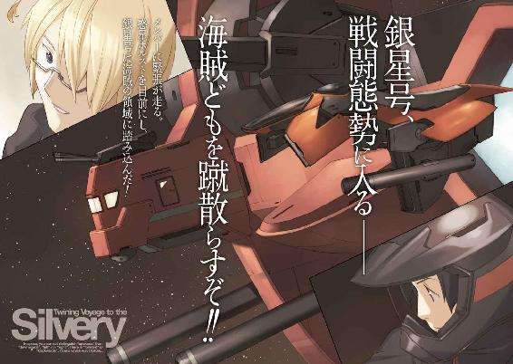
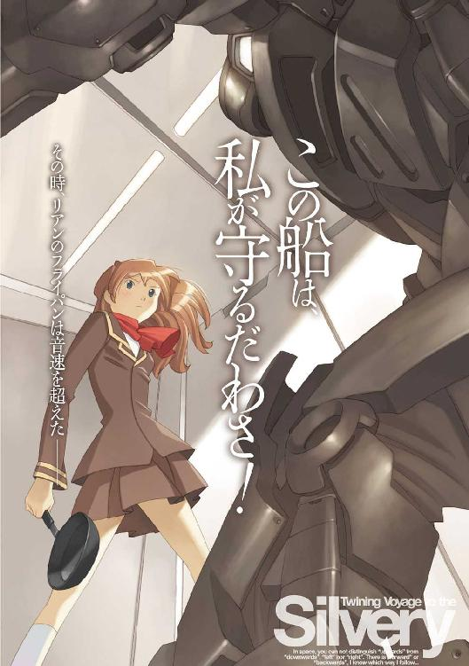
銀星みつあみ航海記
LOG.02 俺らが運ぶべき希望
鷹見一幸
角川スニーカー文庫
本作品の全部または一部を無断で複製、転載、配信、送信したり、ホームページ上に転載することを禁止します。また、本作品の内容を無断で改変、改ざん等を行うことも禁止します。
本作品購入時にご承諾いただいた規約により、有償・無償にかかわらず本作品を第三者に譲渡することはできません。
本作品を示すサムネイルなどのイメージ画像は、再ダウンロード時に予告なく変更される場合があります。
本作品は縦書きでレイアウトされています。
また、ご覧になるリーディングシステムにより、表示の差が認められることがあります。
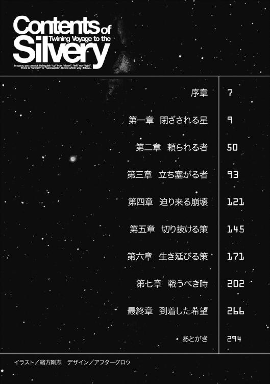
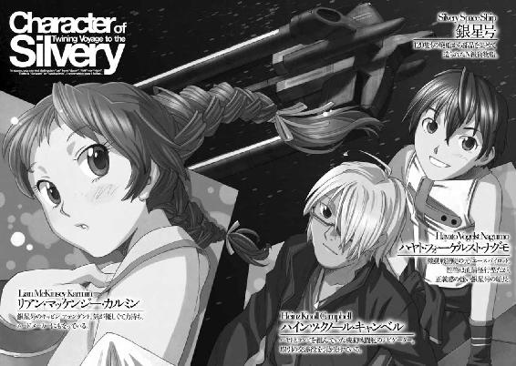
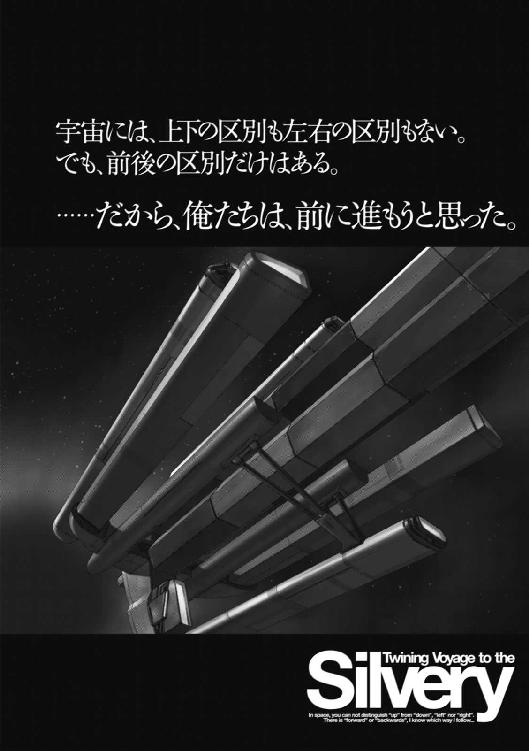
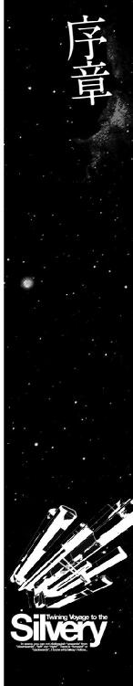
宇宙空間は、いわば砂漠のようなものかもしれない。
茫漠と広がる宇宙に存在する恒星系の惑星の多くは、人の住めない環境の惑星であり、人類が生存可能な水と酸素を持つ惑星は、実に少ない。
生存可能な惑星は、広大な砂漠の中に存在するオアシスのようなものなのだ。
人類が実効支配する惑星は、いわば、このオアシスのような惑星を持つ星系だけであり、それ以外の星系は、管理するものの無い、いわば荒れ地のような扱いを受けていた。
帝国の勢力圏の拡大を図る帝国中央政府は、辺境開拓と殖民を推進するために、マスコミを使って、辺境空域を『自由空域』と呼び、そこに無限の夢と可能性がある、とアピールした。だが、そこは、帝国中央政府の制約も規則も及ばない、つまり管理するものも管理されるものも無い世界だった。
自由空域という呼び名は、宇宙海賊が跳梁跋扈する、無法空域と同義であった。
しかし、規則と慣習でがんじがらめになった既存の世界に飽き足らぬ、自分の可能性を信じる人々にとって、自由空域は自分の可能性を確かめることができる場所に他ならなかった。
人々は、自由の持つリスクを承知で、開拓地を目指し飛び立って行った。
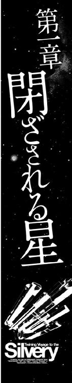
帝国銀河の中心空域から遠く離れた、俗に辺境空域と呼ばれている、何も無い漆黒の宇宙空間に、突然、半透明の紫色の波紋のようなものが浮かんだ。
砂粒を撒き散らしたような遠い恒星の光点が、波紋の向こうに、ゆらゆらと揺れ動く。
それは、その空間に重力波が影響を与えている証だった。
Ｎフィールド発生装置を搭載した宇宙船が、航行していた亜空間から通常空間へと転移するために、フィールドを繫げようとしているのだ。
やがて、ゆるやかに波打つ空間の波紋の中心部から、一隻の貨物宇宙船が姿を現した。
船体の後方に伸びた二つの支持架に、いくつものコンテナを連結した旧式のコンテナ貨物船のシルエットは、貨物船と言うよりも、貨物列車に似ている。
中立フィールドを解除して、通常空間に転移し終わった貨物船の推進機が白く輝き、加速を開始しようとしたそのとき。
貨物船の後部に連結されているコンテナの最後尾の一つが、突然閃光を発して消し飛んだ。真空の宇宙空間では、音は伝わらない。しかし、構造材が繫がっている貨物船の船内には、コンテナが吹き飛んだ瞬間、大きな音と衝撃が伝わった。
ブリッジにいた貨物船の乗組員たちが驚愕に目を見開くのと、メインモニターの通信画面に強制割り込みをかけた警告のメッセージが流れるのは同時だった。
『これは警告である。直ちに積荷を捨て、中立フィールドを展開し、この空域より退去せよ！ 警告に従わぬ場合は、撃沈する』
メッセージを読み終わった乗組員たちの視線が、貨物船の船長に集中した。
額に脂汗を滲ませ、顔色を失った船長は、小声でセンサーオペレーターに聞いた。
「今の攻撃はどこから来た？」
センサーオペレーターは、解析画面の結果を読み上げた。
「Ｂ64......Ｒ３３２......小惑星帯の方向からです......旧式の汎用小口径ビーム砲からの長距離ビームと思われます」
正面のモニターに表示されている警告のメッセージを見上げた船長は、険しい顔つきのままつぶやくように言った。
「くそ......おそらく、廃艦になった旧型フリゲート艦をどっかから引っ張ってきて、海賊船に仕立て上げたに違いない......遠距離砲撃を食らわし、人定事項を把握されんように、文字情報でメッセージを伝える......セオリー通りの連中だな......こいつらは警告するだけ、まだマシな連中かもしれん......仕方ない、積荷を捨てるぞ！ コンテナの切り離しを急げ！」
船長の指示を聞いた貨物管理者らしい男が、驚いたように答えた。
「船長！ この貨物は目的地である惑星ホルストの住民のための食糧と......そして生活必需品です！ あの惑星は自給自足できません！ この荷物が届かなければ......」
「わかっている！ しかし、背に腹は代えられん！ 警告を無視すれば、我々はここで撃沈されるのだ！」
「わかりました......コンテナの切り離し作業を急ぎます......」
「海賊の横行するこの空域に、護衛をつけずに非武装の貨物船を送り込む方が間違っているのだ......この件について君が責任を感じることは無い」
慰めるような口調で言った後で、船長は通信オペレーターに向き直った。
「返信だ！ 現在積荷切り離し作業中、猶予されたし......とな！」
「了解しました！」
通信オペレーターがそう答えて、キーボードを叩きはじめたとき、船体の後部から、ずしん！ という重い響きが伝わってきた。
それは、貨物コンテナを連結しているジョイントに仕掛けられた緊急開放用のボルトが爆破された音だった。
メインモニターに映る廃棄されたコンテナの群れを見て、貨物管理者の男は、忌々しげにつぶやいた。
「......五万五千人の人間が一ヶ月暮らせるだけの食糧や生活必需品を、タダでくれてやるってことか......まったく、海賊というのは、ボロい商売だな......」
「この海賊どもは、荷物を売りさばけるブラックマーケットと繫がりのある連中......つまりはプロだということだ。逆らわんほうがいい......前進微速！ 貨物コンテナから距離をとってからフィールドを展開する。さっさと逃げるぞ！」
停船していた貨物船は、貨物コンテナをその場に投棄すると、そのまま中立フィールドを展開し、亜空間の中にそそくさと消えて行った。
貨物船が消えてしばらくした頃、宇宙空間を漂う貨物コンテナの横に、真っ黒に塗られた一隻の戦闘艦が現れた。
艦籍番号や、所属を意味する文字や記号が一切書かれていないその戦闘艦は、コンテナの脇に来ると、横腹にあるエアロックのシャッターを開き、そこから同じく真っ黒に塗られたアームつきの作業艇を発進させた。
貨物コンテナに近づいた作業艇は、ワイヤーつきのアンカーボルトを打ち込み、コンテナの列を、ゆっくりと曳航し始めた。
海賊に襲われた貨物船が向かうはずだった、惑星ホルストは、辺境域にある開拓惑星の一つだった。
惑星ホルストは、太陽の周りを長円形の軌道を描いて回っているため、公転周期のうち三分の二を厳冬期が占めている。
太陽に近い位置に惑星があるときは、地表は太陽の光で暖められ、通常の水、酸素型の惑星と同様に温暖な気候が続くが、太陽から遠ざかるにつれて、惑星表面の温度は下がっていき、長い冬が訪れるのである。
植物が育ち、実をつけるのは短い夏の間だけであり、それらの植物を食べる小動物や昆虫たちが活動するのもその短い夏の間だけだった。
この惑星に生きる生物は、ほとんどの季節を冬眠して過ごすのである。
こういった環境の惑星では農作物の生育が難しく、開拓の基本となる食糧の自給自足ができないため開拓惑星としての価値は低く、殖民が行なわれることはまず無い。では、なぜ惑星ホルストが開発されたのか。それはこの惑星から産出される、シリリウムと呼ばれる特殊な鉱物資源のためだった。
シリリウムが、特殊な結晶構造を持っていることは以前から知られていたが、十数年前、その結晶構造を人間の脳のニューロンのように使う方法が開発されたことにより、その価値は一気に高まった。
このシリリウムを使うことにより、それまで、巨大なハードウェアを必要としていた高度電子脳が小型化され、電子人格が、ごく普通のバイオノイドにインストールできるようになったからである。
最初、この惑星が探査されたときに、この惑星の地表にシリリウムの鉱脈があることに誰も気がつかなかった。過去において発見されたシリリウムのほとんどは、宇宙空間に漂う星間ガスなどにごく微量含まれるものであり、惑星地表から採掘できるということを誰も想定していなかったのだ。
十年前、この惑星ホルストでシリリウムが産出するということがわかったとたん、帝国中が大騒ぎになった。
惑星ホルストの資産価値は、一気に跳ね上がり、この惑星を領地として所有していたエルノリク男爵家は、惑星の権利を担保にして帝国中央銀行から資金を借り入れ、惑星ホルストに鉱山プラントを設置し、シリリウムの採掘と一次精錬を始めた。
惑星ホルストの全人口は五万五千人。そのほとんどが鉱山プラントに従事する従業員とその家族だった。
この惑星のハイスクールに通う高校生の一人、ウーフ・トゥヤンは、いつものように身支度をして、教科書や汎用端末などを通学用のバッグに放り込むと、クラスメイトたちと一緒に、校門の脇にある高さ二メートルほどの金網のフェンスで囲われた一角に向かった。
その五十メートル四方ほどの広さの場所にウーフたちが入ってしばらくしたとき、ぴんぽーん！ という電子音が鳴り響いて金網のフェンスが自動的に閉まった。
それと同時に、フェンスの上の方に取り付けられている黄色い警告灯が点滅をはじめ、金網で囲われたテニスコートのような場所全体が、ゆっくりと上昇しはじめた。
それは、この惑星ホルストのドームシティの下部にある行政区域と上部にある居住区を結んでいる大型リフトだった。
ゆっくりと上昇していく巨大なリフトの床の上に立ったウーフは、シティを覆う透明な硬質テクタイトの向こうに広がる雪と氷で覆われた低い山が続く外の世界をながめていた。
......あの山の雪が消えるまで、帝国暦で十二ヶ月以上あるんだよな。
ドームの中は空調が効いているけど、外の気温はマイナス四十度以下か、それより低いかもしれないな......夏が来るまで、この惑星は海も山も全部凍りついたまま眠っているんだ。
ぼんやりと、そんなことを考えていたウーフの背中を誰かがちょんちょんと突いた。
あわてて振り返ったウーフは、そこにいた茶色の長い髪をポニーテールにまとめた、快活そうな女の子を見て、無愛想な声で言った。
「なんだよチャニ」
チャニと呼ばれた女の子は、ウーフを見上げて、にっこり笑った。
ふわっと、シャンプーの残り香が匂った。
「帰りにマーケットで買い物するんでしょ？ 付き合ってあげるわよ」
「別にいいよ、俺の家の買い物だから......って、どうしてお前が俺の買い物のことを知ってるんだ？」
「あら、知らなかったの？ あんたのお母さんに頼まれたのよ。ウーフに買い物を頼むと、しなびたレタスとか、古い卵とかを平気で買ってくるから、一緒についていって、ちゃんとした品物を選んであげて......って」
ウーフは、顔をしかめて、小さく舌打ちをした。
「ちぇっ、俺の知らないところで勝手なことやりやがって......文句があるなら自分で買えばいいじゃないか......」
「何言ってるのよ、あんたのご両親は両方とも働いていて、今月は勤務シフトが深夜になってるから、買い物できないってことは、あんたも知ってるんでしょ？」
「ああ、知ってる」
「だったら、家の買い物ぐらいはやんなさいよ！」
「俺は別に買い物が嫌なんじゃないよ......俺の家のことに他人が口出しするのが嫌なだけだ」
不機嫌そうに、ぼそりと答えたウーフを見て、チャニは笑いながら言った。
「何をいまさら他人行儀なことを言ってるのよ。同じ鉱山会社の社宅のお隣さんどうしで、あんたと私は、子供の頃からずっと一緒に育ってきたんじゃない」
ウーフは、チャニの笑顔から、すっと視線を逸らして、つぶやくように言った。
「......それはそうだけど......そういうのが負担になるってこともあるんだぜ......」
チャニは、ひょいと肩をすくめた。
「クラスの連中が冷やかそうが、からかおうが、ほっとけばいいじゃない。気にすれば気にするほど、あいつらが喜ぶだけだよ」
「お前は......気にならないのか？」
小声で聞いたウーフの顔を、一瞬真剣な目で見た後で、チャニは笑った。
「私は気にしてないよ、だって、あんたの世話を焼くのは義務だもん」
「義務？」
「うん、できない人や、困っている人を手助けするのは、できる人や、困ってない人の義務なんだよ。見て見ぬ振りするのは、義務を果たしていないってことなんだよ。あんたは、買い物や、家の事ができない。だったらできる私が手伝うのは当たり前のことじゃない」
「うん......そうだな、義務かもしれないな......」
ウーフが、ほっとしたような表情になってそう答えたとき。
テニスコートサイズの大きなリフトが停止して、ぴんぽーん！ という電子音と共に金網のフェンスが開いた。
ドームの上部にある居住区フロアには、緑の木々が植えられた公園と、いくつもの高層住宅やショッピングセンターが建ち並ぶ光景が広がっていた。
リフトに乗っていたハイスクールの学生たちが、開いたフェンスの扉から一斉に居住区の中に出て行くその流れに乗って、二、三歩前に進んだチャニが、くるりと振り返って、怒ったようにウーフに言った。
「何をぼやっとしてるのよ！ さあ、行くわよ！」
ウーフは、ちょっと驚いたように目を見開いた後で、あわててチャニの後を追った。
「......どうしたんだ？ なんで急に機嫌が悪くなったんだ？」
チャニは、くるりと振り向いて、ウーフをにらみつけた。
「うるさいわね、そんなことどうでもいいでしょ？ どうせ、私のことは義務なんだから！」
「はあ？」
ウーフは、何を言ってるんだこいつは？ という顔になった。
「俺の世話を焼くのは義務だ、って言いだしたのは、お前じゃないか！ 俺は、そうだよな、って賛同したのに、なんでそれが悪いんだよ！」
「私が自分で言うのはいいけど、あんたに言われると腹が立つのよ！ そんなことより、早くショッピングセンターに行って買い物しないと！ 最近物がなくなるのが早いってウワサよ」
「わかったよ、行くよ、行けばいいんだろ」
ウーフは、不満げな顔のまま、チャニの後を追いかけるようにして居住区の中にあるショッピングセンターに向かった。
この惑星ホルストの総人口は五万五千人。その住民のほとんどすべてが、この巨大なドームシティの中で暮らしている。
このドームシティの中には、ショッピングセンターや運動場、体育館という施設だけではなく、人工の森や川も造られている。
ドームシティ内を８の字を描くように走る幹線道路沿いには、小型のバスを連結したような交通システムが走り、市民の足となっている。
その規模は、いわばごく普通の人口五万人のニュータウンが、そのままそっくりドームで覆われているのに等しい。
ドームシティの中に立ってその光景を見た人間は、そうと言われなければ、自分がドームの中にある人工の都市にいるとは気がつかないだろう。
ウーフとチャニが向かった場所は、鉱山労働者用の高層住宅が並ぶ一角にある、一階が食料品と日用品、二階に衣料と書店のテナントが入った、ごく普通の中規模のショッピングセンターだった。
「ほら、カゴ持って......それともカートにする？」
一階の食料品売り場の入り口で、妙に嬉しそうに聞くチャニを見て、ウーフは口をへの字に曲げて首を振った。
「カートなんか押して、お前の後を歩けるか、カッコ悪い」
「じゃあ、カゴくらい持ちなさいよ、これはあんたが頼まれた買い物なんだから」
チャニに押し付けられた買い物カゴを、ウーフは不満そうな顔で受け取った。
「えーと買うものは何だっけ......」
ウーフが、そう言いながらポケットから汎用端末を取り出すより早く、自分の端末を見ていたチャニが言った。
「ジャガイモとニンジン、タマネギは安ければ二袋、高ければ三つ入りのを一袋、あとは小麦粉に香辛料だってさ......」
「なんでお前が俺の家の買い物のリストを持ってるんだよ！」
「おばさん......って言うか、あんたのお母さんに頼まれたって、言わなかったっけ？」
チャニはさらっと、そう答えると、食料品売り場の中を、ずんずんと歩き出した。
「あ、おい、待てよ」
「どこに何が売っているのかくらいは、あんただって覚えているでしょ？ 買うものが決まっているのなら、ウロウロしないでさっさと買っちゃった方がいいわよ」
しかし、食料品売り場の中を歩き始めたチャニが、一分もしないうちに、怪訝な顔でつぶやいた。
「......もしかして、あのウワサは本当だったのかな......」
「なんだよ、ウワサって」
「お店の中......がらんとしてない？ なんというか、こう、品物が少なくなってるような気がするんだけど......」
ウーフは改めて食料品売り場の中を見回した。
確かにチャニの言うとおり、食料品売り場の商品棚のあちらこちらに、空いている場所があった。
特に空きが目立つのは、肉類や鮮魚類が並べてある生鮮食料品売り場だった。
いつもならびっしりと商品がならんでいるはずのチルド棚には、ほとんど品物が無く、剝き出しになったステンレスの板が、天井の照明を反射しているだけだった。
「......本当だ、どうしてなんだろう？」
つぶやくように聞いたウーフを見て、チャニが声を潜めるように答えた。
「私もよく知らないんだけど......ここ二ヶ月くらい、連絡船の入港が遅れているって話を聞いたのよ......」
ウーフは目を見開いた。
「連絡船が入港してないって......この真冬にか？」
一年半に及ぶ長い冬の間、ホルストの住民は、水耕栽培の野菜以外のほとんどすべての食糧を連絡船による輸入に頼らねばならないのだ。
連絡船が来なければ、自分たちの生活がどうなるのか......。
ウーフの背中に、すっと寒気が走った。だが、ウーフは、自分の脳裏に浮かんだ想像を振り払うかのように首を振って笑った。
「大丈夫だよ、今までにも何度も連絡船の入港が遅れたことがあったじゃないか。船の整備のローテーションの関係とか、故障とかで......今度もそういった事が原因だよ。すぐにやってくるさ」
「そうだよね、もし、連絡船に何かあって物資が届かない、なんてことがあれば行政府の偉い人......そう、レイラ様とかが、ちゃんと教えてくれるはずだものね！」
ほっとしたような微笑みを浮かべてうなずいたチャニを見て、ウーフは思った。
......チャニが言っていることは本当なんだろうか？
もし、物資が入ってこないとしたら、行政府の偉い人は、そんなことを俺たちに教えるだろうか？
この惑星に暮らしている人間のほとんどは、連絡船がどれほど大切なものなのか、はっきりと意識したことは無いだろう。連絡船は来るのが当たり前で、品物はあるのが当たり前。誰もがそう信じている。
でも、心の底で、不安に感じているはずだ。
自分たちの生活、暮らし、日常、そのすべてを連絡船が運んでくる品物が支えている。その支えが無くなれば自分たちがどうなるか、それを知っているはずだ。
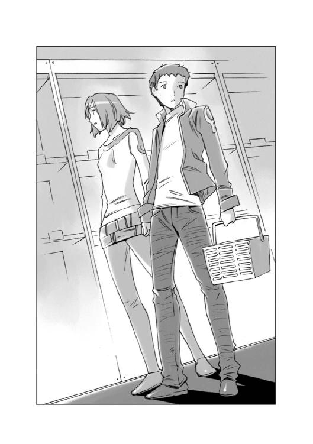
その不安に火をつければ......きっと人々はパニックになる。
自分たちの力ではどうしようもない事実ほど、人間を絶望させるものは無い。
......だとしたら。
そこまで考えたとき、チャニがウーフの背中を、どん！ と叩いた。
「まーた、何か考え込んでる！ あんたがいくら考えたって、なにも変わんないし、変えられないんだから、考えたって無駄よ。さっさと買い物して帰りましょう」
「あ......うん」
ウーフが、少し不安げな顔つきのまま、チャニの後について歩き始めた......その頃。
ドームシティの下部にある中央行政府の建物の、小さな事務室のような部屋の中で、事務用汎用端末机に向かっていた金髪をショートヘアにした二十歳くらいの端整な顔立ちの若い女性が「くしゅん！」と、小さなくしゃみをした。
「大丈夫ですか、レイラお嬢様。室温を上げましょうか？」
少し離れた場所に置かれている机の上で報告書のようなものを読んでいた、品の良さそうな初老の男が立ち上がって心配そうに言った。
レイラと呼ばれた女性は、にっこり微笑んで首を静かに振った。
「いえ、室温はこれで結構です......厚手のセーターを着こんでいますので」
レイラの白くなった指先を見た初老の男は、心配そうに答えた。
「しかし、お嬢様......室温は二十度を切っています......このような寒さの中にいれば、風邪を引いてしまいます。せめて足熱ヒーターだけでもお使い下さい」
レイラは首を振ると、真剣な表情で答えた。
「いいえ、ヒーターは結構です。今は、すべてのエネルギーを水耕栽培プラントを暖めるために使わなくてはなりません。寒さは衣類で何とかなりますが、餓えは食事でなければ満たされません。
もし、このまま封鎖が続けば、このホルストに暮らす五万五千人の領民は、あのプラントで培養されている食用藻類だけで、春まで命を繫がねばならないのですから......」
そして、レイラはふっと笑いを浮かべて言葉を継いだ。
「......それに、今のくしゃみは、風邪じゃなくて、誰かが私たちのことをウワサしていたのですよ。気にする事はありません、シェーファー」
シェーファーと呼ばれた初老の男は、すまなそうに頭を下げた。
「申し訳ありません......エルノリク男爵家に御仕えしてきたこのシェーファーには、ご令嬢であるレイラ様が、こんな辺境の星でご苦労されているのを見るのが、どうにも切ないのでございます......」
「こんな辺境の星、という言い方はおやめなさい、シェーファー。この星は我がエルノリク男爵家が、皇帝陛下から賜った、れっきとした領地です。領主が領地と領民のために尽力する事は当然です」
きっぱりと言い切ったレイラを見て、シェーファーは、あわてて頭を下げた。
「重ね重ね申し訳ありません、お嬢様......」
その、シェーファーの表情を見て、レイラは慰めるように言った。
「あなたの心遣いは、とても嬉しいわ......でもね、シェーファー。ここは屋敷のあった帝星ではないのよ。銀河辺境にある酷寒の鉱山惑星なの。春が来るまであと十二ヶ月、私たちはこの惑星で生き延びなくちゃならないのよ。今の状態は生きていくだけでギリギリだわ。連絡船がやってきて物資が届くまで、特別扱いしてもらえるほどの余裕は無いの......」
そして、レイラは、後悔するように小さく首を振って言葉を付け足した。
「それに......こんなことになるとわかっていたら、もっと食糧自給プラントを増やしていたのですが、私は運転資金を採掘プラントの方に回してしまいました......今回の件の全責任は私にあるのです......」
「そんな！ お嬢様には責任はございません！ これはすべて、この惑星ホルストの鉱山を手に入れようとしているジグラットグループ......いえ、マルス家の仕業です！ マルス家が海賊どもと裏取引をして、補給物資を運ぶ連絡船を襲撃させているのです！」
「証拠がありません......客観的事実はすべてそれを裏付けていても、帝国の法務局と公安局に影響力を持ち、法の番人を自称するマルス家が、それを認めるわけがありません」
レイラが、半分あきらめたような微笑みを浮かべて、小さく首を振ったとき、シェーファーの前にある事務用机の端末から、セットアラームの小さな電子音が響いた。
シェーファーは、アラーム表示の時間を確認すると、一礼して言った。
「レイラお嬢様、会議のお時間です」
「そうね、会議の時間ね......」
レイラはため息をついた。
「自分たちではどうしようもない、目の前にある食糧危機や物資欠乏という現実を、みんなで再確認しあって、その上でなんとかならないものかと眉間に縦ジワ立てて考え込むお時間です、ということね......」
「お嬢様......」
「そんな顔しないでよ、シェーファー......もしかしたら会議中に、物資や食糧を積んだ連絡船から『無事に到着しました』って連絡が入って、みんなで抱き合って喜べるかもしれないじゃない。世の中はポジティブな希望に満ちているから生きていけるのよ」
「そうですね、お嬢様の言うとおりだと思います......私も希望を持たなくてはいけませんね」
シェーファーは、にっこり笑ってそう言うと、部屋の片隅のハンガーに掛けてあった、白いコートを持ってきて、レイラが袖を通し身支度するのを手伝った後で、一歩下がって一礼した。
「行ってらっしゃいませ、お嬢様」
「ええ、行って参ります」
レイラは、そう言って小さく会釈すると、執務室のドアを開けて廊下に出た。
帝国惑星開発局の統一規格である汎用品の緑灰色のパネルが組み合わされたその廊下は、レイラの目に実に寒々しく映った。
その寒さは、殺風景な風景から受ける印象から来るものだけではなかった。廊下の空気は、実際に、凍てつくような寒さでレイラを出迎えた。
レイラは、小さく身震いすると、両手を口の前に持ってきて、息を吐きかけた。
白い息が、どこまでも長く伸びる。
......執務室には最低限の空調が入っているから、まだ十六度以上を保っているけれど、廊下の気温は、氷点下になっているのかもしれないわね。
それでも、宇宙船用の断熱パネルを応用した隔壁だから、この程度の気温低下で済んでいるんだわ。今、この建物の外は、氷点下三十度以下の氷雪嵐が吹き荒れているに違いない。
......この星は......こういった気候が、あと一年近く続くのね。
レイラは、小さくため息をついた後で、コートの襟元を右手で寄せると、背中を丸めるようにして、廊下の先にある会議室に向かって足を速めた。
......実直で、清廉で、人の善意を信じていた父を責める気は毛頭無いけど......もし、我がエルノリク男爵家が、名門貴族の一族だったり、もっと資産家で、帝国内に影響力があったりすれば、こんなことにならなかっただろうな。
......すべては、分不相応な惑星を手に入れてしまった貧乏貴族の悲劇ってところなのかもしれないわね。
レイラは亡き父の顔を思い浮かべながら、小さくため息をつくと、会議室のドアの前に立った。
そして、一呼吸ほどの間、センサーの下でそのまま立ち尽くした後で、あ、そうか、という顔になった。
......いけない、行政府の建物の中の自動ドアのエネルギーは切られているんだっけ。
執務室に出入りするときはシェーファーが開けてくれるから、すっかり忘れていたわ。
レイラは、恥ずかしそうに小さく微笑むと、ドアのノブに手を当てた。
会議室は、空調が効いていた。
実際には二十度そこそこの気温しか無いのだろうが、氷点下に近い気温の廊下を歩いてきたレイラには、ほっとするほどの暖かさに感じた。
会議室には、この惑星ホルストの人々の生活を支えている行政のさまざまな部門の責任者が、顔を揃えてレイラが来るのを待っていた。
楕円形のテーブルの周囲に座っている責任者たちの厳しい顔つきを見回してレイラは思った。
......悪くなることはあっても、決して良くなることは無い、ということが、この人たちの顔を見るだけでわかるわね。
レイラが席に着くのと同時に、五十代のがっちりとした体型の男が立ち上がって口を開いた。
「では、レイラ様がいらっしゃいましたので、これより惑星ホルスト行政府の対策会議を始めます。僭越ながら、この総務部長のモウファスが議長を務めさせていただきます......」
モウファスと名乗った男は、そこで言葉を切って会議室にいるメンバーを見回した後で、言葉を継いだ。
「まず手始めに、総務部から報告を行ないたいと思います......御存知のとおり、この惑星ホルストにおける食糧その他の生活必需品はすべて、定期連絡貨物船による他の星系からの輸送に頼っております。しかし、この三ヶ月ホルストに入港するはずだった連絡貨物船と鉱石運搬船は、すべて海賊の襲撃に遭遇し、ただの一隻も入港しておりません......」
モウファスが、そこで言葉を切って手元にあるキーボードを叩くと、背後にある大型スクリーンに、ずらりと船の名前と日付、そして積荷などが記された一覧表が映し出された。
「これが現在までに消息を絶った連絡貨物船と鉱石運搬船の一覧です。惑星ホルストと輸送契約を結んでいた貨物輸送会社であるシーザーライン社は、損害の多発を理由に継続契約の打ち切りを通告して参りました。船舶保険機構は、このホルストへの船舶輸送の格付けをＤランクからＥランクに落とし、それによって保険金額と輸送運賃は通常の三倍に跳ね上がりました。その三倍の契約金額で新規契約したアズナブル通運の連絡貨物船は、四日前にタンホイザーゲートを出たという連絡がありました......本来なら今日の朝には、このエルノリク男爵領星系に到着するはずなのですが、現在までのところ全く連絡がありません。もし、この連絡貨物船が海賊に襲撃され、輸送に失敗したとしたら、もはや新規契約は不可能だと思われます」
レイラが、真剣な目で聞いた。
「契約金を通常価格の四倍......いや、五倍にしてもダメなのですか？ お金なら心配しなくても、今までのシリリウムの売却益がありますし、いざとなれば、ここのシリリウム鉱山を担保にすれば、いくらでも資金調達できます！」
モウファスは、悲しげな表情で首を振ってみせた。
「お金の問題ではないのですよ、レイラ様......あ、いや、お金と言えばお金のことなのですが......要するに、我々に向けて荷物を運ぶ行為に保険がつかないのです。保険の対象は荷物だけではありません。それを運ぶ船そのもの、そして船を動かす乗組員の生命のすべてに掛かって来るわけです。保険が受けられないということは、つまり、海賊に船を沈められても、乗組員が殺されても、一銭の補償も受けられないということなのです。この帝国に、そんな危険な業務を受ける運送会社はありません。
......いや、中には、金さえもらえればどんな危険な仕事でも請け負う、という業者も存在するでしょう。しかし、そういった業者は信用できません。契約金の前払いを要求した挙げ句に海賊と裏で取引をして、我々には、海賊にやられて荷物を奪われた、と平気な顔で答えるかもしれません。我々の生命線となる物資輸送を預けるにはリスクが高すぎます」
モウファスの言葉を聞いていた出席者から声が飛んだ。
「しかし、そんなことを言っていられない状況になりつつあるんだ。もはや、業者の選り好みなどやっていられる状態ではないのではないかね？」
「いや、しかし、モウファス議長の言っていることももっともだ、金は取られた、荷物は届かないなんてことになれば事態は最悪だ。確実に荷物が届く方法を、と考えるなら、得体のしれない業者に仕事を依頼するのは避けるべきだろう」
そのとき、レイラが手を挙げて言った。
「得体のしれない業者などに金をかけるよりも、そのお金で、ちゃんとした護衛を雇うというのはどうなんですか？ 星間警察が当てにならないのなら、その代わりにちゃんとした装備を整えた警備保障会社に船舶護衛を依頼すればいいのではないかと思うのですが......」
「レイラ様のおっしゃることはもっともですが......」
モウファスは沈痛な面持ちで、キーボードを叩いた。
メインスクリーンに表示されていた、海賊船の犠牲になった船舶のリストが、会社名のリストに変わった。
「これは、帝国内で、船舶護衛、重要物品輸送などの業務に従事している警備保障会社のリストです......全部で千七百八十六社あります......このすべてが、我々の依頼を断ってきました......契約が成立した会社も数多くあったのですが、すべて契約後に違約金を支払うので、契約を解除して欲しい旨の通告をしてきました......」
レイラの顔が曇った。
「それは......どこからか、圧力がかけられた......と見てよろしいのでしょうか？」
モウファスは、沈痛な表情のままうなずいた。
「当然ですが、どの警備保障会社も、契約解除の理由については明確にしておりません。しかし、帝国司法省筋から圧力がかけられたことを匂わせる言動がありました。御存じのように警備保障会社を経営するには、帝国司法省の許認可が必要です。司法省筋から営業許可取り消しをちらつかされて、それでも我々との契約を遂行するような企業はおそらくありません......」
レイラは、つぶやくように答えた。
「......マルス家は、何が何でも、このホルストのシリリウム鉱山が欲しい、ということですね。そのためには、このホルストの領民を餓死させることも厭わないと決めているのでしょう......」
レイラの言葉を聞いた出席者の間に、驚きのざわめきが起こった。
出席者の中から何人もの声が飛んだ。
「レイラ様！ それはどういうことですか？」
「我々を餓死させるとはどういう意味ですか？」
レイラはゆっくり立ち上がると、出席者を見回して、静かに話し始めた。
「皆さんは、新しく施行された領民保護規定、という法律を御存じですね？
今まで、我が帝国では憲法に基づいて各種の法律を規定して、帝国臣民の基本的人権を保障してきました。でも、実際には皇帝の所領以外のいわゆる貴族の所領については、領地の運営にあたる領主の裁量に任されてきたのです。
そのため、領主の中には領民の権利を認めずに、私有物か下僕のように扱う者もいました。
そういった領地のほとんどは、生産性が低く、経済的な発展も後れており、帝国の他の領地との格差が広がるばかりでした。
今回のローデスとの戦争で、帝国全体の国力が向上しない限り、帝国に勝ち目は無いと知った新皇帝は、そういった領地経営能力の無い領主の領民を保護する法律を作ったのです。
それが領民保護規定と呼ばれるものです。
帝国中央政府は、領地経営能力が無いと判断された領主の領地を強制的に接収し、領民を保護下に置くことができるようになりました......接収された領地は民生局の管理を経て、帝国政府の指定した優良なる領主の信託統治領として扱われるのです......」
レイラの言葉を聞いていた出席者の一人が、怪訝そうに聞いた。
「その法律が施行されたということは知っています......領民を顧みない非道な領主の手から領民を救うための、素晴らしい法律だと思いますが......それがなぜ、この惑星ホルストと関係があるのですか？」
レイラは、悲しそうな目でその質問者を見て答えた。
「このまま、この惑星ホルストの封鎖が続けば、どうなるとお考えですか？ この惑星には自給能力がありません。私たちは、餓死を待つしかないのです......そして、先ほどお話しした領民保護規定にある領地経営不適格者の指定条件の中に、領地に飢饉を生じさせ、領民を餓死させたるもの、という規定があります。つまり、私は、その規定の対象者となるのです......」
会議室が再びざわめいた。
「......じゃあ、レイラ様のエルノリク男爵家は、領地経営の資格が無いと烙印を押されるということですか！」
「......そして、この惑星ホルストは、誰か別の領主に信託統治されることになる......」
誰かが、驚きの声を上げた。
「もしかして......それが、マルス家なのですか？」
レイラはうなずいた。
「信託統治先の指定は、帝国中央政府の司法委員会が行います。そしてその委員会を牛耳っているのは、マルス家なのです」
会議室のあちこちから、怒りの混じった声が飛んだ。
「そんな！ レイラ様は領地経営に失敗なんかしていない！ もし、餓死者が出たとしても、それは全部マルス家が仕組んだことじゃないか！」
「原因を自分で作っておいて、責任を他人に負わせる、そしてその他人の持っているものを取り上げるなんて、そんな馬鹿な理屈があるもんか！」
レイラは、半分泣きそうな顔で首を振った。
「確かに、今回の事件の裏にはマルス家の策謀があります。しかし、その原因はやはり私にあるのです。
......私は、亡き父からこの惑星ホルストの開発を引き継ぎました。無一文同然の貧乏貴族でしかなかったエルノリク男爵家にとってシリリウム鉱山は、身に過ぎた贈り物だったのかもしれません......私と父は、この惑星で働く人々のために、居住環境の向上に力を入れてきました。しかし、私は、自分たちの生活必需品を運ぶための輸送船も、それを護衛する軍隊も持とうとはしませんでした......いかに素晴らしい都市とそして設備を持とうとも、それを維持し、守るための最低限のものすら用意していなかったのです。私には、領地経営をする能力が無いと判断されてもそれは仕方ないことなのかもしれません......」
レイラはそこで言葉を切ると、もう一度真剣な目で会議の出席者を見回して言った。
「しかし、本当の問題は、そんなことではありません......もっと重要な問題があるのです......」
静まり返った会議室の中に、レイラの言葉が流れた。
「私たちは、誰とも交渉ができないのです！ この封鎖を解いてもらうために、交渉すべき相手がいないのです！ 私たちの敵は裏で糸を引いているマルス家であることは間違いありません。しかし、マルス家はそれを認めないでしょう。領主である私が、領民を飢餓に陥れるようなことはやめてください、この領地を差し上げます！ と言いたくても、それを言う相手がいないのです！......マルス家の目的は、このホルストの住民に餓死者を出すことです。餓死者が出るほどに、この惑星の人々を痛めつけることなのです！ しかし、私にそれを止めることはできません！ 降伏したくとも、降伏する相手すらいないのです！
そして、昨日の夜から、跳空間通信を委託している通信プロバイダが、規約違反を理由に個人宛ての通信中継契約を一方的に破棄してきました。今、このホルストからは一切の通信ができません！
通信が送れるのは、いわゆる公的機関に対する通信だけです......このホルストは、完全に封鎖されてしまったのです！ もはや悲鳴も泣き声すらも届かない状況下にあるのです......」
この惑星封鎖には、交渉も降伏も存在しない。この状況は、市民の餓死という破滅的な結末をもたらすまで終わらない。そして、その悲鳴はどこにも届かない......。
レイラの言葉を聞いた会議の出席者は、全員顔色を失った。
静まり返った会議室に、モウファスの言葉が響いた。
「......惑星ホルストを取り巻く状況を、ご理解できたと思う......今、現在、我々は破滅の瀬戸際にいる。しかし、それを憂えたり、怒ったりしても仕方が無い。我々は実務者だ。我々がなすべきことは、この危機をいかに切り抜けるか、それを考えることだ......」
モウファスは、そこで言葉を切ると、再びコンソールのキーボードを叩いた。
会議に出席しているメンバー一人一人の前に置かれているパーソナルモニターに、二つのグラフと表が映し出された。
「自給能力の無いホルストの住民にとって、外部からの輸送が途切れる事は死活問題です。このグラフは、ホルストのエネルギーと食糧の消費量を示します。上のグラフの赤い線が、惑星ホルストの全人口が、一ヶ月間生きていくために必要な最低限のエネルギーの総量をこの先一ヶ月ごとに半年分表示したもので、下のグラフの青い線は、同じく、全人口が一ヶ月生きていくために必要な食糧の総量を一ヶ月ごとに半年分並べたものです。ここに、今現在の供給可能なエネルギー量と、そして備蓄されている食糧の量を、黄色いグラフで重ねます......」
モウファスの言葉が終わるのと同時に、二つのグラフの上に黄色いグラフが重なった。
エネルギーの供給量を示す赤い線の上に重なった黄色い線は、わずかにはみ出すように推移していくのに比べて、食料の備蓄量と供給量を示す青い線の上に重なった黄色い線は、反比例するように下がっていく。
会議室にいるメンバーの顔色を見て、事態の深刻さが伝わった事を知ったモウファスは、ゆっくりと言葉を継いだ
「このグラフを見ておわかりのとおり、今現在備蓄されている食糧は、あと二ヶ月で底をつくことになります......この先、連絡貨物船が来なければ、我々は深刻な飢餓に直面する事になります。そこで、我々は、水耕栽培プラントを改造し、野菜ではなくカロリーの高い主食となる藻類を食糧として大量生産する計画を立て、現在そのプラントを建設中です。限られた施設と環境の中で、五万五千人の人間を養うことができるのは、この食用藻類だけです。備蓄食糧が尽きてから取り掛かっても遅いのです。このプラントが操業を始めれば、餓死という最悪の事態だけは避けることができるのです」
そのとき、三十代の女性が手を挙げて聞いた。
「その食用藻類のプラントの件ですが、完成度はどれくらいなのでしょうか？ 最悪の場合、我々には食糧が自給できるのだという情報を公開する必要があると思うのです」
モウファスは、会議室に座っている二十代後半の瘦せた男を見て言った。
「食用藻類の栽培の件に関しては、責任者のスタム君から聞いたほうが早いだろう......スタム。君の造っているプラントの供給能力はどうなっている？」
スタムと呼ばれた瘦せた男は、ぼそぼそとした口調で答えた。
「食用藻類は、御存じのように太陽光線と同じ波長の光と水、そして藻類の生育に適した温度さえあれば理論上は培養可能です......現在増産体制を整えつつありますが、私には五万五千人を養うほどの量の藻類を栽培した経験がありませんので、どうにもお答えしようがありません」
スタムの言葉を聞いたメンバーの顔に不安の色が漂うのを見たモウファスは、心の中で舌打ちをした。
......経験が無くて、どうなるのかわからない、というのは本音だろう。責任を負わされた以上、不確実な答えを返すわけにはいかないということもわかる。
しかし、いくら否定したところで、その責任が軽くなるわけではない。自分が負わされているのは単なる責任ではなく、この惑星で生きているすべての人間の希望だということが、この男には理解できんのだろうか？
そこまで考えた後で、モウファスは気を取り直したように小さく首を振った。
......いや、単に、この男は、そこまで気が回らないだけなのだろう。目の前にある自分の仕事を考えるだけで精一杯なのだ。
......ならば、その部分をフォローするのが私の役目か。
モウファスは、楽観的な表情を作り上げると、くだけた口調でスタムに話しかけた。
「経験が無いのは、誰も同じだよスタム君。私だって、自給能力の無い惑星が封鎖されて食料が入って来ない、なんて状況を経験したことはない。自分の経験が通用しないということは不安なことだ。だが、だからと言って、何もできないわけではないだろう？
君は、我々には無い食用藻類培養のノウハウを持っているんだ。食糧自給のできない、この惑星ホルストに生きる五万五千人にとって、君の食用藻類栽培プラントは、最後の頼みの綱なのだよ。我々は別に君にできないことをやれと言っているのではない。君にできることをやってくれ、と言っているに過ぎないんだ......わかるだろう？」
「ええ、まあ、それはわかりますけど......できるかどうかわからないことに違いはありませんよ」
不満げな表情で唇を尖らせるスタムを見て、モウファスは、思わず頭を抱えそうになった。......ダメだ、こいつは何もわかっちゃいない。
こいつの言うところの『できないかもしれませんよ、ダメかもしれませんよ』というのは予防線だ。失敗したときの自分の責任を軽くするための言い訳でしかない。
だが、この惑星ホルストを取り巻く事態は、すでに『できないかもしれない』ではなく『やらなくてはならない』というところに来ているのだ。
そのとき、黙ってモウファスとスタムのやり取りを聞いていたレイラが口を開いた。
「単刀直入にお聞きします、スタムさん。食用藻類の大量培養はできるのですか？ それともできないのですか？」
スタムは、唇を尖らせて、半分怒ったような口調で答えた。
「......ですから、わからないと言っているでしょう！」
レイラは、困ったわね......という表情を浮かべると、諭すように言った。
「確かに、先のことは誰にもわかりません。未来は不確定です。でも、だからといって、わからないままでは、何一つ決定できません。
私たちは、あなたに、百パーセントの保証を求めているわけではないんです。成功する可能性はあるのか、無いのか。その見込みを聞いているのです。あなたには、私たちと違って、知識があり、スキルがあります。その知識とスキルで判断することは、あなたにしかできないのですよ？」
「で、でも......その判断が間違っていたら......その責任は私に来るわけでしょう？」
レイラは、当然です、という風にうなずいてから答えた。
「はい、そのとおりです。いくら予防線を張ろうが逃げ道を作ろうが、人間は責任から逃げる事はできません。役職につき、資格を持ち、スキルを持つということは、責任も同時に負うということなのです。あなたには、この惑星ホルストに暮らす五万五千人の生命を維持するための食用藻類を生産する、という責任があるのです。
失敗するかもしれません、予定の目標に届かないかもしれません。未来は不確定です。でも、それは判断を下さないでもいい、という理由にはなりません。その不確定な未来を予測し、判断を下すのも責任の中の一つなのです......」
そして、レイラはそこで言葉を切ると、にっこり笑ってスタムに聞いた。
「で？ 見込みはどうなのですか？ 本当は、あなたもわかっているのでしょう？」
レイラに微笑みかけられるとは思ってもいなかったのだろう、スタムは、驚いたように目を見開くと、少し赤い顔でうなずいた。
「え、ええ、まあ......千人、二千人分ならば、ノウハウがあります。ですからその五倍の一万人分くらいならば、何とか培養する自信はあります。でも、五万人分を超えるとなると、水質や温度の管理とか、かなり未知数の部分が多くなってくると思うんです。ましてや培養タンクを一から作らなくてはならないとなると、どんな不都合が起こるかわかりません......あと二ヶ月で、五万五千人分の必須カロリーを維持できるだけの分量の食用藻類を培養できるようになる見込みは、五分五分というところではないかと思います」
素直に答えるスタムを見て、モウファスは心の中で感心したようにうなずいた。
......北風と太陽のたとえ話ではないが、十九歳の美人の貴族のお嬢様の微笑みは無敵......というところか。わしが相手では、こうはいかないだろう。逆に態度を硬化させてしまったかもしれん。
そこまで考えてから、モウファスは自分を叱るように小さく首を振った。
......いや、違うな。若い女性とか、美人の貴族のお嬢様とかそういった表面的な理由だけではあるまい。レイラ様は、弱冠十九歳の女性の身でありながら、エルノリク男爵家の所領であるこの辺境の惑星ホルストに来られ、こうやって陣頭指揮を執っておられる。
彼女の言った、あの『役職につき、資格を持ち、スキルを持つということは、責任も同時に負うということなのです......』という言葉に噓はない。自分自身がそうやって生きているがゆえに、彼女の言葉には説得力があるのだ。
モウファスがそんなことを考えていたとき、会議のメンバーの中にいた三十代の女性が真剣な顔つきで手を挙げた。
「モウファス議長に、一つお聞きしたいことがあります......よろしいですか？」
「どのようなことですかな？ シーラ殿」
シーラと呼ばれた三十代の女性は、真剣な顔つきを崩さぬまま、ゆっくりと聞いた。
「......このホルストには、今現在どこからも物資が入ってこない。我々は封鎖され、孤立している......この事実を、いつ市民に知らせるおつもりですか？」
会議室が、一瞬、しん......と静まり返った。
出席者の視線は、モウファス議長に集中していた。
モウファスは、小さく目を見開くと、あわてたように首を振った。
「知らせる事はできんよ、もし、市民にそんなことが知れてみたまえ、間違いなくパニックになる！ すべての人間が理性的に動くはずが無い。パニックに駆られた市民は、群集心理に衝き動かされたまま、破壊活動を起こすだろう。秩序が維持できなくなれば、それで終わりだ、ここで我々が無い知恵を絞って考えている生き延びるためのさまざまな計画......食用藻類の培養計画や、それを使った食品の開発、そして必須カロリーを基にした配給計画。そういったすべてのものが無駄になる。
このホルストに秩序が維持されていること。それが、生き延びるための大前提になるのだ......従って、私はこの事実を公表するつもりは無い」
シーラは、不安そうに聞いた。
「それはよくわかります......しかし、いくら隠蔽しようとしても、真実は伝わります。現に、市場に流通する品物の中には、品不足に陥っているものも出始めました。情報を隠せば、それは我々行政府に対する不信を呼びます。不信が憶測を呼び、流言蜚語が飛び交うようになり、人々が我々ではなく、自分の中にある恐怖や憶測を信じるようになれば、その時点で秩序は崩壊します！ 情報の公開こそが、その秩序崩壊を防ぐ唯一の方法だと思われます！」
会議室は一気に、ざわついた。
「いや、しかし、今の状況について、すべての情報を公開してしまえば、パニックの引き金を引くことは間違いない、公開はできんだろう」
「しかし、限定的な情報公開はかえって猜疑心を煽ることになりかねんぞ。実は......実は......と、悪い情報を小出しにすれば不信感は、つのるばかりだ」
「箝口令を敷いて情報流出を管理することはできるはずだ。ソースが不明確な情報を信用する者はいないだろう」
「いや、そんなことは不可能だ、人の口に戸は立てられん......それに人が情報を信じる理由はソースの確実性ではない。たとえ不確実であっても人は信じる、そして信じた情報は正確だと思い込む......」
「俺はお前らが知らない情報を知っている、ということが優位の証明だと思い込んでいる人間がいる限り、デマは収束しない。デマというのは、他人より優位に立ちたがる人間が広めるものなのだ」
「では、どうすればいいのだ、公開することも、隠蔽することも、そのどちらも結果は決して望ましいものではないぞ？」
そのとき、ざわつく会議室の中に、りん、とした声が響いた。
「私は、情報の公開は必要だと考えます」
会議室が静まり返った。
出席者の視線を浴びて立ち上がったのは、レイラだった。
「情報を公開しないでおいて、市民に向かって、私たちを信じろというのは、虫が良すぎると思うのです」
「し、しかし、レイラ様......」
異議を申し立てようとするモウファスを見て、レイラはうなずいた。
「確かに、市民を不安に陥れることは、行政の無能さを意味します。自分たちに未来は無い、自分たちは餓えて死ぬんだ。そんな情報を与えられれば、誰だって自暴自棄になります。私たちがするべきことは、悪い情報と同じくらい、希望を持つことのできる情報を市民に与える事ではないでしょうか？」
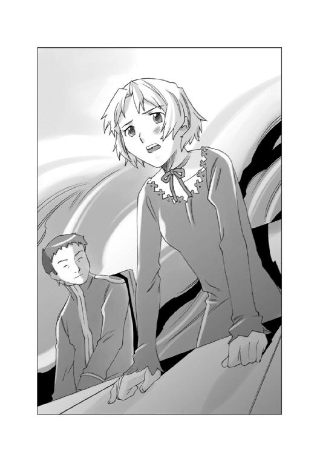
会議の出席者の間から、不満げな声が飛んだ。
「希望を持つことのできるような情報は、例の食用藻類だけではありませんか......それとて海のものとも山のものともわからん状態だ......これで、どうやって市民を安心させる事ができるのですか？」
「そうです、市民が望んでいるのは、食える苔が栽培されている、などという情報ではありません。連絡貨物船がいつ入港するのか、その情報なのです！」
「我々のために荷物を運んでくれる運送会社は、どこにもないのですぞ！ 護衛する船がいなければ、どこも契約してくれない！ だが、護衛してくれるはずの星間警察は役立たずで、民間の警備保障会社も相手にしてくれないとなれば、一体誰がこのホルストまで物資を運んでくれるというのですか？ 海賊に狙われ、船が沈められるというのに、それでも物資を運ぶ......そんな会社があるわけがありません！」
レイラは、静かにうなずいた。
「皆さんのおっしゃるとおりです......しかし、私たちは、まだ手を尽くしたわけではありません！ 八方手を尽くし、通信手段を確保してありとあらゆる運送会社の戸を叩き、私たちの窮状を訴えなくてはなりません！ この帝国には、それでもなお、危険を冒して物資を運んでくれる船がいるはずです！」
その、自信に満ちた表情を見たモウファスは、目を輝かせた。
「もしかして......レイラ様には心当たりがおありなのですか？」
「心当たりと言うほどのものではありません......会った事も話したことも無い相手ですから......でも、あの人たちなら、きっと私たちの望みに応えてくれると思うのです......」
そして、レイラは、自分の手元にあるパーソナルモニターに目を落とした。
そこには、ピンク色の旧式コンテナ貨物船の映像が映し出されていた。
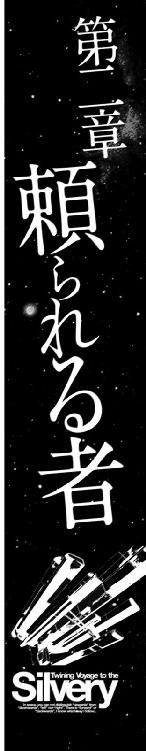
「この、渦を巻いている銀河の中心には、なにがあるんだろう？」
銀星号の操縦士席のパーソナルモニターに映し出された銀河系の光の渦を見ていたハヤトのつぶやきに、隣にあるナビゲーター席に座って聞いていたハインツが怪訝な顔で答えた。
「いきなりモニターを待ち受け画面にして、なんでそんなことを言い出したんだ？」
ハヤトは、背もたれに体重をかけて、頭の後ろで両手を組んで、自分の前にあるパーソナルモニターをにらみつけると、忌々しげにつぶやいた。
「世間の人たちも、たまには浮世を離れて、銀河の渦の中心に何があるのか？ みたいなことを考えろって言うんだよな......俺たちのことばかり追っかけないでさ......」
ハインツは、コンソールのキーを叩いて、ハヤトがさっきまで見ていたモニターの画面を、自分の画面に呼び出した。
そこにはピンク色の宇宙船......つまり自分たちが乗っている銀星号の映像と、ハヤトとハインツの顔写真、そして、二人の経歴やら何やらを興味津々という口調でまくし立てているアナウンサーの映像が映し出されていた。
ハインツは苦笑いしながら言った。
「突然、銀河系だの星の渦だの、妙なことを言い出したから、何のことかと思ったら、マスコミの報道の件か......まあな、確かに今、俺たちは世間の関心の渦の中心にいるよな......」
ハヤトとハインツの乗り込んだオンボロ宇宙船「銀星号」が、小麦の病気のために滅亡の危機に瀕してた農業惑星バレリアに、爆薬と化した殺菌剤一万二千トンを運び、惑星バレリアを救った、というニュースは、マスコミの手によって帝国中に報道され、ハヤトたちは一躍、時の人となっていた。銀星号の映像がマスコミの配信するニュースに出ない日は無く、ハヤトとハインツの経歴や、銀星号を手に入れたいきさつなどが、何度も繰り返しネットで配信されていた。
ハインツは振り返って、自分の後ろに浮かんでいるホログラムの女性に聞いた。
「クララ、今、俺たちのところに来ているマスコミの取材依頼のメールは何件だ？」
クララは、清楚な微笑みを浮かべて答えた。
『取材を申し込んでいる会社の数でしょうか？ それとも、延べのメール件数でしょうか？』
「その両方」
『会社数は、星間ネットニュースを放映している放送会社を筆頭に、各種ネット配信会社、広告代理店、プロモーター、プロデューサー、その他いろいろ含めまして七百十五社。なお、これにはルポライターなどの個人で取材を申し込んできた人の数は含まれておりません。そして取材の申し込みの件数は延べ八千九百九十七......いえ、今、九千件をヒットしました。おめでとうございます』
「ブログの閲覧数じゃないんだ、ちっともめでたくない！」
怒ったように答えたハヤトを見て、ハインツがなだめるような口調で言った。
「まあまあ、そう怒るな。もっとポジティブに考えろ。俺たちは運送業者だ、それも零細企業なんてもんじゃない。こんな会社がこの世にあるってことを世間の人たちは、ほとんど知らない。
大手の運送業者なら、がんがん宣伝費をかけて、会社の名前をアピールすることができるけど、俺たちにはそんな金は無い。そういった意味では、このマスコミの取材はプラスだ。こっちから売り込まなくとも向こうから買いに来るってわけだ。それに俺たちは悪いことをして有名になったわけじゃない......違うか？」
「それはそうだけど......お前だって知っているだろう？ マスコミの常套手段を。
まず、有名にしておだて上げて、英雄に仕立て上げて、それを売り物にする。そして売れなくなったら、その英雄を引きずりおろして泥まみれにして、こんどはそれを売り物にするんだ。
俺は別に有名になりたくてあの仕事を請け負ったわけじゃない。だけどマスコミは俺たちを英雄に仕立て上げたがっている。ここで、マスコミの誘いに乗ったら、きっと次は『英雄の素顔！ 彼らはあの仕事を売名目的で請け負った！』とか『英雄になりたかっただけの若者たち！』とかいう見出しが飛び交うことになるのは目に見えているじゃないか。
世間の連中は手を叩いて喜ぶだろう『ほうら見ろ、あいつらは売名が目的だったんだ』ってな......俺には、そんなやつらを喜ばせる気はまるっきり無い。マスコミの取材は一切シャットアウトして、知らん顔していようぜ」
ハインツは肩をすくめた。
「でもなあ、そうもいかないぞ。俺たちは今、そのマスコミの本拠地でもあるウィンザーレット星系に向かっているんだ。ウィンザーレット星系は、帝国の南部にある主要十七州を統括する基幹星系で、帝国中央政府の出先機関や、マスコミの放送局、民間の市場と流通団地という、帝国南部の、ありとあらゆる品物と情報を扱う機関のほとんどが集まっているんだ。まあ、確かにマスコミの中にも馬鹿はいることは確かだが、そういった馬鹿は相手にしなきゃいいんじゃないのか？」
「その馬鹿と、まともなヤツとを、どうやって見分けるんだ？ 額に『馬鹿』って書いてあって、誰にでも見分けがつくのなら簡単だけど、そうじゃないだろう？ だったら、最初から全部相手にしなけりゃいいんだ。ウィンザーレット星系に行けば、マスコミどもがてぐすね引いて待ち構えていやがるのは間違いない。どっか他の星系に逃げて、ほとぼりが冷めるのを待ったっていいんじゃないのか？」
ハインツは難しい顔になった。
「うーん、余裕があれば、そういうこともできるんだろうが、今の俺たちにはそんな余裕はないぞ......」
「時間ならたっぷりあるぞ。だって、今運んでいる圧縮小麦粉一万五千トンは、運送を請け負った荷物じゃなくて、バレリアの自治政府から謝礼として俺たちがもらった物なんだから、別にいついつまでに届けなきゃいけないという期限があるわけでもない......」
怪訝な顔をするハヤトを見たハインツは、黙って自分の前にあるキーボードを叩いた。
ブリッジのメインモニターに映し出されたのは、なにやら数字が一杯書き込まれた表計算ソフトの画面だった。
「これは......収支合計か？」
ハインツはうなずいた。
「ああ、そうだ。俺たちが経営しているこの銀星運輸の経済状態だよ。俺が余裕が無いと言ったのは、時間的なものじゃない、経済的な部分なんだ」
「経済的な部分って......収入が無いってことなのか？ だって、会社を立ち上げてから今までずっと仕事は途切れないで続いていたじゃないか！」
「まあな、確かに仕事は途切れずに続いていたけど、収入が続いていたわけじゃない。つまり、会社の収入ってのは、全部現金で入ってくるわけじゃないんだ。手形とか小切手とか、そういったもので支払われているものもあるんだ。手形とか小切手というのは、将来において支払いを約束した証明書みたいなものなんだ......」
そしてハインツは、コンソールを操作して、メインスクリーンの収支計算表の別の場所にポインタを動かして、説明を続けた。
「......んでもって、こっちが支出の額だ。俺たちの作った銀星運輸は、まだ信用度が低いから、宇宙船の推進剤の代金や、水や酸素や食料、宇宙港の係留代金という経費のほとんどを現金で支払わなくちゃならないんだ......収入になっている手形や、小切手の期限が来て現金化されるまで、手持ちの運転資金は減り続ける一方ってわけさ」
メインスクリーンに映し出されていた収支計算表を見ていたハヤトが、つぶやくように言った。
「......惑星バレリアに運んだ殺菌剤の運賃の支払いは、半年も先なのか......知らなかった」
「バレリア自治政府の、国家予算から支払われるから仕方ないんだ。でもまあ、支払いは先になるけど不渡りが出ることはまずないから、それほど問題じゃない。問題なのは、この支払いがあるまで、俺たちの会社の運転資金はギリギリだってことだな。バレリア政府が、俺たちにくれた一万五千トンの小麦は、これを売って当座の足しにしてくれ、という心遣いだな......」ハインツは、そう言うと、コンソールを操作して、収支計算表から、何か別の表に画面を切り替えた。
「というわけで、こいつが、ウィンザーレット星系にある穀物相場の取引状況の一覧だ。最大の生産地であるバレリアが打撃を受けた関係で、一時期バーレナン小麦の買い付け価格は天井知らずだったが、今は下がり気味だ。俺たちが病気を食い止めたから、この先もっと下がるだろう。売るなら早い方がいい......」
そしてハインツはゆっくりとハヤトに向き直って言った。
「つまり、ウィンザーレット星系に行かないで、どっか遠くに行こう、というお前の提案は却下だ。俺たちは積荷の小麦が値崩れを起こす前に一刻も早くウィンザーレット星系に行って、そこでこの小麦を現金化しなくちゃならないってことだな」
ハヤトは、心底がっかりしたような顔になった。
「銀星運輸を倒産させるわけにはいかないもんな......ウィンザーレット星系に向かうとするか......その代わり、マスコミの相手は任せたぞ、俺はまっぴらゴメンだからな！」
「ああ、そっちの方は俺がなんとかする」
「頼むぞ......それにしても、マスコミってのはどうしてこう、興味本意のことしか追っかけないんだ？ この広い宇宙には、俺たちのことなんかより、もっと注目してもいいような不正や、知らせるべきことが、いくらでもあると思うんだけどな」
ハインツは肩をすくめた。
「仕方ないさ。誰もが何かを考えたがっているわけじゃない。何も考えないで、ただ面白がりたいって人だっているのさ。考えさせられるようなものは大嫌いな人がね。んでもって、この宇宙に暮らしている人間のほとんどが、そういう人なんだ。マスコミだけを責めるわけにはいかないよ......」
「そんなもんかなあ......まあいいさ、ウィンザーレット星系に着いたら、すぐに小麦を売って、さっさと、どっか遠くの......辺境空域にでも逃げちまおうぜ」
「辺境空域ねえ......確かにマスコミも来ないけど......きっと仕事も無いぜ、あんなところ......なんせ、ほとんどが開拓惑星か、それよりちょっとマシくらいの人口密度の低い惑星ばっかりだ」
「知ってるよ、俺たちの故郷の惑星シレンだって、似たようなものだったじゃないか。汎用のタンホイザーゲート一個に、小さな軌道エレベーターが一基あるだけの片田舎の自治惑星だったぜ」
ハヤトの言葉を聞いたハインツは首を振ってみせた。
「俺たちの故郷の惑星シレンも確かに田舎の惑星だったけど、辺境空域の惑星は、あそこよりもっと田舎だぞ。軌道エレベーターどころか、まともなタンホイザーゲートすら無い恒星系が、いくらでもあるんだ」
ハヤトは怪訝な顔になった。
「タンホイザーゲートが無いって、どういう意味だ？ じゃあ、どうやってその星系まで行くんだ？ Ｎフィールドを発生させて亜空間を使っても、せいぜい光速の十倍程度の速度しか出せないんだぞ、隣の星系まで四光年の距離があれば一年かかるぞ」
「いや、タンホイザーゲートはあることはあるんだが、数が少ないんだ。二つの星系に一個とか、三つの星系に一個とか......知ってのとおりタンホイザーゲートは、重力コントロール技術を応用して、空間に穴を開けるんだが、そのときにエネルギーを馬鹿食いするシロモノだ。辺境のゲートは帝国惑星開発局が無償で設置したものだけど、ランニングコストが馬鹿にならない。辺境惑星にはエネルギー源になる満足な反応炉も無いし、何より金がない。金が無いんだから、俺たちみたいなフリーの運送会社が物を運ぶような仕事も無いってことさ。
まあ、よほど緊急の品物でもあれば別だろうけど、惑星バレリアに爆薬に変質した殺菌剤を運んでくれ......みたいな仕事は、そうあるわけない。
無事に済んだから、笑って話せるけど......あれと同じことをもう一度やれ、って言われたら俺はお断りだぞ」
ハヤトは、にやっと笑って答えた。
「いいや、わかんないぞ、今回の惑星バレリアに殺菌剤を運んだ件が有名になっちまったからな。世間は俺たちのことを危険な荷物を運ぶ専門家だと思い込んでいるかもしれない......」
「それは嫌だな......」
ハインツが、露骨に嫌な顔をしてみせたとき、ブリッジのドアが開いて、マグカップを載せたトレイを持ったリアンがコーヒーの香りと共に現れた。
「ハヤト船長、ハインツ航海長、コーヒーをお持ちしました！」
「お、さんきゅー」
嬉しそうな微笑みを浮かべてマグカップを受け取るハヤトを見て、ハインツは小さく肩をすくめた。
その表情を目に留めたのだろう、マグカップを抱えたハヤトが不満そうに言った。
「なんだよ、なんか言いたいことでもあるのか？」
「いや、お前はわかりやすくていいな、と思っただけだ」
「悪かったな、単純で！」
「怒るなよ、誉めているんだぜ」
ハインツとハヤトのやり取りを、楽しそうに、にこにこ笑いながら見ていたリアンは、ふと、視線をブリッジのメインモニターに映した。
そして、そこに映し出されている表計算ソフトの数字に目を留めると、怪訝そうに目を細めた。
あれ？......これって......銀星運輸の収支合計の表なのかな？
えーと、この数字が収入で......こっちの数字が経費よね？ んでもって、この数字が差し引き残高で......あ、そうか、この収入のほとんどは決済日が来ていないんだ。
決済日が来るまで、このお金は、収入として予定されているお金でしかないんだわ。
......ということは、今、銀星運輸が自由に使うことができる金額は......。
リアンは、驚いたように目を丸くした後で、ハヤトに向かって、怒ったようにまくしたてた。
「ハヤト船長！ あんたは、なんて水臭い人だわさ！ お金が必要なら必要だと、早くあたいに言うだわさ！ 今のバレリアはあの病気騒ぎで土地の値段が下がっとるけんど、この銀星号が運んだニトロ・バイセルス・ナトリウムのおかげで、この先持ち直すことは間違いないだよ！ なあに、国道に面した畑を一反五畝も売れば......」
「ちょっと待て、リアン、お前、何の話をしてるんだ？」
「何の話って......銀星運輸にお金が無いって話だわさ。この収支合計を見れば、会社が危ないってのはすぐにわかっただわさ！」
リアンの言葉を聞いたハインツが、苦笑いを浮かべて答えた。
「おいおい、リアン。人聞きの悪いことを言うな。うちは別に経営危機に陥っているわけじゃないぞ、確かに手持ちの運転資金が心細くなっていることは事実だけど、銀星運輸は今のところ無借金経営なんだ。この銀星号だってローンを組まずに現金で買ったんだからな」
「でも......」
不安そうな顔をするリアンを見て、ハヤトが、笑いながら説明した。
「数字だけ見ると、運転資金の余裕がないように見えるけど、俺たちの手元には現物があるから大丈夫なんだってさ」
「現物？」
「銀星号に積んであるバーレナン小麦のことだよ、あれを売ればすぐに現金化できる。あれは請け負っている荷物じゃなくて、俺たちの物だから、処分するのは自由なんだ」
リアンの顔が、ぱっと明るくなった。
「そうだっただか！ なら安心だわさ！ あたいは、もう、てっきり銀星運輸は倒産寸前で、銀星号を売り払わなくちゃならないのかと思っていただわさ......うちの惑星で作ったバーレナン小麦は、一級品だからきっと高く売れるだわさ！」
「ああ、この小麦はリアンの親父さんたちが一生懸命作った小麦だものな、安売りはしたくないよな......」
ハヤトの言葉を聞いたリアンは、目を輝かせた。
「ハヤト船長！ お願いがあるだわさ！ この銀星号に積んであるバーレナン小麦の売却は、あたいにやらせて欲しいだわさ！」
「小麦を売らせろって......君がか？」
驚くハヤトの声を聞いて、ハインツがたしなめるように言った。
「おいおい、小麦相場なんてのは素人が手を出せるものじゃないんだぞ」
リアンは、胸を張って言い返した。
「知っているだわさ！ バレリアでは、地場産業の小麦を、どうやって売るかについても、しっかり教育されるんだわさ。あたいは十五歳のときに大祖母さまから手ほどきを受けて、帝国中央取引市場の小麦の先物取引業者やスポット買いのバイヤー相手に互角に渡り合っただわさ！ ウィンザーレット星系みたいな田舎市場なんざ怖くもなんとも無いだわさ！」
「帝国中央取引市場で小麦相場を張っていたって？ 本当かよ？」
「ウソだと思うなら、これから過去の取引実績を見せるだわさ、クララ！ 中央取引市場へのリンクをお願い！」
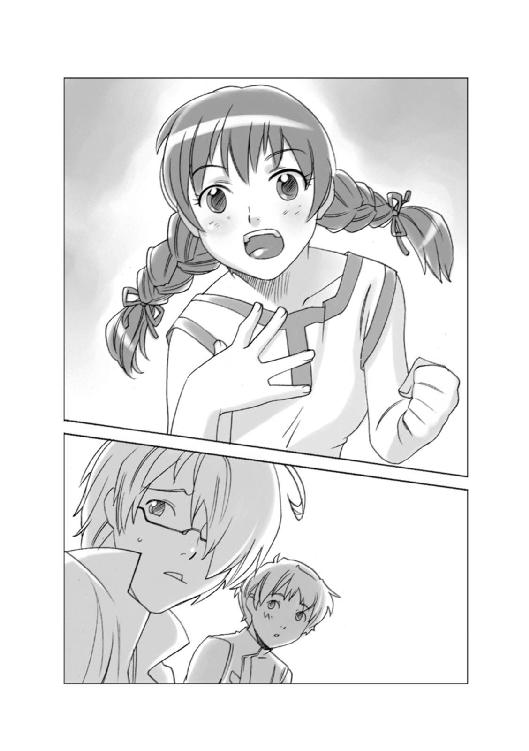
ハインツをにらんだリアンは、そう言うと、自分の前にある端末につかつかと近づいた。
そして端末の画面が、中央取引市場の会員入力ページになっているのを確認して、素早くＩＤコードを打ち込んだ。
一瞬のタイムラグの後で、画面が会員用の取引画面に切り替わった。
それは、リアンの打ち込んだＩＤコードが、本物であることの証だった。
ハインツは目を丸くした。
「うわ、帝国中央取引市場の正会員取引ページだ！ 本物だ！」
「会員ってそんなにすごいのか？」
怪訝な顔で聞いたハヤトを見て、ハインツはぶんぶん、と音が聞こえるくらいの勢いでうなずいた。
「すごいなんてもんじゃない！ 過去一年間の取引成立額が、累計で千二百億クレジットを超える者だけが正会員になれるんだ。つまり、リアンの大祖母さんもスゴイし、その大祖母さんの手ほどきを受けたリアンもスゴイってことだよ」
「へえ、リアンって、いろんな特技を持ってるんだな......」
ハヤトが、尊敬したような目でリアンを見たそのとき、ブリッジの中に、ぽーん！ という電子音が響き、クララの声がした。
『まもなく跳空間航法が終了します。ウィンザーレット星系のタンホイザーゲートの管制官から航行管制についての指示と、最新の管制プログラムデータが転送されました。これよりダウンロードを開始します』
「了解した！」
そう答えたハヤトが、操縦士席の正面に向き直ったのを見て、リアンがあわてて言った。
「忙しくなりそうですから、私はギャレーの方に戻ります！」
ハヤトは、ブリッジから出て行こうとしたリアンを呼び止めた。
「いや、ブリッジにいてもいいよ、乗客がいるわけじゃなし......アテンダントの仕事は無いんだろう？」
「ええ、確かにさしあたって私の仕事はありませんけど......いいんですか？」
ハヤトは、いいだろう？ という風な目つきでハインツを見た。
ハインツは、にやっと笑うとブリッジの右隅にあるシートを指差した。
「そこに座ってくれ、こういうとき、今までは通信士の席に座ってもらっていたけど、今回はそっちの席のほうがいいだろう。そこは本来貨物管理責任者の席なんだ......船長権限で、たった今からリアンを臨時の荷物管理官に任命する。バーレナン小麦の状態管理と、その売却に関する一切の権限を君に与える！ それが君の仕事だ。だからそこに座っていてくれ」
「はい！」
リアンが、満面の笑みを浮かべてうなずいたとき。自分の前にあるパーソナルモニターに表示されていた航路データとにらめっこしながら、キーボードを叩いていたハインツが、大きく息を吐いて言った。
「よっしゃ、データのダウンロードと展開は終わった！ 十五分後にウィンザーレット星系のタンホイザーゲートから出るぞ！」
「了解！」
ハヤトとリアンは、同時にそう答えると、シートのサイドにあるハーネススイッチを操作して、シートに身体を固定した。
ウィンザーレット星系は、帝国の南部にある主要十七州を統括する基幹星系である。
この星系に殖民が行われたのは、それほど古くは無いが、この恒星系には惑星が少なく、重力波の干渉域が極めて小さいことから、複数のタンホイザーゲートを設置することができたため、交通の要所として目覚ましい発展を遂げた。
帝国中央政府の出先機関や、マスコミの放送局、帝国軍の駐屯地や物資集積所、そして民間の市場や流通団地という、ありとあらゆる品物と情報を扱う機関のほとんどが、このウィンザーレット星系に集まっていた。
宇宙空間に設置された百基以上のタンホイザーゲートは、ひっきりなしに貨物船や客船を吐き出し、そして吞み込み続けていた。
『船籍番号ＳＧ七八三六ＴＲＣ四五五、銀星運輸所属の銀星号。ゲート通過しましたら、通常の航路ではなく、事前に指定した航路を進んでください。総合管制システムにデータをシンクロさせる必要はありません......』
「銀星号了解！」
ハヤトは、管制官との通話スイッチを切った後で、怪訝な顔で隣に座っていたハインツに向かって話しかけた。
「なんか、以前ここに来たときと、ずいぶん扱いが違うぞ。あのときは、さっさとデータシンクロしてゲートから出る船の流れに乗りやがれ、この田舎者め！......みたいな扱いだったのに......」
ハインツは肩をすくめた。
「前回この星系に来たときは、初心者だったからじゃないのか？ それなりに経験値を積んでいる船と、初めて入港する船とじゃ扱いが違うのも無理は無い」
「それなりも何も、この星系に来たのは二回目だぞ......まあ、それだって経験値に変わりは無いって言えばそのとおりだけどよ......」
ハヤトはそう言うと、ピクトレバーを操作して、銀星号を指示されたエリアに向かって発進させた。
そして、タンホイザーゲートをシールドしている力場スクリーンを抜け、通常空間に出たとき、ハヤトは思わず驚きの声を上げた。
「なんだありゃ！」
銀星号の進路の前後左右の空間を宇宙船が埋め尽くしていた。
ハヤトの隣に座っていたハインツが、思わず立ち上がろうとしたために、座席のハーネスが、かたん！ と音を立てた。
ハインツは中腰になったまま叫んだ。
「あれは......マスコミの取材船だ！」
「なんだって！」
銀星号の進路の先に浮かんだ百隻近い宇宙船が、まるで押し合いへし合いしているように、それぞれに細かく位置を変えている様子を見たハヤトを既視感が襲った。
それは、爆発物と化したニトロ・バイセルス・ナトリウムを満載した銀星号が、亜空間航行を終えてマクルーズ星系のタンホイザーゲートを出たときの光景の記憶だった。
ハヤトは、自分の前にあるコンソールを、ばん！ と両手で叩いて叫んだ。
「何で、こんなにマスコミが来ているんだよ！ 俺たちが積んでるのは、ただの小麦だぞ！ 爆発物じゃないんだ！」
視界を埋め尽くすマスコミの取材船を見ていたハインツが、静かに首を振って答えた。
「いや、違うんだハヤトよ......あいつらが興味を持ってるのは、積荷じゃない......俺たちなんだ......」
ハインツの言葉は真実だった。
ウィンザーレット星系のマスコミ各局は、連日に亘って、惑星バレリアの小麦を救うために、爆薬と化した殺菌剤を命がけで運ぶ銀星号の姿を報道していた。
その報道の目的は、人助けを褒め称える、という崇高なものだけではなかった。
彼らが銀星号を追う理由の中には、大爆発を起こして宇宙の塵になる銀星号、というショッキングな決定的瞬間を映像に収めれば視聴率が稼げる、という、実に下世話で野次馬的な理由も混じっていた。
だが、銀星号は爆発することもなく、無事に任務を果たしてしまった。
ショッキングな決定的瞬間の映像も、視聴者の涙をさそう悲劇も、何も無かったのである。
......と、なれば、他に視聴者の興味を引くもの、視聴率を稼ぐものを見つけ出さねばならないのだが、そんなものがどこにでも転がっているわけはない。
思惑が外れたマスコミ各社は、一つの結論に達した。
......視聴者の興味を引くものが無ければ、作ってしまえばいいのだ。
大衆の興味を引くものを探し出すのではなく、大衆に向かって何か一つ標的を決めて『これが今、一番興味を持たれているものなのです』と言い切って、それを集中豪雨的に報道してしまえばいいのである。
そう、そして、その標的に選ばれたのが、ハヤトたちだった。
銀星号は、マスコミの取材船のセンサーカメラの砲列が待ち構えている、その真っ只中に向かって突き進んで行くハメになった。
「うぁああああ！ やってらんねえ！ なんで、ウィンザーレットに帰ってきてんのに、銀星号の中で、パックの保存食食ってなくちゃならないんだよ！ あの宇宙港のゲートの向こうには、ウィンザーレットステーションのショッピングモールが広がっていて、買いたいものも食いたいものも、何でも手に入るってのに！」
銀星号の食堂に、ハヤトの悲鳴にも似た声が響いた。
ハヤトたちが、このウィンザーレット星系の宇宙港に入港して三日が過ぎようとしていた。
しかし、ハヤトたちが銀星号から出たのは、ウィンザーレットステーションの総合管理局からの連絡を受けて、総合管理長の執務室を表敬訪問したときだけで、それ以外はこの宇宙港から一歩も出ていなかった。
その表敬訪問も、いわゆるマスコミの圧力を受けたステーションの当局者がセッティングしたものらしく、山のようなマスコミ関係者の前で、ウィンザーレットステーションの総責任者と、当たり障りのない会話を交わしただけのもので、ほとんど記者会見と同じものだった。
記者への応答はほとんどハインツが行い、早々に切り上げて銀星号に逃げ帰ったのだが、そんな通り一遍の記者会見でマスコミが満足するはずが無かった。
特に、大衆の見たがるものを提供することがマスコミの使命だと信じている野次馬マーケティングの信奉者は、ハヤトたちの一挙手一投足のすべてを、報道する価値のあるものに仕立て上げることに全力を注いでいた。
もし、今、ハヤトが銀星号から出て宇宙港の片隅にある自動販売機でパック入りのコーヒーを買えば、おそらく明日の朝、そのパックコーヒーの銘柄が大々的に報道されるだろう。
そんな情報に価値を見出している人間はほとんどいない。しかし、大々的に報道することで、その情報に価値を与えることができるのだ。
それは『マスコミが報道するくらいだから、きっとこの情報には価値があるに違いない』と人々に思い込ませる彼らの常套手段だった。
ハヤトの向かいに座っていたハインツが、あきらめにも似た表情で肩をすくめた。
「仕方ないだろう。この宇宙港の外には、マスコミの取材陣と、ロングレンジ光学センサーを構えたパパラッチどもがひしめいているんだ。ウロウロ出て行ったら、写真を撮られて、あることないこと書きたてられるのがオチだぞ」
お盆を抱えたリアンが、不満げに唇を突き出しながらうなずいた。
「そうですよ！ なんですか、あの『銀星号の中で渦巻く愛の三角関係』って記事は！」
ハヤトが驚いたように目を見開いた。
「なんだそりゃ？ そんな記事があるのか？」
「ええ、芸能ゴシップ記事を載せているネットマガジンの大見出しに出ていました。腹が立ったので本文は読んでませんけど......」
リアンの言葉を聞いたハインツが、小さくうなずいた。
「ああ、あれか......宇宙船に若い男が二人と女の子が一人乗りこんでいる。という事実から、目一杯憶測と妄想を膨らませて書いた、ひでえゴシップ記事だったな......そいういえばクララの映像を載せて『銀星号の謎の美女』とかなんとか書いている記事もあったな」
ハヤトは両手で、ばん！ と食堂のテーブルを叩いた。
「いいかげんに頭にきた！ おい、リアン！ さっさとバーレナン小麦を売り払っちまえよ。身軽になって、一刻も早くこんなところから逃げ出そうぜ！」
ハヤトの言葉を聞いたリアンが、あ、そうだ、という顔になった。
「その件なんですけど、ハヤト船長......ちょっと面白い入札を見つけました！」
「面白い？」
怪訝な顔をするハヤトを見たリアンは、小さくうなずくと、右手で手元にある汎用端末の端子を操作しながら、左手で食堂の壁面にあるモニターを指差した。
「ええ、この画面を見てください！」
そこに映し出されたのは、ウィンザーレット星系の穀物取引市場で取引されている小麦の価格を示す一覧表だった。
「これが......どうかしたのか？ ただの小麦相場じゃないか。産地、品種、品質によって全部値段が違うってことぐらい俺だって知ってるぞ、これのどこが面白いんだ？」
リアンは、にっこり笑って小さく首を振った。
「いえ、面白いのは、この後に見せる画面なんです......そのためには、この穀物市場の価格表の小麦の相場価格を覚えておいていただきたかったんですよ。あまり細かいところまで覚えていただかなくても結構ですけど、平均して、いくらくらいで取引されているのか、という金額を覚えておいて下さい......覚えましたか？ じゃあこの画面の下にもう一つ別の表を並べて表示します。これは、いわゆる買い付け入札価格の一覧です......つまり、この値段で小麦を買います、という意思表示を示しています」
画面に表示された二つの表を見比べていたハヤトがそれに気がつく前に、ハインツが気がついた。
「ああ、ダメだよ！ こいつは取引の対象にしないほうがいい、めちゃくちゃわけありの入札だ！ リンクを切れ！」
「え？ わけありって？ どういう意味ですか？」
リアンがきょとんとした顔で画面を見上げたとき、ハヤトがその数字に気がついた。
「あれ？ この入札者......買い付け価格の数字の桁を一桁間違えてるぜ？......ほら、このエルノリク男爵領地行政政府って業者......」
ハヤトの言うとおりだった。その業者は、明らかに他の業者より一桁多い数字を提示していた。
「......一桁多いってのは、普通じゃ考えられないよな......ただの入力ミスさ、気にしなくていいよ」
ハインツはそう言うと、汎用端末を操作して画面を切り替えようとした。
「ちょっと待てよ、なんかおかしいな、おい、ハインツ。お前何か隠してないか？」
「い、いや、別に何も......」
「ウソだ！ お前はウソをつくとき、必ず瞬きするんだ！ さあホントのことを言え！」
「いや、だからウソじゃないって......」
ハインツがそう言って白を切ろうとしたとき、リアンが、カーソルを入札者の氏名の脇にある詳細条件のリンクウィンドウを開くアイコンに合わせてクリックした。
画面の下に、リンクウィンドウが開き、そこに入札対象についての条件を書き記した文章が並んだ。
「ハインツさんが隠したがっている情報って、これですか？」
「うわあ！」
驚くハインツを押しのけて、ハヤトは口に出して、そのリンクウィンドウの付随条件の文面を読みはじめた。
「えーと、買い付け対象は、バーレナン小麦を圧縮体積トン数で一万五千トン......運送手段を持ち、直接輸送できる業者に限る。なお輸送先の空域は海賊出没空域にあるため保険機構より保険加入不適合区域の指定を受けており、保険の裏書は不能。諸般の理由により、警備保障会社の護衛は不可能......惑星バレリアに対する殺菌剤輸送同様の困難極まりない状況下においても、任務を遂行する不撓不屈の業者の入札を求む......」
読み終わったハヤトは、眉をひそめた。
「おい......ハインツ。これって。本当に小麦買い付けの入札条件の文面か？ どう見ても俺たちに向けた仕事のオファーにしか見えないぞ。まず、この『バーレナン小麦を圧縮体積トン数で一万五千トン』という具体的な数字だ。こいつは、この銀星号に搭載してある貨物とまったく同じだ......そして、なんと言っても最後の一行が問題だ。『惑星バレリアに対する殺菌剤輸送同様の困難極まりない状況下においても、任務を遂行する不撓不屈の業者の入札を求む......』これって誰のことだと思う？」
ハインツはとぼけたような顔で答えた。
「さ、さあ、誰のことなのかな？ 俺にはさっぱり......」
ハヤトは真面目な顔で聞いた。
「......どう考えてもおかしいじゃないか。俺たちに仕事を頼みたいのなら、ウェブページを検索してそこのリンクから直接俺たちのところにメールを送ってくればいいのに、この依頼者は、なんでこんな回りくどいことをやっているんだ？ おい、ハインツ、お前、何か俺の知らないことを知っているだろう。さっさと話せ！」
ハインツは、観念したように小さくため息をつくと、ゆっくりと話し始めた。
「仕方ない、全部話そう......実を言うと、俺たちの作った銀星運輸のウェブページは、誰でも見ることができるわけじゃない。帝国中央ネットのウェブ網は、この帝国全体に広がっている。でも、帝国の中には、跳空間通信用の回線が一個しかないところもあるのさ。
通信回路ってのは、道路みたいなものだ。何本もの道路が走っていれば、たとえどこかで事故が起きたり、通行止めを食らったりしても迂回することができる。だが、迂回路の無い、田舎の山の中の一本道で通行止めを食らえば、もう通行はできないだろう？」
ハヤトは納得いかないような表情で聞いた。
「でもよ、この入札画面にはアクセスできるんだから、完全に通行止めを食らっているわけじゃないんだろう？」
「ああ、そうだ。つまり、この入札者の通信環境には、特定の相手にメッセージを送る個人通信についてアクセス制限がかけられているんだと思う。要するに検閲だな......このエルノリク男爵領というのは、銀河辺境の開拓惑星だ。おそらく自前で跳空間通信回線を持っていないので、大手の跳空間通信業者からレンタルしているんだろうな......その業者のところでアクセス制限をかけられてしまえば、エンドユーザーはどうしようもないんだ......つまり、この入札者のエルノリク男爵領行政府ってのは、通信業界を自由にできるような権力を持っている連中ににらまれているというか、そういったいろいろ面倒な立場にあるということだ。
そんな相手が持ってくる仕事なんか請け負ってみろ、とんでもない目に遭うのは間違いない！ だからお前には教えたくなかったんだ！」
「......小麦の代金が、相場と一桁違うのには、ちゃんと理由があるってことか......」
ハインツはハヤトを警戒するような目つきで見ると、クギを刺すように付け足した。
「言っておくが、銀星号は非武装の貨物船なんだからな、妙な気を起こすなよ」
ハヤトは、あわてて首を振った。
「わかってるよ、そんなこと......ただ......」
「ただ、なんだよ」
「こうやって、入札画面のメッセージとかまで使って、必死に俺たちを名指しでメッセージを送って来てくれているのに、それに応えないっていうのも、なあ......」
ハインツは、手元の汎用端末を操作して、壁面のモニターに映っていた画面を消して、ゆっくりとハヤトに向き直った。
「いいか、念を押しておくぞ。俺たちは趣味や道楽で、この銀星号に乗っているわけじゃないし、銀星運輸は、ボランティア団体でも人助けのための企業でもない。俺たちは正義のヒーローじゃない、ただの運送会社の社員なんだ！ 何も好き好んで、危ない橋を渡る必要もないし、義務も無いんだぞ！」
ハヤトはハインツを見返してうなずいた。
「お前が言いたいことはよくわかってる。危ないことや損になることを上手に避けて、めんどくさいことや危ないことは他人に押し付けて、そうやって上手く世の中を渡っていくことは楽だ。でもな、ハインツ。楽なことって楽しいのかな？」
「え？」
ハインツは、ちょっと虚を衝かれたような顔になった後で考え込んだ。
「そりゃあ当然、楽なんだから、楽しいに決まってる......とは言い切れないな......うーん」
「だろ？ 楽しいことって、苦労したり、苦心したり、努力したりした、その結果だと思うんだ。その苦労とか苦心とか努力があるから、楽しいって感じることができるんだと思うんだ。
確かに危険なことや、めんどくさいことや、他人から文句を言われるような仕事から逃げて、そういったことのない仕事だけやっていれば楽だ。でも、俺にはそんな仕事が楽しいとは思えないんだ。たとえばリアンの故郷のバレリアに、爆薬より危険なあの殺菌剤を運んだ仕事だってそうさ......あんな仕事請け負わなくたってよかったかもしれない。でも、請け負わなけりゃ、俺は今、こうやってここでリアンと笑って話ができると思うか？」
ハヤトは、そこで言葉を切って、自分をじっと見つめているリアンをひょいと見た。
視線が合ったリアンは、びっくりしたように目を見開いた後で、頰を染めて目を伏せた。
その仕草を見たハヤトはあわてて視線をハインツに戻して言葉を続けた。
「......まあ、リアンの故郷の件に限らず、なんというのかな......俺は、自分の力でなんとかできることは、なんとかしたいんだ。何とかするのは大変で、楽じゃない。その場に座り込んで、なんとかしてくれ、って言っている方がずっと楽だ。でも、きっとそういうことをやっていると、楽しくないと思うんだ」
ハインツはしばらく黙ったままハヤトを見ていたが、やがて、大きくため息をつくと肩をすくめた。
「わかったよ、お前の言うとおりだ。世の中には、波風たてないで安全に穏便に生きるという方法がある。人生をそうやって生きるほうが賢くて、楽なことは確かだ。でも、たしかにその生き方はあまり楽しくないかもしれない......このエルノリク男爵領行政府というところに連絡を取って、話を聞いてみるとするか」
その言葉を聞いて目を輝かせたハヤトを見て、ハインツは念を押した。
「勘違いするな、ハヤト！ 俺は話を聞いてみると言っただけだぞ、この仕事を請けると決めたわけじゃないからな！」
「わかってるさ！」
そう答えたハヤトの笑顔を見たハインツは、心のどこかに、半分あきらめ、そして半分期待している自分がいることに気がついていた。
......まあ、仕方ないな。
それが嫌ならそもそもこいつと一緒に会社を興そうなんて思わないもんな。
なんだかんだ言っても、俺も結局こいつと同じような価値観持ってるってわけだ。
まあいいか。楽はできないけど、楽しい人生ってのは、それはそれで捨てがたいものかもしれないしな。
ハインツは心の中で小さく笑いを浮かべると、クララに言った。
「エルノリク男爵領行政府に、通信を送ってくれ。入札に関する詳細な条件を知りたいから連絡をくれ......とな」
『かしこまりました......』
そう言ってクララが一礼してから三十分ほど過ぎたとき、クララがちょっと怪訝な顔でハインツに告げた。
『エルノリク男爵と名乗る方から、個人通信が入っております......ただし、通信回線の名義は、まったく別人です』
「どういう意味だ？」
『回線の番号は、帝星の貴族の方々で作られている親睦会の事務局ですが、通信の相手はエルノリク男爵と思われます。小麦と貨物の輸送の入札についてお返事がしたい、とのことです』ハインツは、何かを聞くような目で、隣にいるハヤトを見た。
ハヤトは、小さく深呼吸すると、胸を張って言った。
「わかった、繫いでくれ」
『かしこまりました』
クララが一礼して消えるのと同時に、銀星号のブリッジにある通信端末のスクリーンに、金髪をショートヘアにした二十歳くらいの端整な顔立ちの若い女性が映った。
その女性は、ハヤトを見て深々と一礼した後で、こう言った。
『初めまして、私はエルノリク男爵家の当主、レイラ・バロネス・エルノリクと申します......銀星号の船長であるハヤト氏と、こうやって話が出来ることを心の底から望んでおりました......お願いです。我がエルノリク男爵領の領民をお救い下さい！』
いきなり、若い女性、それも貴族の令嬢から、お救い下さい！ と呼びかけられたハヤトは、絶句した。
やっと声が出たのは、数秒ほど過ぎてからだった。
「ちょ、ちょっと待って下さい！ いきなり領民を救ってくれと言われても......俺たちはただの運送業者なんですよ？」
レイラは、はっとしたように目を見開いた後で、耳の先まで真っ赤になって下を向いた。
『申し訳ありません！ 思わす舞い上がってしまいました......そうですよね、いきなりそんなことを言われてもびっくりなさいますよね......』
助け船を出すようにハインツが話の後を継いだ。
「......もし、なんでしたら、詳しい事情をお聞かせ願えませんか？」
レイラは、顔を上げた。
その目には、必死の思いが込められていた。
『はい、では、詳しい事情をお話しします......』
レイラから、惑星ホルストの現状を聞いたハヤトは、半分驚きの混じった声を上げた。
「銀河辺境でそんなことが起こっているなんて、全く知らなかった。なぜ、帝国の人たちに、そのことを知らせないんだ？ 広く訴えれば、当局だって無視できないはずだぞ？」
レイラは首を振った。
『何もしなかったわけではありません！ 何度も訴えています！ 公式にも、私的にも！
星間警察本部、帝国の議会、帝国軍、法務局、マスコミ各社に、領民が危機の淵に立たされているということを訴えてきました。でも、どこも動いてはくれません！ ネットを通じて個人名で発信した情報でさえ、上部プロバイダで隔離されてしまっているのです！......この通信は、先代のエルノリク男爵であった父が懇意にしていた貴族の方の親睦会の事務所へ繫いで、そこから回線を使用して、個人通信という形でやっとのことで通話しているのです......』
ハインツはそれでも信じられないという風に首を振って答えた。
「なんで、そんなことになっているんですか？ 帝国の司法当局が、そんなひどいことを黙って見逃しているなんて......悪いとは思いますが、いきなり言われても一概には信じられません......」
レイラは、悲しそうにうなずいた。
『そうでしょうね......帝国の司法当局は、二十年前の海賊掃討令が発せられたときに、帝国軍情報部の手によって、徹底的に査察されました。腐敗の芽は、そのときに摘み取られたはずです。しかし、二十年という時間は、再び腐敗の芽が伸びるには充分な時間だったのです。
なぜ、司法当局が、この件を黙殺しているのか、理由は簡単です。この、一連の事件の裏にいるのが、その司法当局に絶大な影響力を持つマルス家だからです』
ハヤトとハインツはお互いの顔を見合わせて叫んだ。
「マルス家？ あの、帝国軍と警察官僚の一族か！」
『そうです、マルス家は、エルノリク男爵領である、惑星ホルストのシリリウム鉱山に執着しています。彼らは、一銭の対価も支払うことなく、あの惑星を手に入れようとしているのです......』
「そんなことができるのか？」
怪訝な顔で聞いたハヤトに、レイラが答える前に、ハインツが答えた。
「......できる。領民保護規定を使えば、帝国は領主から領地を取り上げることができるんだ」
「領民保護規定？」
「ああ、新しい帝国皇帝が議会に諮って新しく施行された法律だ。帝国中央政府は、領地経営能力が無いと判断された領主の領地を強制的に接収し、領民を保護下に置くことができる。接収された領地は民生局の管理を経て、帝国政府の指定した優良なる領主の信託統治領として扱われるんだ......」
レイラは、わが意を得たり、という風にうなずいた。
『そのとおりです。マルス家が、我がエルノリク男爵家の領地である惑星ホルストを、海賊の手によって封鎖し、領民の中に餓死者を出させようとしている理由はそれです。領地に飢饉を引き起こし、領民に餓死者を出せば、エルノリク男爵家は、間違いなく領地経営に失敗したと判断されるでしょう。惑星ホルストは、シリリウム鉱山ごと帝国政府に接収され、そのままマルス家の手の中に転がり込むでしょう......それがマルス家の目論見です。
......確かに、エルノリク男爵家は弱小で資本力もなく、そのために惑星ホルストの住民に自給能力すら与えることができませんでした。それが罪だというのなら、甘んじて受けましょう。シリリウム鉱山を買い取りたいと言うのならば、今の従業員の雇用を保証してさえもらえるのならば、いつでも交渉に応じたでしょう。しかし、今までそういった交渉は一度も無いのです！』
「交渉が無い？ どういうことだ？ マルス家からは、領地を譲れとか、そういった交渉も何も無いっていうのか？」
耳を疑うように声を上げたハヤトを見て、レイラは悔しそうにうなずいた。
『はい、そういった打診も、メッセージも何一つありません、マルス家はこの件について一切関係が無いという態度を取り続けるつもりなのです。タダで鉱山がこの手に転がり込むのなら、なぜ余分な出費をしなくてはならないのか......それがマルス家の価値観なのです......そして、どこからも交渉も打診も受けていない以上、私には降伏することすらできないのです！
この領地は無償で差し出す！ だから......領民を飢餓の淵に追い込むのはやめてくれ！......と、降伏する相手すら存在しないのです！ エルノリク男爵領の領民五万五千人の中に餓死者が出る......それはもうすでに予定されている事実なのでしょう......マルス家にとって、餓死者とは、出なくてはならないものなのです......』
レイラはそこで言葉を切ると、決意に満ちた目でハヤトたちを見て、ゆっくりと言葉を継いだ。
『でも、そんな予定や、そんな運命を甘んじて受けなくてはならない理由はありません！ 私には領主として責任があります！ 何もせずに、ただここに座って、領民が飢餓に晒され、死者が出るのを見ているなんてことは私には耐えられません！ 生き延びるために何でもやってみる！ それこそが私の義務だと思うのです！ 私は今、何よりも小麦が欲しい！ でも......本当に欲しいのは希望です！ 自分たちは見捨てられてはいないのだ、という希望です！』
レイラは両手を広げ、目に涙を浮かべ、声を震わせた。
『私たちは必死に訴えてきました！ しかし、帝国の人々は私たちを見ようとはしてくれませんでした。貨物輸送の契約は打ち切られ、警備保障会社にも見捨てられ、星間警察も帝国軍も、私たちを助けるために指一本すら動かそうとはしてくれません！
惑星ホルストの人口は五万五千人......その中には子供もいます高齢者もいます、私は、彼らに、きっと救いが来る、見捨てられることは無い！ 必ず生き延びるための物資を積んだ連絡船がやってくる！ だから希望を持って下さい！ そう言いつづけてきました......。
でも、備蓄した食糧はほとんど尽きました。今、惑星ホルストの人々は、培養プラントで作られた食用藻類だけで生き延びています......お願いです！ 私たちに希望を下さい！ それができるのは、あなたがたの奇跡の船、銀星号だけなのです！』
レイラがそこまで言ったとき、突然画面がフリーズした。
「どうしたんだ？」
クララが、眉をひそめて答えた。
『通信遮断プログラムが働いたようですね、個人通信を追尾した形跡があります』
通信画面には、目に涙を浮かべて両手を広げ、訴えかけるような表情のレイラの映像だけが切り取ったように表示されていた。
そのレイラの映像を見上げたハヤトが、静かに聞いた。
「どうする？ ハインツ......」
ハインツは止まったままのレイラの映像と同じように両手を広げて答えた。
「どうするもこうするもあるか！ 今の話を聞いただろう？ 俺たちの敵は、ただの海賊じゃない、その海賊と裏で繫がっているマルス家だ！ マルス家は帝国の軍事と司法の両方の官僚の中に自分たちの息がかかった配下を山ほど送り込んでいる。その影響力は、ハンパじゃない。その証拠に、お前も俺も、こんな事件が起きているなんてことを、ちっとも知らなかったじゃないか。つまり、マルス家というのは、マスコミですら黙らせるほどの力を持っているってことなんだぞ」
ハインツの言葉を聞いたハヤトは、さらっと答えた。
「そうか、それは好都合だ」
ハインツは耳を疑った。
「なんだって？」
「マスコミですら黙らせることができる、ということはだ、もし俺たちがこの仕事を請け負って、動き出しても、マスコミはそれを面白おかしく報道できないということじゃないのか？」
「そりゃあそうだけど......まさか、お前それだけの理由でこの仕事を請けるって言うのかよ！」
ハヤトは、見損なうな、という顔で首を振った。
「それだけじゃねえよ、マスコミは、いわば付け足しの理由だ！ 俺たちとこの銀星号を頼りにしている人がいるのならその期待に応えたいと思っているだけのことだ！ このレイラって貴族の人の話を聞いただろう？ この人の惑星は封鎖されて食糧が入ってこないんだぞ？ 俺は、人一倍食い意地が張っているからこう思うのかもしれないけど......物が食えない生活って、想像できるか？ 買いたくても買えない食いたくても食うものが無い、そんな生活を送ってる人が五万五千人いるんだ！ そして、俺たちにはその人たちを助けることが出来るんだぞ？ 俺は出来ないことをやろうって言ってるんじゃない！ 出来ることをやろうって言ってるだけだ！ なのに、なんでお前は反対するんだ？」
「確かにお前の言うことには一理ある。俺だって、頼られたのなら期待に応えたいし、困っている人がいるなら助けたいと思う......」
「だったら、何も問題ないじゃないか！」
ハインツはハヤトの顔を正面から見据えて静かに言った。
「何かをするときに、リスクを考えないのは愚か者だ。そして、本当のリスクってのは見えないんだ。どんなにいろいろな場合を予測して事前にリスクを洗い出していても、見落としているリスクが絶対にある。だから対処できる余裕が必要なんだ。対処できるかどうかギリギリの状態で行動を起こしちゃいけない」
「そりゃあ、この仕事はリスクが大きい。それはわかってる。でもさ、俺たちは、その大きなリスクをいろんな方法で軽くして切り抜けて来たじゃないか！ 戦争を生き抜いたのは運もあるかもしれない......いや、もしかしたら運だけだったのかもしれない。でも、俺とお前で知恵を絞って、リスクを切り抜けてきたから、俺たちは生き残ったんだと俺は思っている！ 違うか？」
ハインツは、ハヤトを見据えた目を逸らさずに言った。
「そのリスクを背負うのが俺たちだけなら、俺だって反対はしない......でも、俺たちはもう戦争をしていた頃の......自分たちが生き延びる事だけを考えていれば良かった頃の俺たちじゃないんだぞ？」
「......そうか、そうだよな。銀星号には、リアンだって、クララだって乗っている......」
はっとしたように目を見開いて、そうつぶやいたハヤトを見て、ハインツは小さくうなずいた。
「そうさ、そして俺たちは銀星運輸という会社も背負ってるんだ。会社を存続させる。存続させて利益を出して従業員に給料を支払うってのは、俺たちの義務なんだ。それを考えたら、リスクを回避するってのは、別に卑怯でもなんでもない、ごく当たり前の選択肢なんだ。
そう考えると、この仕事のリスクは大きすぎる......まあ、前回のバレリアに爆薬になっちまった殺菌剤を持って行く仕事だって、これと負けず劣らずの危険度だったが、あの仕事はリアンの故郷の危機を救うという、いわば縁故のような要素があった。でも、今回の仕事はそうじゃない。エルノリク男爵は見ず知らずの他人だ。俺たちが命や財産を懸ける理由は、はっきり言ってどこにもない......違うか？」
ハヤトは、そのまま黙って考え込んだ。
そして、一分ほど黙り込んだ後で顔を上げてつぶやくように言った。
「......今回の仕事は、リアンを降ろした方がいいかもしれないな......」
そのとき、ブリッジの隅っこから声が飛んだ。
「とんでもないだわさ！」
「うわ、いたのかよ！」
驚くハヤトとハインツの前に飛び出したリアンは怒ったように腰に手をあてて、二人をにらみつけた。
「......気になって、隅っこで聞いていただわさ、危険だなんて理由は理由にはならないだわさ！ この前の航海のときにそれについてはしっかり言ったでねえか！ 忘れただか！ 銀星号が積んでいる小麦は、あたいの故郷バレリアで作られた小麦だわさ！ いわばあたいはこの小麦の後見人だわさ！ この小麦が無事に届くまであたいがしっかり見届けるだわさ！」
ハヤトは、あわてて首を振った。
「この仕事は、バレリアに殺菌剤を運んだときとは違う！ この前の仕事のときは、マスコミの突撃レポーターみたいな、無責任な連中はいたけど、積極的に攻撃してくるヤツはいなかった......でも、今度の相手は宇宙海賊なんだ！ 攻撃してくる明確な敵なんだぞ！」
リアンは胸を張って言い返した。
「それがどうしただわさ！ 爆発物みたいに問答無用でドカン！ といくヤツと比べたらよっぽど楽だわさ！ 人間が相手なら、話ができるだけマシだわさ！」
そして、リアンはハインツを見据えて言った。
「ハインツさんは、今、ハヤト船長は銀星運輸を背負ってるって言っただよな？ それはつまり、銀星運輸っちゅう会社の評判も背負ってるってことでねえのけ？ んでもって、会社の評判を決めるのは、お客様でねえのけ？ ハインツさんがいくらネットで宣伝を繰り広げたって、どんな仕事をしたのか、そしてお客様がどれだけ満足したか、その結果から生まれてくる評判にかなうものはねえと思うだよ......あの貴族のお嬢様は泣きながらこの銀星号を奇跡の船と呼んだでねえか......それが、それこそが、この銀星号の看板だと思うだよ。あたいは、その看板を降ろしちゃいけんと思うだ......違ってるかや？」
ハインツはしばらく黙ったままリアンの顔を見ていたが、やがて、静かに首を振った。
「いや......俺は、そうは思わない。奇跡の船なんて看板はさっさと降ろさなくちゃいけないと思う......」
「ハインツさん！」
「ハインツ！」
ハインツは、驚くリアンとハヤトを見た後で、自分の後ろに立っているクララに視線を移した。
「この、銀星号の看板は、奇跡の船じゃない。幸運の船なんだ。ちゃんと荷物を運んで、生きて帰って来る幸運の船、それに掛け替えなくちゃいけないんだ......そう考えれば、確かに、この仕事は、看板が変わったことを証明するいい機会かもしれないな......」
クララは目を見開いて、口元に手を当てた。
『......ハインツさん......』
ハインツは照れたように下を向いて頭を搔くと、ハヤトとリアンに向き直った。
「わかった。この仕事を受けよう。確かにリスクは大きい。だけど全く望みがないわけじゃない......みんなで知恵を絞って、リスクを軽くして切り抜けるとするか......」
「当然だわさ！ あたいは、この銀星号の乗組員だわさ！ いつも一緒だわさ！」
リアンは、胸を張って答えた。
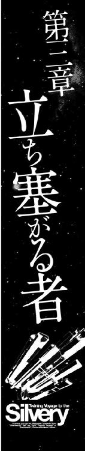
銀星運輸は、ハヤトの名前で、エルノリク男爵領行政府の貨物輸送の仕事に入札した。
さすがに、いかに報酬が多くとも、こんな仕事を請け負う企業は他に無かったのだろう。この仕事は銀星運輸が落札し、正式の契約が結ばれることになった。
銀星号のブリッジで、転送されてきた契約書を読んでいたハインツが、つぶやくように言った。
「そうか、今回の契約は、代理購入契約も含むんだな......」
その言葉を聞きつけたハヤトが怪訝な顔で聞いた。
「代理購入契約？ なんだそれ？」
「要するにだ、今まで俺たちがやっていたのは、貨物運送だけの契約だったわけだ。つまり荷主は他にいて、俺たちは、ただ運ぶだけだ。代理購入というのは、荷物があるわけじゃない。依頼主の指示を受けて、運ぶ品物を俺たちが購入してそれを運搬する契約なんだ。荷主の代理として購入するからこういう名前になってるのさ」
「へえ、要するに、買い物を頼まれた便利屋さんみたいなものか？」
ハインツはうなずいた。
「そうだな、ぶっちゃけて言ってしまえばそんなところだ......ただ、量が多い。日用品や食料をトン単位で買い付けなくちゃならないんだ」
「トン単位？」
ハヤトは目を丸くした。
「そんな買い物やったことが無いぞ。お前はあるのか？」
「ん？ 無いよ。でもなんとかなるだろう......これで代金を立て替えるなんてことになったら目も当てられないけど、買い付ける代金は、エルノリク男爵領行政府の振り出し小切手が使えるそうだから、資金面の心配はとりあえず無さそうだ......それより、問題は海賊対策だ。今までのデータを見ると、あの空域ではすでに十七隻の貨物船や鉱石運搬船が海賊に襲撃されている......この襲撃を何とかする方法を考え付かないと、十八番目のリストに銀星号って書かれることになるのは間違いない」
「海賊か......」
ハヤトは考え込んだ。
......俺もハインツも、宇宙空間での戦闘経験は積んでいるけど、それは全部、機動戦闘艇に乗って戦った経験だ。非武装のコンテナ貨物船なんかで戦ったことはない。
......っていうか。そもそも戦えるわけないよなあ、非武装だし。
ということは、まず、この銀星号に武器を搭載することから考えなくちゃいけないってことだな。
そういえば、辺境空域で活動している個人営業の交易船の中には、自衛用の武器を搭載している武装商船がいるって話を聞いたことがあるな。
どんな武器が最適なのか、どの程度の改造をすればいいのか、そういった情報をネットで探し出すところから始めるとするか......。
ハヤトは、振り向いて、後ろに立っていたクララに話しかけた。
「ねえ、クララ、ちょっと手伝ってくれないか？」
『はい、どのようなご用件でございますか？』
ハヤトは、目の前にあるパーソナルモニターを指差して言った。
「武装商船、商船改造仮装巡航艦、自衛商船、そういった項目について検索して、貨物船に搭載できる武器の種類や、入手方法、中古武器の相場、実際に貨物船に取り付ける際の留意事項。そういったデータを検索して、まとめてくれないか？ 帝国軍の船舶工廠のデータベースや、戦時中に戦地で改造された記録とかを探せばかなり具体的なデータが見つかると思うんだ」
『かしこまりました』
そう言って、にっこり笑ってうなずいて消えたクララを見送ってから、ハインツが声を潜めてハヤトに言った。
「おい、お前、もしかして銀星号を武装するつもりか？」
「ああ、海賊に対抗するには、最低限の自衛用の武器くらいは搭載しておく必要があると思うんだ。小口径のレーザー砲が一門あるだけでも、ずいぶん違うぜ」
「そりゃそうだが......」
ハインツは小さく首をひねった後で、真顔で聞いた。
「非武装だからこそ、積荷だけの損害で助かった......とは考えられないか？」
「どういう意味だ？」
「俺もクララの報告を聞いたんだが。あの中に、海賊たちの目的は、あくまで積荷を奪うことであって乗組員の生命を奪うことじゃない、というやりとりがあっただろう？ つまり海賊の襲撃というのは『殺さない代わりに積荷を差し出せ』という交渉を貨物船に持ちかけているわけだよ......実に一方的な交渉だけど、交渉に変わりは無い。そして、これは商船が常に非武装だからこそ成り立つ交渉なんだ。もし、商船側が対抗手段を持てば、そこに交渉は成立しない。まずぶん殴って抵抗できなくさせてからじゃないと、交渉はできない。つまり、いきなり戦闘が始まっちゃうわけだ......海賊船が貨物船を襲うときってどんな戦法を取ると思う？ お前が海賊ならどうやって貨物船を襲う？」
「へ？」
いきなり質問を振られたハヤトは目を丸くした後で考え込んだ。
「......俺が海賊だったら......そうだな、宇宙は広いし、やたらめったら飛び回っても貨物船に出合えるとは限らないから、貨物船が通りそうな場所......たとえばタンホイザーゲートの先とか、Ｎフィールド航法を解除して転移しやすい、重力波の拮抗ポイントとかで待ち伏せをするだろうな......」
ハヤトの言葉を聞いたハインツは、そのとおり、という風にうなずいた。
「海賊がやるのは、その待ち伏せ攻撃だ。そして待ち伏せ攻撃ってのは、常に待ち伏せする方にイニシアティブがある。戦艦とか巡航艦ならいざしらず、商船が出合い頭に船体や推進機にビームを一発撃ちこまれたら、まず継続戦闘は不可能だ。結局商船は沈められ、乗組員の生命は助からない。そりゃあ確かに、武装していれば一矢報いることができるかもしれないし、運がよければその武装で海賊船を撃退することができるかもしれない。でも、最初から戦うために造られていない船にできることは限られている。海賊に対抗するには、商船を武装させるより護衛艦を同行させるほうが、はるかに効率がいいし、確実なんだ」
ハヤトは、クララが表示してくれた、商船改造型戦闘艦のデータベースの一覧を眺めながらつぶやくように答えた。
「そうか、それで、こんなに数が少ないんだ......戦争の初期に、フリゲート艦の代用艦にするために、高速商船に武装を積んだ船がいくつか造られているけど、本物のフリゲート艦が工場からロールアウトしてきたら、さっさとお払い箱にされちゃっているものな......」
そのとき、ハヤトは、データベースの一覧の中にあった一行に目を留めた。
そこには、こう書かれていた。
『辺境空域専用交易船の自衛武装について』
......あれ？ これってもしかして、俺が探していたものかもしれないな......いや、まてよ、これって実在する船のデータかな？ 下手な検索かけると、ゲームの中とか小説の中に登場する武装商船とかも、一緒くたになって引っかかってくるからなあ。
......でも、クララが探してきてくれたってことは、大丈夫だろう。
ハヤトが、その項目にカーソルを合わせてクリックすると、パーソナルモニターの画面に、旧型の軍用貨物船や、強襲揚陸艇母艦などを改造したものと思われる、戦闘艦とも貨物船ともつかぬ宇宙船の映像が浮かんだ。
一世代か二世代前の、駆逐艦の主砲の砲塔を船体の上に載せたり、強襲揚陸艇母艦の船上構造物をそのままにして、揚陸艇の代わりに貨物シャトルを山ほど抱え込んだそれらの船は、貨物を載せるスペースが無ければ海賊船と変わらない、実に凶悪な外見をしていた。
説明文を読んだハヤトは、顔を上げて、隣にいるハインツに話しかけた。
「おい、ハインツ、これ見ろよ、ちゃんと武装した商船もあるんだよ。これだけの火力を備えていれば、海賊船とだってそれなりに戦えるんじゃないのか？」
手元のコンソールを叩いて、ハヤトの見ている画面を自分のモニターに転送したハインツは、小さくうなずいた。
「ああ、辺境交易船か、こいつらは確かに武装した商船みたいなものだな......というか、このあたりで商売するとなると、武装しないと生き残れないんだ。無法と法治の境目だからな」
「無法と法治の境目？」
「そうさ、こいつらのテリトリーは辺境中の辺境で、星間警察も帝国軍もいない。法律とか規則とか、そんなものに効力なんかない場所なんだ。そこでルールを決めるのは力関係だ。だから誰もが武装している。街行く人が全員ショックガンを肩から提げているようなものさ。確かに見た目は物騒だが、実に平和で撃ち合いなんか、めったに起こらない。なぜなら撃てば撃たれることがわかっているからさ」
ハヤトは、ぽん！ と手を打った。
「そうか、中途半端が一番良くないんだな。非武装なら非武装に徹する。武装化するなら、これみよがしにガンガンに武装して海賊船だって二の足を踏むくらいに仕立て上げる。そのどちらかを選ぶしかないってことなんだな......」
ハインツが、ハヤトを半目でにらんだ。
「......お前、銀星号を、この武装商船みたいにするつもりじゃないだろうな？」
「そのつもりだけど？ 見た目で海賊を威圧するってのは有効だと思うんだ」
しれっと答えたハヤトを見て、ハインツが嚙み付いた。
「そんな武器を調達してくる金がどこにあるっていうんだ！ 確かに戦争が終わって、今の中古武器の相場はガタ落ちだって話は聞いているけど......たとえ値段が下がっても、ホイホイと気軽に買えるような値段じゃないんだぞ！ 資金が足りないって話をしたばかりじゃないか！」
ハヤトは、にやっと笑って答えた。
「確かに使える武器は中古でも高いけどさ、使えない武器なら、きっと安いと思う......」
「使えないって......使えない武器に何の意味が......」
そこまで言ってからハインツは何かに気がついたように目を見開いた。
「もしかして......」
「そう、言っただろう？ 見た目で威圧するというのも手だって。銀星号の外見を、このデータに載っている辺境の武装交易船とそっくりにするってのはどうだ？ 武器として使えなくたっていいんだ。小口径ビーム砲の砲塔だけあればいいんだ。がらんどうのまま砲身の代わりにただの樹脂パイプを差し込んだって、一見すれば見分けはつかないと思うんだ」
「いくらコケ威しの張りぼて載っけたって、本当の撃ち合いになれば、一発も撃ちかえせないわけだろう？ 見破られたら一巻の終わりだと思うぞ」
ハヤトは声を潜めてハインツに答えた。
「それなんだけどな、今さっき、中古兵器のブローカーのページを覗いてみたんだが、小型のレーザー砲なら安く買えそうなんだ。張りぼての中に、本物の武装を混ぜておくというのは結構効果的だと思うけどな」
ハインツは肩をすくめた。
「まあ、そっちの方はお前に任せるよ。俺はとりあえずエルノリク男爵領行政府から依頼のあった品物の買い付けに走り回んなきゃならないからな」
「買い付けに走り回るって......外に行くのか？」
驚くハヤトを見て、ハインツは皮肉な微笑みを浮かべた。
「ああ、銀星号を取り巻いていたマスコミどもは撤収したぞ。俺たちが、例の、エルノリク男爵領行政府の仕事を落札した、って情報が公表されたとたん。潮が引くようにさーっといなくなった。マルス家の御威光はたいしたものだな」
「マジか？」
目を見開いたハヤトに、小さくうなずき返してから、ハインツは言葉を続けた。
「ああ、マジだ。昨日までずっとマスコミ各社でやっていた銀星号報道合戦が、今日になったら、すっぱり『なかったこと』にされちまってる。つまり、俺たちの敵に回る連中ってのは、それほどの権力を持っているってことの証明だ。性根を据えてかからないと、銀星号も銀星運輸も『なかったこと』にされちまうな」
「ふざけるな！『なかったこと』なんかにされてたまるか！ 今回の仕事は何が何でも成功させてやろうぜ！」
敵愾心を燃やすハヤトを見て、ハインツは笑いながら立ち上がった。
「海賊相手に脳内でシミュレーション戦闘をするのはいいが、現実の海賊に対抗できる手段をものにしておいてくれるとありがたい......じゃあ、ちょいと買い物に行って来る」
「気をつけてな！」
ハインツは、ひょいと右手を上げて挨拶すると、銀星号のブリッジから出て行った。
「さてと......ハインツが買い物に行っているうちに、海賊に対抗する手段を考えておくとするか......」
ハヤトは、そうつぶやくと、自分の後ろにいるクララに話しかけた。
「帝国軍から払い下げになった中古武器のブローカーのページは見つけたけど、ここから流れた戦闘艦の部品がどこに行っているのかが知りたいんだけど、なんとかならないかな？」
クララは、少し考え込んだ後で眉をひそめて答えた。
『それは難しいですね。この業者のウェブデータが置かれているサーバーの管理コードを調べれば、この業者のページを見た人物がどこから来ているのか、わかります。そういった関係先をたどって一つ一つしらみつぶしにしていくしかありませんね......』
「クララなら、やれるんじゃないの？」
クララは困ったような顔になった。
『私の能力からすれば容易なことです......やれといわれればやりますが......捜査当局とか司法関係者以外のサーバーの管理権のない人間が、それをやるのは非合法行為ですよ？』
「うーん、そうか......そうだよな。でも、俺たちの相手はその捜査当局とか司法関係者の裏にいる連中だ。そいつらにだけアドバンテージがあるってのは納得できないな......ちょっとぐらいなら構わないんじゃないのか？」
『それはそうですけど......やはり犯罪は犯罪です。誰にもみつからなければやってもいい、というわけではないと思うのですが......』
「うーん、そう言われてみればそうだな......じゃあ、犯罪にならない範囲で、できるかぎりやってみてくれないか？」
『かしこまりました』
そう言って一礼したクララを見た後で、ハヤトは考え込んだ。
......さて、海賊対策のハード面は武装化でなんとかするとして、次はソフトの方だな。
俺とハインツは海賊についてそれなりに知っているけど、問題はリアンだな......。
ハヤトは、小さくうなずくと、船内通信のキーを押した。
「リアン、手が空いていたらブリッジに来てくれないか？」
キッチンで片づけをしていたのだろう、通信モニターに、エプロン姿のリアンが映った。
『はい、この食器を収納したらすぐに行きますけど......何かあったんですか？』
「いや、なんでもない、ちょいと学習講座を開こうと思ってね」
『学習講座？』
リアンは目を見開いた。
やがて、片づけを終えたリアンが銀星号のブリッジにやってきた。
ハヤトは、シートに座ったリアンを前にして、海賊について説明を始めた。
「えーと、かいつまんで言うとだ、なぜ、この世に宇宙海賊がいるのか、と言うとだ。それはつまりは、宇宙は広すぎるからなんだ......わかる？」
リアンは、ぽかんとした表情で首を振った。
「宇宙が広いということはわかっていますけど......それと宇宙海賊がどう繫がるのか、それがわかりません」
ハヤトは腕を組んだ。
「うーん、もしかすると海賊を相手にしなくちゃならないかもしれないから、リアンにも海賊の基礎知識をつけてもらおうと思ったんだけど......やっぱり俺には先生役は無理だな」
ハヤトは、自分の脇に立っているクララに振り向くと、笑いながら言った。
「詳しいことはクララから教えてあげてくれないか？」
クララは優しく微笑むと一礼した。
『かしこまりました、では、それに適応したプログラムを、このウィンザーレット星系のライブラリーからダウンロードして参りましょう』
そして、一呼吸ほどの時間が過ぎたとき、リアンの前に、紺色のスーツ姿にメガネという女性教師風の格好をしたクララが浮かび上がった。
ホログラムのクララは、ハヤトとリアンに一礼して微笑んだ。
『ヒストリーチャンネルの中に宇宙海賊の勃興と衰退、という教養番組のプログラムがございましたので、このプログラムを使わせていただきました......この格好は、オプションプログラムの中にありました、女性教師のコスチュームだそうでして......講義するには、この姿の方がよろしいかと思いましたので、使わせていただきました......では、講義を始めさせていただきます』
ハヤトとリアンは、あわてて、食堂の椅子の向きを変えて、モニターに向き直った。
モニターの中に、無数の恒星系が映っていた。
『マガザン帝国がその勢力下に置いている恒星系の数は数百万と言われています。しかし、人類が居住可能な水・酸素型の惑星や、それに準じた環境を持つ惑星が存在する恒星系はいまだに数千の単位に過ぎません。
つまり、それほどまでに、人類が居住できる環境を持つ惑星の数は少ないのです。
帝国が探査し、領有を宣言し勢力下に置いている恒星系のほとんどは、人の住まない、いわば無人の荒野のような存在です。
豊富な鉱物資源や、稀少な資源となる産出物を持たない惑星しかない恒星系は、誰にも利用されることなく無視され放置され続けて来ました。
ですが、世の中には、この無人の荒野を利用しようとする者も存在します......』
クララはそこで言葉を切ると、ハヤトに向かって聞いた。
『それはどんな人たちだと思いますか？』
ハヤトは、目を見開いた。
「え？ あ、俺が答えるのか、えーと、それは犯罪者とかそういった連中じゃないのかな？ 法律の手が及ばない場所ってのは、罪を犯した者が逃げ込む絶好の隠れ家になるし......」
クララはにっこり笑った。
『はい、そのとおりですね。帝国の司法当局は、この荒野とも言うべき、居住不可能な恒星系に逃げ込んだ犯罪者たちを追いかけようとはしませんでした。なぜなら、それはほとんどの場合そのまま死を意味したからです。人類が居住するために不可欠な水と酸素が存在しない世界は、単に呼吸することでさえ労力を必要とします。そういった場所に逃げ込むというのは、自分自身に流刑を科すのに等しいからです』
クララの背景に、砂と岩が転がる荒涼とした地表の映像が浮かんでいた。
『この荒野に逃げ込んだ犯罪者の多くは、確かに生き延びることもできずに、死んでいきました。しかし、中には互いに協力しあい、生き延びる道を見つけ出した者もいたのです......』
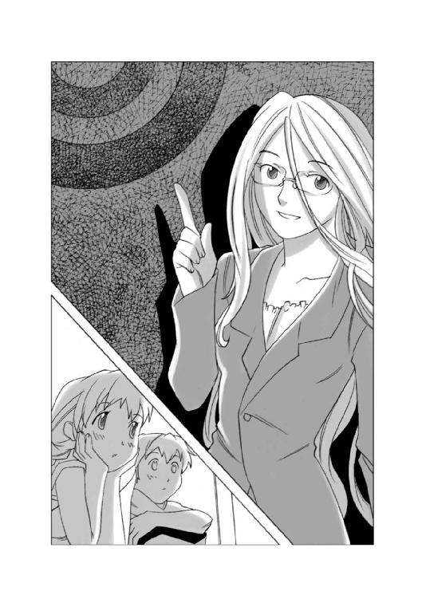
クララの背景に、不時着した宇宙船の構造物を使って作られた、掘っ立て小屋のような建造物が浮かんだ。
『これは、オリザネット星系の第四惑星と第五惑星の間にある小惑星帯に逃げ込んだジョルディーノ一族が、生き延びるために作ったシェルター群です。ジョルディーノ一族はここで十年近い歳月を生き延び、埋蔵物探査に来た無人探査船を捕獲し、その宇宙船を改造して、脱出しました。ジョルディーノ一族は帝国における宇宙海賊の元祖かもしれません......』
やがて、クララの背景に、古い宇宙船を改造したさまざまな海賊船の映像が浮かびあがって来た。
『これらの宇宙船は、廃棄されたり、漂流したりしていたものを回収し、改造した初期の海賊船たちです。彼らはこうやって入手した宇宙船に簡便な武器を搭載し、付近を航行する宇宙船を襲い、生活物資を奪うことを繰り返し、生き延びたのです』
リアンが、つぶやくように言った。
「宇宙海賊って、もっとカッコイイもの、みたいなイメージがあったけど、本当はただのサバイバルから始まったんだね......」
クララはうなずいた。
『確かに、宇宙海賊の黎明期は、不法集団と言うよりも、生き延びるため、というサバイバルが目的でした。しかし、それから数十年が過ぎると、宇宙海賊の中にあった、生き延びるために人の品物を奪う、という意識は消えていきます。宇宙海賊は、もはや牧歌的な存在ではなく、利益のために動く、強力な非合法集団と化していきます。
彼らは、帝国内の権力構造の中にうごめく、既存の非合法集団、つまりマフィアたちと繫がりを持つようになったのです......』
クララの言葉とともに、モニターに浮かび上がる海賊船の外見は、それまでのような、旧式な荷役船に簡単な武装を加えたような、手作り感覚のデザインから、もっと洗練された......言い換えれば凶悪さを増したデザインへと変わっていった。
『宇宙海賊たちは、軍から退役し、解体廃棄される予定の警備艇などの武装宇宙船を不法に手に入れ、それに改造を加えて武装や推進機を強化した強力な武装船を造り上げ、航行する貨物船を襲い、積荷を奪い取って、それをブラックマーケットで売りさばく事で、巨額の利益を得るようになったのです。
帝国中央政府は、すべての星系をその管轄下とする星間警察を組織し、宇宙海賊の取り締まりに当たらせたのですが、広大な宇宙空間をカバーする事はできませんでしたし、この頃になると、海賊船の方が星間警察の警備艇より、火力が優ることがたびたびあり、単艦同士の戦闘で星間警察側が敗北するという事件が多発するようになりました。そのため、先代の帝国皇帝は、今から二十年ほど前に宇宙海賊を、獅子身中の虫、つまり帝国内におけるテロリストであると断じ、皇帝の名においてこれの撃滅を命じたのです』
クララはそこで言葉を切ると、画面の右手を指差した。
そこに、何百隻という帝国軍の駆逐艦が浮かび上がった。
『この命により、宇宙海賊は帝国の「敵」となりました。宇宙海賊はただの犯罪者ではなく、帝国内において内乱を企てる者という位置づけになったのです。当初、宇宙海賊は、この皇帝の命令を甘く見ていました。ブラックマーケットの力は、帝国内部の門閥貴族や政府高官にも深く食いこんでおりました。星間警察の長官ですら、政治資金という名目で海賊から高額の賄賂をもらっていたほどです。しかし、ブラックマーケットの腐敗への誘いは帝国軍......特に皇帝直轄の近衛師団にまでは伸びていませんでした。
警察とは比べ物にならない圧倒的な兵力を持った帝国軍が相手では、いかに海賊といえども、手も足も出なかったのです』
クララの背景には、包囲され撃沈される海賊船の記録映像がいくつも浮かんでは消えた。
『それと同時に、帝国情報部の調査のメスが帝国政府の上層部に入りました。ブラックマーケットから不明瞭な資金提供を受けていた政府高官や、企業マフィアを系列企業に加えていた門閥貴族の経営するコンツェルンが次々に摘発されました......政府内部の大掃除と十年に及ぶ掃討戦の結果、宇宙海賊は帝国の中心星域から完全に放逐され、宇宙旅行は安全で快適なものになったのです......』
クララはそこで言葉を切ると、画面の中に、帝国全域を示す立体地図を浮かべて見せた。
『しかし、宇宙海賊はいなくなったわけではありません。星間警察と宇宙海賊との戦いは今でも続いています。この帝国全域地図をご覧下さい......』
帝国全土を表示する立体地図の中にいくつもの赤い光点と青い光点が瞬いた。
『赤い光点は、過去一年以内に海賊船の襲撃があった地点。そして青い光点は、星間警察と海賊船との間に交戦があった地点です。辺境域では、平均して今でも月に数回の海賊による襲撃事件が発生しているのがおわかりだと思います』
リアンが手を挙げた。
「質問いいですか？」
『はい、どんなことでしょう』
「えーと、宇宙海賊って、やっぱり、こう......狙った獲物の船の乗組員は問答無用で皆殺し！ みたいな連中なんですか？」
クララは腕を組んだ片方の腕を立て、人差し指を伸ばして自分の頰を突くような素振りで考え込んだ。
『うーん、難しい質問ですね。なぜなら海賊は、統一されたマニュアルに従っているわけではないからです。海賊は基本的に個人営業みたいなものですから、それぞれに全部やり方が違うんです。ですから正確に言うならば、海賊の中には乗組員を皆殺しにするような連中もいる、という答えになると思います』
「......ということは、そういう凶悪な連中は少数派だってことなんですね？」
クララはうなずいた。
『はい、海賊というのは基本的に営利企業です。目的はあくまで積荷の強奪にあるわけです。こういう言い方が適しているかどうかはわかりませんが、乗組員を殺すか殺さないかというのは、海賊にとっていわばオマケというか、趣味嗜好の部類に入るのではないかと思います』
「嫌な趣味だな......」
ハヤトがそう言って顔をしかめたとき、契約の内容に従って品物の買い付けに行っていたハインツが戻って来た。
ブリッジに入って来たハインツは、そこに立つ女教師姿のクララを見て、目を丸くして絶句した。
『あ、これは、教養プログラムのオプションについていた、電子人格用のコスチュームでして......』
クララは赤い顔になって両手を身体の前で交差させると身体を隠すようにひねった。
そのポーズは、紺色のスーツとタイトスカート姿のクララの体のラインを逆に強調した。
くっきりとくびれた腰のラインに、思わず見とれてしまったハインツの視線を見て、クララが真っ赤になったとき、通信モニターの脇にある着信サインが瞬いた。
クララは救われたような表情になると、女性教師のコスチュームから、いつもの姿に戻った。
そして、次の瞬間に驚いたように目を見開いた。
『帝国軍の情報部から秘匿通信が入って来ました！』
「軍の情報部だって？」
ハヤトは目を丸くした。
「俺はまだ、何もやってないぞ！......やろうかな？ と思っただけで......」
『通信相手は、アイシング大佐と名乗っております......至急の用件だそうです』
「アイシング大佐？ あ、もしかしてあれか！ ハインツが懇意にしている、帝国軍情報部の爺さん！」
「ああ、そうだ......どうやら今回の仕事の裏にあることをいろいろ教えてもらえそうだな」
ハインツは、ハヤトにそう答えた後で顔を上げてクララに言った。
「繫いでくれ！」
『かしこまりました』
クララの言葉が終わるのと同時に通信画面に浮かび上がったのは、六十歳くらいの白髪の男だった。
白髪の男は、ハインツの横にハヤトとリアンがいるのを見て、驚きもせずに一礼した。
『ハヤト船長と、そちらのお嬢さんに、直接お会いするのはこれが初めてですな......私は帝国軍情報部第三課のジョージ・フォン・アイシング大佐......世間では、アイス・ジョーとか呼ばれておる男じゃよ』
ハヤトとリアンは、あわてて頭を下げた。
「あ、どうも、初めまして！ 銀星号の船長、ハヤト・フォーゲルスト・ナグモです！ 軍にいた頃は少尉でした！」
「銀星号のアテンダント、リアン・マッケンジーです、初めまして！」
アイシング大佐はリアンに小さく会釈した後でハヤトを見て言った。
『ハヤト船長。君はもう民間人だ、軍の階級の話はよい......わしが大佐の階級を振りかざしたのがいかんかったようじゃな......』
アイシング大佐はそこで言葉を切った後で、改めて銀星号のブリッジにいる全員を見回して、大きく肩をすくめて言った。
『......それにしても、どうして諸君は、そうやって危ない仕事ばかり請け負うんだ？ 傍から見ていると、火中の栗を探して歩いているようにしか見えんぞ？』
ハヤトは頭を搔いた。
「あ、いや......別に探して歩いているわけじゃないんですけど......なんというか、こう、困ってる人に、助けてくれ、なんとかしてくれ、って言われると、放っておけないんですよ......」ハインツが、ハヤトの言葉の後を継いで口を開いた。
「本当なら、そういった仕事は俺たちの仕事じゃなくて国とか警察とか軍隊とか、そういったところの仕事なんでしょうけど。お役所ってのは、どうにも腰が重いですからね、いろいろシガラミもあるみたいですし......」
ハインツは、そこで言葉を切って、探るような目でアイシング大佐を見た。
アイシング大佐は肩をすくめてみせた。
『エルノリク男爵家の当主であるレイラから話を聞いたと思うが......確かにマルス家の連中がやっていることは、領民保護規定という法律の悪用だ。だが、マルス家のやっていることを理由に、あの法律を撤廃することはできん......帝国全体から見れば、あの法律で救われる人々の方がはるかに多い......』
ハヤトは、両手を広げて言った。
「でも、それは、惑星ホルストの五万五千人を餓死に追い込んでもいい、という理由にはならないでしょう？ あの封鎖を、なんとかしてやめさせることはできないんですか？」
『できないわけではない......帝国はそこまで腐りきってはいない。だが......それには時間がかかる......今回の件のように上層部が、恣意を持って行動したときに、それを現場が阻止するのは実に難しいのだ。組織というのは基本的に上意下達で動くようにできているからな。目的がマルス家の私利私欲であっても、それが公務命令という体裁を取っていれば、部下がそれに公然と反抗することは難しい......エルノリク男爵家の領地周辺に対する海賊船の取り締まりに当たっている星間警察の支部は、何度となく本部に増援を要請している。だが、本部はそれに応じていない......』
「本部にいるマルス家が握りつぶしているんですか？」
ハインツの言葉を聞いたアイシング大佐は首を振った。
『いや、あの方面を管轄する方面本部には、マルス家の眷属はおらん、マルス家の子飼いの連中はもっと違うところにいるのだ。つまり、星間警察の方面本部が使う予算を握っている部署にな。応援を出すには別会計で予算を組まねばならない。警察の警備艇はボランティアで動いているわけではない。現場の警官たちに、ちゃんと給料を払わねばならんし推進剤などの消費材も馬鹿にはならん......その予算を握っている星間警察中央主計部......ここにマルス家の一派が食い込んでおるのだ......警察は捜査権という強大な権力を持っている。だから権力を持つ現場の警察官たちは常に厳しい監視の目に晒されている......だが、事務方の予算を動かす連中は、市民に対する直接的な権限を持ってないために、監視されることはない......しかし、現場を左右できるのは、実はそういった事務方なのだよ......』
アイシング大佐は、そこで言葉を切ると、ハヤトを見据えて言葉を続けた。
『さて、それに関連して、ちょいと警告しておきたいことがある......ハヤト船長は、どうやら、その銀星号に自衛用の武器を搭載しようとお考えのようだが、それはやめておいたほうがいいぞ......』
「どうしてそれを御存じなんですか？」
びっくりしたように目を見開いたハヤトを見て、アイシング大佐はにやっと笑ってみせた。
『情報部専属の電子人格は、ネットの検索エンジンを常時監視しているのだよ。単語を検索し、犯罪に関する情報を集めようとするものを割り出すためにな......』
ハヤトは青ざめた。
「......そんなことをやっているんですか？」
アイシング大佐は悪びれた様子もなくうなずいてみせた。
『うむ、だが、無制限に監視しているわけではない。『中古武器』『商船改造』というよくある単語などは監視の対象外だ。我々が監視の対象にしているのは、もっと具体的な......そうだな『ビーム砲動力経路・取りまわし』『シュナルデン照準プログラム・汎用コンバート回路』『多重防御スクリーン・部分展開時・負荷係数』などという、実に具体的な単語で検索をかけている者だけだ......今の単語に覚えはないかね？』
「ええ、記憶にあります、ついさっきそういった単語で検索をかけていました......」
うなずくハヤトを見て、アイシング大佐は笑った。
『情報部の専属電子人格が、喜び勇んで報告して来たぞ......海賊を計画している人物を発見しました！ とな......』
「海賊？ 俺たちがですか？」
目を丸くするハヤトとハインツを見て、アイシング大佐は、真剣な顔つきで答えた。
『ああ、当局に許可なく民間船に武装を施す行為は、海賊予備罪に当たる。たとえ海賊になるつもりはなくとも、その準備行為だけで罪になるのだ......』
「でも、辺境空域の交易船は、みんな武装しているじゃないですか！」
『あれは、辺境空域だから許されている......というか、辺境では取り締まることすらできんからな。つまり、法律が効力を持たない場所だからできるのだ。もし、君がここで銀星号になんらかの武装を取り付ければ、即座に星間警察がやってきて、君を逮捕し、銀星号は押収されるだろう。間違ってもそんなことは考えん方がいいぞ......』
ハインツは、やっぱりそうか......という顔でアイシング大佐に聞いた。
「我々はすでに監視されているということですね？」
『それは当然だろう、この仕事に入札した時点で、君はマルス家の敵になったのだ。マルス家は当然、君を監視下に置くように星間警察に指示を出しただろう。星間警察は、理由があれば即座に検挙できる体制を敷いているに違いない......だがな、それはある意味で安全だということでもあるのだ』
「......星間警察の監視下に置かれていることが、安全だというのはどういう意味でしょう？ 今ひとつ理解できません！」
怪訝な顔をするハインツを見て、アイシング大佐はゆっくりと答えた。
『さっき言っただろう？ マルス家はその私利私欲を公務命令という形で果たそうとしている、とな......その命令は法律にのっとったものでなくてはならないということだ。つまり、君たちが法に触れない限り、星間警察は手も足も出せないのだ。ましてや君たちは有名人だ。君たちに関心を持っている人間は数多い。そういった街の人々の口に戸は立てられん。マルス家が押さえ込めるのは自分の影響力の及ぶ範囲だけなのだ。帝国のすべての人間の口を塞ぐことなどできはしない......わかったかね？』
ハヤトはうなずいた。
「わかりました......つまり、法に触れることなく、常に正々堂々と仕事をしていれば、誰も俺たちに文句はつけられないし、捕まることもない......つまりは安全だ、ということなんですね？」
『そのとおりだ......自分は絶対にルールを守りつつ、ルールを守らない相手と戦うのは、容易ではないし、実に不公平だ。しかし、それをやらねばならんときもあるのだ......こういうときこそ知恵を使うのだ、知恵を......貨物船に武装を搭載することなく、海賊と戦う方法を思いつくまで知恵を絞るのだ......自分たちだけで思いつかないのなら、いろいろな人のアドバイスを聞きたまえ。人との縁は、こういうときのために使うんだ』
アイシング大佐は、そこで言葉を切ると、小さくうなずいて言葉を続けた。
『......我々情報三課は諸君の味方だ......もっとも三課には人も物も金も無い......我々にできるのは、こうやって忠告を与えたり、情報を渡したりすることぐらいのものだがね......じゃあ、これで失礼する』
ハヤトとハインツは、あわてて画面に向かって敬礼した。
「いえ！ とんでもありません！ ご忠告感謝します！ ありがとうございました！」
アイシング大佐は、ひょい、と手を上げて答礼すると通信画面から消えた。
ハインツは、ハヤトを見て言った。
「銀星号の武装化はあきらめたほうがよさそうだな......」
しかし、ハヤトは首を振った。
「いや、そんなに簡単に結論を出すべきじゃない。大佐も言ったじゃないか、知恵を使え。自分たちだけで思いつかなければ、いろんな人のアドバイスを聞けって......」
「ああ、確かにそう言ったけど......誰に聞くつもりだ？」
怪訝な顔をするハインツを見てハヤトはにやっと笑った。
「......餅は餅屋に任せろ、ってことわざのとおり、こういうのはやっぱり専門家に聞いてみた方がいいと思うんだ。積荷の搭載が終わったら、あそこに行ってみようぜ......」
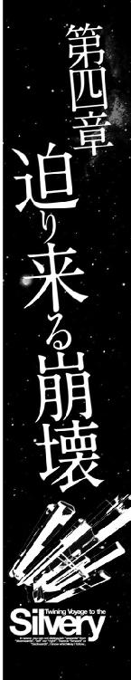
行列が進み始めた気配を感じたウーフは、顔を上げた。
凍てつく冷気をさえぎるために、路上に断熱マットを敷き、厚手のコートを着たり、頭から毛布をかぶったりして座り込んでいた何百人もの人たちが、もぞもぞと動き始めていた。
......やっと配給が来たんだな。
そして、立ち上がろうとしたとき、ウーフの周りの光景が、ぐらり、と揺れた。
......うわ！
よろけるように、その場に膝をついたウーフを見て、後ろにいた近所のおばさんが、心配するように言った。
「あらあら、急いで立ち上がるからだよ！ ろくに食べるものを食べてないんだ、いくら若くたって立ちくらみを起こすにきまってるじゃないか」
「あ、どうも、すみません」
ウーフは、恥ずかしそうに頭を下げた後で、呼吸を整えてもう一度ゆっくり立ち上がった。
並んでいる人々は動き出したが、行列自体はちっとも進んでいかない。
前の方を見たウーフは、行列が進まない理由がわかった。行列の中に、座り込んだまま動かない人が何人もいるのだ。
......二ヶ月前なら、きっと罵声が飛んだだろうな。つかみ合いのケンカになったかもしれない。
......そういえばあの頃は、みんな立ったまま並んでいたような気がする。
ウーフは、この惑星ホルストで食料の配給が始まった二ヶ月前のことを思い出していた。
その日、いつものようにハイスクールに登校するために家を出たウーフは、中央リフトに向かう途中の公園の脇で、後ろから走ってきたチャニに声をかけられた。
「おはよう！ ウーフ！ 今日は寒いね！」
「冬だから寒いのは当たり前だ」
ポケットに手を入れたまま、無愛想に答えるウーフを見て、チャニが不満そうに言った。
「そりゃあそうだけど、ここしばらく、いつもより寒くない？ なんというか、このシティ全体の気温が低くなっているみたいなんだけど......」
チャニの言うとおり、確かに、ここ最近、ドームシティ内の気温が低くなっていた。
ウーフは、クラスメイトから聞いたウワサを、そのまま受け売りしてチャニに話した。
「ほら、鉱山の中に新しい施設が造られたって話を聞いただろう？ その施設が熱を必要としているために、ドームシティを暖めていたヒートポンプの熱が、そっちの施設に送られているらしいぜ」
チャニはそのウワサを聞いた事が無かったらしく、目を丸くした。
「へえ......何の施設なんだろう？ そんな風に熱を使うなんて......」
「なんだかよく知らないけど、温室みたいな施設らしいぞ。太陽光ランプとか一杯使ってるって話だ......連絡船が入って来なくて、どうしようかって話をしているときに、温室造ってるなんて、まったく、行政府の連中は何を考えているんだろうな？」
不満そうに答えたウーフの顔を見て、チャニがやれやれ、という顔で肩をすくめた。
「もしかしてウーフって、世の中の偉い人は、みんな悪人で、私利私欲で動いている......みたいに思ってない？ それって、すごい一方的な考え方だと思うよ。もしかしたら、その施設だって温室とかじゃなくて、畑かもしれないじゃん。ほら、野菜とかお米とか作って、自給自足するための！」
自分の心の狭さを正面からずばりと言われたような気がしたウーフは、そのチャニの言葉を鼻で笑って自分を正当化しようとした。
「馬鹿なこと言うなよ。このシティには五万五千人が暮らしているんだぜ。その全員に食わせる分の野菜や穀物を栽培するとしたら、どれだけの面積が必要だと思う？ 温室みたいな施設が畑になるもんか。畑にするなら、このシティの公園とか、ハイスクールのグラウンドとかそういった空き地を全部耕すはずじゃないか......それだって足りないくらいだぞ」
「それはそうだけどさ......」
チャニがそう答えたとき、二人の横を、何台もの灰色の貨物運搬用のトラックがクラクションを鳴らして猛スピードで走り抜けて行った。
「きゃ！」
風圧で髪の毛が乱れるほどの近距離を走り抜けていったトラックに、チャニが、思わず恐怖の叫びを上げた。
「大丈夫か！」
ウーフは、チャニをかばうように身体を前に出して、走りすぎて行くトラックをにらみつけて叫んだ。
「乱暴な運転しやがって！ 保安局に言いつけるぞ！」
だが、ウーフは、その叫んだ口をぽかんとあけた。
走り去って行くトラックの荷台に乗っていたのは、青い制服を着た保安局の係員たちだった。
「保安局が......なんでトラックに乗っているんだ？」
「なんだろう......なんか......いやな予感がする......怖い」
そう言って、ウーフの腕をぎゅっとつかんだチャニの手は、小さく震えていた。
......あの日、エルノリク男爵領行政府は、シティの住民に対して、惑星ホルストが、封鎖状態になることを発表し、それに伴って非常事態を宣言した。
流通過程にあるすべての食料と消費資材は行政府の管理下に置かれ、世帯数に応じた必須カロリー分の食料が配給されることになった。
あの日、このシティから商店というものが消えた。
食料にかかわらず、すべての品物......ティッシュペーパーから洗剤に至るまで、ありとあらゆる品物が、姿を消した。
今までは、品薄でも金さえ出せば品物は手に入った。でも、あの日からいくら金を積んでも品物は手に入らなくなってしまった。
帝国中央銀行のクレジット紙幣は、シティの人々の間で、まだそれなりの価値が認められているけど、それが紙切れ同然になる日も近いだろう。
行政府は住民たちに、鉱山に造られたプラントで培養された食用藻類と、備蓄した食糧によって、惑星ホルストのすべての住民が生き延びるための最低限のカロリーを自給できる。そして、物資を積んだ貨物船が、このホルストに向かっており、この非常事態は一時的なものであり、耐乏生活は長期にわたるものではないと、何度も繰り返して広報した。
......そう、あのときはみんな、それを信じていた。
この状態は、長く続かない。こんな、物の無い状態はすぐに終わる。明日にでも店に商品が並んで、誰でもお金があれば、欲しいものを欲しいだけ買えるようになると思い込んでいた。
最初の頃は、みんな普通に暮らしていた。
家に、小麦粉とかパスタとか、レトルトのソースといった、保存の利く買い置きの食料品があった家も多かったからだろう。店が閉鎖されても、それほど混乱は無かった。
だが、例外もあった。それは、料理をしたことが無い人々の悲鳴だった。
出来合いの惣菜を買っていたり、外食しかしたことが無い人にとって、商店の閉鎖は致命的だったのだろう。そういう人たちは、食料品を買い置きする、という概念を最初から持っていなかったのだ。
そういった人たちは、その日から餓えることになった。
......料理のスキルって、大事なのかもしれないな。
ウーフがそんなことを考えたとき、前の方に座っていた人たちが立ち上がったのだろう、やっと行列が動き出した。
背中を丸めて、とぼとぼと歩く人々の行列は、子供の手を引いた母親や、中高年の男女ばかりだった。
......体力のある、俺みたいな若い連中は、みんなシティ内の公園や緑地を畑にする勤労奉仕に駆り出されているからだろう。
配給日が母親の仕事日と重なっていなければ、俺もみんなと同じように畑仕事をやらされていただろうな。
ウーフは、赤く肉刺が剝けたあとが残る自分の手のひらを見た。
......農業ができないこの惑星には、耕耘機みたいな農作業用の機械は必要なかったから、ほとんど輸入されていなかったせいもあるけど......この時代に、手製の鍬を振るうことがあるなんて、思ったことも無かった。
あれだけ必死に畑を作っても、収穫できるのは何ヶ月も先だ。
......それまで、俺たちは生きていられるんだろうか。
のろのろと進む行列の先に、青い制服を着てショックガンを構えた保安局の係員の姿が見えた。
ウーフは、まだ見たことはないが、シティの他の配給所では、食料品の分配をめぐって、配給の係員が暴行を受けたり、騒ぎになったりしたという話を聞いていた。
行政府は、何度も繰り返して、市民に対し冷静な行動を呼びかけていた。
不満が騒ぎとなり、騒ぎが暴動になって秩序が失われ、社会が崩壊すれば、自給自足する能力を持たない環境で生き延びることのできる人間はいない。暴力と衝動に身を任せれば自滅する。冷静な行動のみが、自分たちを救うのだと、広報は告げていた。
行列を作って待っているウーフの横を、配給所で食料をもらった人たちが通り過ぎていく。
主婦らしい女性が、大事そうに抱えている包みの中に、ちらっと緑色のパンが見えた。
それは、プラントで培養された食用藻類を、小麦粉の中に混ぜて増量した代用食パンだった。
都市下水の汚泥を栄養源にして培養された藻類は、加熱殺菌されて脱臭されていたが、急造の簡易脱臭装置では、完全に藻の匂いを除去することはできなかったのだろう、口に入れると、うっすらと溜まり水の藻のような匂いがした。
......最初の頃、あのパンを「下水パン」と呼んで馬鹿にしていた連中がいたけど、今ではもう誰もそんなことは言わない。
食えるものに、文句をつけることができるのは、他に食うものがあるときだけだ。今のこの街で、そんな余裕のある人間は、もうどこにもいないってことだろうな。
ウーフの前に並んでいる人たちの数が、あと二十人ほどになったとき、配給所の前で、中年の男と、若い女の子が、なにやら言い争う声がした。
その女の子の声に、ウーフは聞き覚えがあった。
......チャニじゃないか！ あいつも並んでたのか！
言い争っている会話の内容が聞こえてきた。
「だから、これは、家にいる弟や妹の分なんです！ 私の家だけが多くもらっているわけじゃないんです！」
「ガキが、なんで大人と同じ分食うんだ！ ガキの分なんざ半分、いや、三分の一でも多すぎる！ さっさと返せ！」
どうやら、チャニがもらっている配給の食料が多すぎると、どっかのオヤジが文句をつけているらしい。
「この人の家庭の登録人数から割り振った、適正量を配給しただけだ。家族が多いんだから、量が多いのは当然だ、君の抗議は理由が無い」
説明しているのは、配給をしている民生局の人だろうが、オヤジは納得していないようだ。
「わかったぞ、てめえら知り合いだな？ ぐるになっているんだろう！ てめえの身内とか、知り合いにはたっぷりメシを分けてやろうってことか、このインチキ野郎！」
大声を聞きつけたのだろう、ちょっと離れたところに立っていた保安局の係員が、あわてて小走りに近寄ってくるのが見えた。
ウーフは迷った。
......どうしよう、チャニが困っているのなら、助けてやりたい。でも、俺も並んでいるわけだし、行列を抜けたら、後回しにされちゃうかもしれない。せっかくここまでずっと並んできたのに、それが全部無駄になるかもしれない。
それに、別に俺なんかが出て行かなくたって、保安局の人もいるだろうし、問題ないのかもしれない、俺が行ったからって、何ができるわけじゃないし......。
そのとき、ウーフの脳裏に、以前、買い物をしたときにチャニが笑顔で言った言葉が浮かんだ。
『......できない人や、困っている人を手助けするのは、できる人や、困ってない人の義務なんだよ......』
......あいつは、いつもそんな風に言いながら、なんだかんだとお節介を焼いていた。俺だけじゃない、クラスの連中や、小さな弟や妹の世話も一生懸命やってきた。
俺が困ってるときに助けてくれたあいつが困っているのに、俺は何もしなくていいのか？ 本当に、それでいいのか？ お前は自分だけが大事なのか？
ウーフは、思い切ったように顔を上げた。そして振り向くと後ろにいたおばさんに話しかけた。
「あの......すみません、あそこで因縁吹っかけられている女の子......知り合いなんです。ちょっと様子を見に行きたいんですけど、ここを抜けても......」
後ろにいたおばさんは驚いたように目を見開いたあとで、うなずいた。
「ああ、行列の順番ね、いいよ、取っておいてあげる。行ってやんなさい、知り合いの女の子が絡まれているのに見て見ないふりなんかできないよね」
そして、おばさんは、自分の後ろにいた、他のおばさんたちにも声をかけた。
「前の方で馬鹿なオヤジに絡まれてる女の子、この兄ちゃんの彼女なんだってさ、助けに行きたいって言ってるんだけど、列抜けても、順番そのままでいいよね？」
後ろの方にいたおばさん連中は、口々に答えた。
「いいよ！ 行ってやんな！」
「彼女にいいとこ見せるのも男の甲斐性だよ！」
「順番は取っておいてやるから、さあ、早く行きな！」
「すみません、お願いします！」
ウーフは、そう言い残すと、行列を外れて配給所に向かって走った。
配給所では、五十過ぎの、半分白髪の小太りの男と、配給所の職員、保安局の係員たちが言い争っていた。
少し離れた場所で、配給のパンを抱えて、怯えたような表情で立っているチャニを見つけたウーフは、駆け寄って声をかけた。
「チャニ！ 大丈夫か？」
チャニは驚いたように口に手を当てて、ウーフを見ると、いきなり飛びついてきた。
いつもの甘いシャンプーの匂いではない。安い石鹼の匂いがふわっと匂った。
「ウーフ！」
「大丈夫だ、ちゃんと保安局の人もいるし、係員の人だって、君が不正をしているんじゃないってことはわかってるんだから」
チャニは半分涙目でうなずいた。
「うん、だけど、あの人、何を言っても納得してくれなくて、大声で怒鳴ったり、私のもらったパンを取り上げようとして腕を引っ張ったりして......すごく怖かった......」
中年の男は、保安局の係員に食ってかかっていた。
「お前の名前を教えろ！ 俺は、保安局の偉いさんを知っているんだ！ お前のような下っ端に馬鹿にされてたまるか！」
保安局の係員は、うんざりしたような顔で答えた。
「その偉い人とやらの名前を言ってくれ、名前は？ 部署と階級を言ってくれれば、すぐに連絡を取って、ここに呼ぶから、そうすれば話がわかるんだろう？ なんていう人だね？」
自分の威しの言葉に、保安局の係員が動じないどころか、その言葉で逆に自分の首を絞めることになった中年の男は、虚勢を張るように言い返した。
「こんなところにいちいち呼べるわけが無いだろう。お前らなんかと違って、現場に来るわけないんだ！」
「ああそうか、現場に来ない、呼べないというんじゃ、その偉い人とかを、知ってても知らなくても関係ないな。いいかげんにしなさいよ、自分の配給をもらったならさっさと帰りなさい。他人の配給が自分より多いからって、文句をつけるなんて、あんたもいい年をして、恥ずかしいとは思わないのか？」
まわりにいる行列の中から、嘲笑にも似た笑い声が上がった。
男は、最後に残った虚勢を精一杯かき集めて、保安局員をにらみつけた。
「おい、あんた、名前はなんて言うんだ！ うそをつくなよ、本当の名前だ！」
保安局員は、にやっと笑って、胸のバッジとＩＤカードを指し示した。
「ここにちゃんと、名前と番号が書いてある、しっかり読んで覚えてくれ、覚えられないなら、メモ用紙とペンを貸してやるから、しっかり書いていきなさい」
「ふざけるな！ お前のことを上司に言って首にしてやるからな！」
自分の最後の嫌がらせさえ、軽くあしらわれた中年男は、捨て台詞を残して、小走りに去って行った。
配給を配っていた民生局の係員が、心配そうな顔で、保安局の係員に聞いた。
「大丈夫ですか？ あとで上司から叱責されるようなことはありませんか？」
保安局員は、肩をすくめた。
「我々保安局の係員は階級で動いているから、上の階級の人間の名前を出せば、どうにでもなる、と考えている馬鹿はどこにでもいるんだよ。あいつは、そんな名前なんかいくら出しても何の関係もないってことがわからないほど馬鹿だってことだな。心配いらないさ。本当の大物は、軽々しく偉い人の名前を出して、俺は誰々を知っている、なんてことは言わないんだ。そう言い出した時点でそいつは俺は小物です、と自供したようなものだよ」
「そうですか、ならいいんですけどね......」
民生局の係員は、チャニを見て、頭を下げた。
「災難だったね。ときどきあんなヤツがいるんだ。自分より得をしている人は悪いことをしている。他人が得をした分自分が損をすると本気で思い込んでいるヤツがね。たまたま居合わせてしまったのが運が悪かったと思ってくれ」
チャニはあわてて首を振った。
「あ、いえ、私のもらっている配給分が、正当なものだってことを、証明していただいたので、別になんとも思っていません。それを納得しなかったあの人が悪いんですから......」
民生局の係員は横に立っているウーフを見て聞いた。
「君は......この子の知り合いかね？」
「え、ええ、家が隣なんです......」
そのとき、後ろの行列から、おばさんたちの声が飛んだ。
「お兄ちゃん！ 順番が来たよ！」
「彼女を助けてやったのはいいけど、自分の家の分の配給をもらわないとお母さんに怒られるよ！」
「あ、いけね、ちょっともらってくる！」
ウーフは、横にいたチャニにそう言うと、配給の窓口に向かって走った。
今日の配給は、例の食用藻類で増量された代用食パンが三本、そして合成蛋白で作られた、肉の代用品のソーセージが同じく三本、食用油脂が五百ミリリットル、ビタミン剤と、水耕栽培のレタス一個だった。
......これで、一家三人が四日間生き延びなくちゃならないってことか。
食い延ばしするか、家にある備蓄の食料品で増量するか、どっちにしろ、ギリギリの食事になりそうだ。
配給の食料品を受け取って、持っていた保冷バッグにソーセージを詰めていると、さっきの係員がやってきた。
「君、あの子の隣だって言ったよね......」
「ええ、そうですけど、それが何か？」
民生局の係員は、チャニを指差して言った。
「彼女に配給した食料品は、他の人よりも多いんだ。家族が多いのだから当たり前だが、さっきの男のようにその理屈が理解できないヤツも多くてね。他の配給所でも、家族の多い世帯の食料品を、人より多くもらっているという理由で襲って食料品を奪ったりする事件が発生しているんだ。君の家の隣なら、悪いが彼女についていってやってくれないか？」
「ええ、最初からそのつもりでした」
そう言ってうなずいたウーフを見て、係員は微笑んだ。
「よろしく頼むよ」
「はい！」
そう言って胸を張るウーフを、チャニは嬉しそうに見上げていた。
配給所から、集合住宅までの道を、ウーフとチャニは並んで歩いた。
チャニの家は六人家族なので、配給の食料品も多い。
ウーフは、自分の家の分も合わせて、全部で九本の食パンを抱えて歩いていた。
重さはそうでもないが、かさばるので、前が見にくいため、首を曲げたまま歩いていると、チャニがぽつりと言った。
「......ありがとう、ウーフ......」
「え？ ああ、別に、なんてことないよ、軽いし」
「食パンのことじゃないよ......さっき、あそこで、あの変なオジサンに怒鳴られていたとき、来てくれたでしょ？」
「ああ、でも、何にもできなかったけどな......」
チャニは首を振った。
「ううん、違う！ 来てくれただけで嬉しかった！ それだけで嬉しかったんだよ！」
ウーフは、立ち止まって、チャニを見た。
「あのさ......俺、お前に謝んなきゃいけないって思ったんだ......」
チャニは目を丸くした。
「謝る？ 何を？」
「お前さ......今まで、いろいろ俺の家のこととか、俺のこととか面倒見てくれていただろう？ 俺は......なんというか、こう、素直になれなくてさ、お前がやってくれたことに文句言ったり、知らん顔したりしていたけど......本当はとても助かっていたんだよな。
さっき、あのオヤジに絡まれて困ってるお前の声を聞いたとき、俺は気がついたんだ。
俺はお前に恩がある、って......。
なんて言うんだろう、こういうの。恩返しって言うのかな。俺にできることがあるなら......お前のために何かができるなら、それをやらなくちゃいけない！ って思ったんだ」
チャニは、あわてて首を振った。
「そんな！ 恩返しとかそんなの嫌だ、だってそんなつもりでウーフの家のこととか面倒見ていたんじゃないもの！ だって、それは当たり前のことだったんだよ！」
「お前がやってきたことが当たり前って言うのなら、俺がお前を助けるのも当たり前のことなんじゃないのか？」
ウーフの言葉をじっと考え込んでいたチャニが、何かに気がついたように顔を上げた。
そして、嬉しそうに言った。
「そうだよね、それが、当たり前になったんだよね......私がウーフのために何かをすることも、ウーフが私のために何かをしてくれることも......それが当たり前になれたんだよね、私たち！」
「何を喜んでるんだよ、変なヤツだな......ずっと昔から変わんないじゃないか」
怪訝な顔をするウーフを見上げて、チャニはちょっと上気したような顔でうなずいた。
「そうだよね、ずっと昔からそうだったんだものね......信じなくちゃだめだよね」
配給の荷物をチャニの家に届けたウーフは、お茶を飲んでいけ、というチャニの祖母の誘いを断りきれずに、家に上がりこむハメになった。
チャニの家は、両親と祖母、そしてチャニの下に妹と弟、という六人家族で、鉱山会社から、普通の家より二間ほど多い住宅を提供されている。
祖母は、チャニとウーフから受け取った配給の食料品を、大事そうに、台所の冷蔵庫と保存庫に仕舞ったあとで、香茶のパックをポットに入れながら言った。
「ラックとリューネは食べ盛りだから、これじゃあきっと、物足りないだろうねえ......かといって、どこかで買うわけにもいかないし......聞いた話じゃあ、闇取引をしている人たちもいて、缶詰一つにとんでもない値段をつけて売っている人もいるそうだねえ......」
「配給が始まる前に、隠しておいた品物じゃないかって話ですけど、個人の間の取引には、保安局も文句は言えないそうですよ」
ウーフがそう答えたとき、リビングのモニターの画面が、昼のドラマから急にニュース画面に切り替わった。
「あれ？ 行政府の放送だ......いつものアナウンサーじゃなくて、レイラ様が出てるわ」
チャニの声を聞いたウーフは、驚いたように振り返った。
「レイラ様だって？ なんだろう？ 何か大切な話かな？」
モニターの中に浮かび上がったレイラは、顔色が悪かった。しかし、それでも精一杯の笑顔を見せて一礼すると、ゆっくりと言った。
『シティの皆様に、お知らせします。先日、私は皆様に、この惑星ホルストが、なぜ封鎖されてしまったのか、その理由をお知らせしました。この封鎖は、おそらく皆さんの中に餓死者を出すまで終わらないでしょう......しかし、この封鎖を突破できれば......このホルストに食料を積んだ貨物船が入港できれば、この封鎖の意味はなくなります。ですから、その日まで耐えましょう......と』
レイラは、そこで言葉を切ると、満面の笑みを浮かべた。
『そして、本日、待ちに待った知らせが届きました。食料を積んだ貨物船がウィンザーレットを出港したという知らせです！ 貨物船の名前は銀星号......そうです、あの、小麦の病気のために滅亡の危機にあった、惑星バレリアを救うために、爆薬と化した危険な殺菌剤を、命がけで運んだ、あの船です！ あの銀星号が、今、私たちの危機を救うために、このホルストに向かっているのです！ 銀星号は、先の戦争で、ローデス軍によって封鎖された惑星の将兵に、何度と無く医薬品や補給物資を届けた実績を持ち、帝国軍の将兵から奇跡の船と呼ばれた船です。その名のとおり、私たちに奇跡をもたらしてくれることを期待しようではありませんか！ 順当に航海がすすめば、銀星号がこの惑星ホルストの衛星軌道にやってくるのは四週間後です！ 皆さん！ 耐えてください！ あと四週間、あと四週間で救いの手が差し伸べられるのです！ 行政府の指示に従って、冷静に行動してください！ お願いします！』
レイラが一礼したところで画面が切り替わり、いつものアナウンサーが登場して、配給に関する予定表を読み上げ始めた。
モニターを見ていたチャニが、嬉しそうに祖母に言った。
「お祖母ちゃん！ あと四週間で連絡船が来るんだって！ よかったね！」
「あらあら、そうかい、そりゃあ良かったね！ もうこれで孫たちにひもじい思いをさせないで済むんだねえ......」
顔をくしゃくしゃにして喜ぶチャニの祖母を見ながらウーフは思った。
......レイラ様は、あんなふうに簡単に言ったけど、本当に四週間後に銀星号がやってくるという保証はどこにもない。
もし、途中で銀星号が海賊に襲われて、食料品が届かなかったら、シティの人たち......ここにいるチャニや、チャニのお祖母さんはどんなに失望するか......レイラ様は、それを考えているんだろうか？ ぬか喜びに終わることのリスクを考えていないんじゃないのか？
そう考えたとき、ウーフはもう一つの事実に気がついた。
......いや、だからといって、銀星号が来るということを知らせないわけにはいかないんだ。この苦しい生活は、永遠に続くわけじゃない。もうすぐ終わる、という希望。それがなければ人間は耐えられない。希望を与えることも、人の上に立つ者の義務なんだ。
......もし、俺がレイラ様だったらどっちを選ぶだろう？
シティの人たちにぬか喜びさせないために、銀星号が向かっているということを秘密にするか、それとも、自分たちは助かるんだ、という希望を与えるために知らせるか。
ウーフは、素直に喜んでいるチャニと、祖母を見て思った。
......配給が始まって二ヶ月。この二ヶ月の間に、こんな風に喜んでいるチャニの顔を見たことがあっただろうか？
そうか、やっぱり知らせるべきなんだ。無事に銀星号がたどり着くかどうかそれはわからない。でも、その事実を知っているのと知らないのとでは、人々の活力が違うんだ。
人間は、希望があるから生きていけるんだ。
そして、ウーフは気がついた。
......俺は、今まで、誰かに何かをする側の目で、物事を見てきたことがなかった。
俺は、いつも、何かをされる側の目でしか見てこなかった。
偉い人、上の人が、何かをするのは当然だから、俺は要求だけしていればいい。俺は何もしなくていいと思い込んでいた。
でも、今日、あのオヤジに絡まれているチャニを見たとき、俺は、なんとかしなくちゃ、と思った。
余計な口出しをして、ケンカになったり、怪我をさせられたりすることを考えれば、保安局の人や、配給の係の人に任かせて、黙って見ているのが正解だったのかもしれない。
でも、俺は見て見ない振りなんかできなかった。
結局......俺には何もできなかった。俺はチャニの横に立っていただけだ。それでも、チャニは喜んでくれた。
......なんとかしなくちゃ、と思って、動く事は間違いなんかじゃないんだ。
そのとき、ひょい、とチャニがウーフの顔を覗き込んだ。
「うわ！ なんだよ、いきなり！」
驚くウーフを見て、チャニは面白そうに笑った。
「まーた、難しい顔して考え込んでる！ 言ったでしょ、あんたがいくら考えたって、なにも変わんないし、変えられないんだから、考えたって無駄だって......」
「そうだな......考えてるだけじゃ何も変わんないんだよな......」
ウーフは、そう言ってチャニに微笑み返すと、リビングのソファから立ち上がった。
「帰るの？」
「うん、もうすぐ母さんが帰って来るからね、その前に家に配給の食糧を持って帰らないと......」
チャニは、一瞬寂しそうな表情を浮かべた後で、うなずいた。
「じゃあ、明日、学校で！ ありがとう、今日は本当に嬉しかった！」
「学校って言ったって、半分は勤労奉仕で畑作りだけどな......」
ウーフはそこで言葉を切ると、モニタースクリーンの前に座り込んで、ドラマの続きを見ていたチャニの祖母に声をかけた。
「じゃあこれで失礼します、お茶......ありがとうございました、貴重な品物なのに......」
祖母は、あわてて立ち上がると頭を下げた。
「いえいえ、こちらこそ、孫が世話になったっていうのに、何のお構いもできませんで申し訳ない。本当ならお茶菓子の一つも出さにゃならんのに......」
「今はそんなことを気にしないで下さい！ お茶を出して貰っただけでも、恐縮ですよ！」
ウーフが、あわてて首を振った。そのとき。
遠くから、ずしん！ という地響きが伝わってきた。
「何だろう？ 地震？」
「いや、何かが爆発したみたいな音だった......鉱山の方だ！」
チャニとウーフは、集合住宅のドアを開けて外に飛び出した。
集合住宅の五階にあるチャニの家の前から、シティのドームに隣接している鉱山施設が見えた。
雪と氷で覆われたその施設の一つから黒煙が噴き出している。
「あれは......もしかして、プラントじゃないのか？」
「プラントって......食用藻類の？」
「ああ、そうだ......俺たちの命の綱だ......」
そう答えたウーフは、自分の足が震えているのに気がついた。
......どうなるんだ？ もし、ここで、食用藻類が作れなくなったら......俺たちはどうなるんだろう？
答えは出ていた。だが、ウーフはその答えを脳裏に浮かべるのが怖かった。
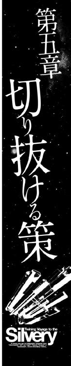
荷物を積み込んでウィンザーレット星系を出発した銀星号は、目的地であるエルノリク星系に直接向かわずに、その途中にあるベルナルト星系に来ていた。
水、酸素型の青い惑星の衛星軌道上に、リング状に浮かぶスクラップの群れを見ればわかるとおり、このベルナルト星系の第三惑星は、正式名称のシャイダではなく、ジャンクスターという通り名で呼ばれていた。
実際にウェブページで検索すると「惑星シャイダ」よりも「ジャンクスター」の方が、はるかにヒット数が多いのだ。
そのリング状に浮かぶ夥しい量のスクラップの帯は、このジャンクスターを本拠地にしている解体業者たちの作業場、兼、材料置き場の集合体である。
その帯の片隅に、壁面に大きく「リムジン商会」と書かれた巨大な気密ドックが浮かんでいた。
銀星号は、その気密ドックの外側に寄り添うように停泊していた。
銀星号の外見は変わらない、しかし、船体後部に伸びる二列の貨物コンテナは、いつもの倍の数になっていた。
そのコンテナの中には、製粉されて小麦から小麦粉に姿を変えた一万五千トンの圧縮バーレナン小麦粉や、惑星ホルストに運ぶ圧縮冷凍された精肉、日用品などがぎっしりと詰め込まれていた。
「銀星号にビーム砲を搭載か......お前さんたちは、妙な仕事ばかり請け負っておるようだな......まあ、こっちはあの船を売った身だから、買ったお前さんたちがどうしようと勝手なんだが......」
事務所の応接セットのソファに座っていた、油の染みがついた黄色い船内作業服を着た白髪交じりの短い髪の初老の男......このリムジン商会の社長であるポポイ・リムジンは、半分感心したように、そして残りの半分はあきれたような表情で言った。
「本物のビーム砲でなくてもいいんです、というか、本物じゃあ困るんです。かといって、まるっきりの張りぼてでもダメなんです、最低限、遠距離光学センサーで、本物と判断されるくらいの外見が無ければ意味が無いんです。ここなら、軍用船のサルベージと解体を請け負っているから、ビーム砲の砲塔とかの実物が手に入るんじゃないかと思ってやってきたんです......」
ハヤトの言葉を補足するように、隣に座っていたハインツが付け足した。
「それと......実を言うと、作業に割く時間が無いんです。荷物の届け先は、もうほとんど食料が尽きてしまった状態らしくて、培養プラントで栽培された食用藻類と、備蓄されていた最後の食料で、なんとか生きていくための必須カロリーを維持している状態に陥っているそうです。このジャンクスターで外装を変えるために許される時間は、四十八時間が限度なんです」
ポポイは、口元に持っていった湯飲みの手を止めて顔を上げた。
「四十八時間じゃと？ 硬化セカンダリュームの外殻に穴を開けて、そこに砲塔を取り付ける作業は、とても四十八時間じゃ終わらんぞ？ どうするつもりだ？」
「ええ、俺もそう思います。でも、砲塔を動力で動かすのはあきらめて、そっくりそのまま船体の外側に溶接してしまえば、四十八時間でなんとかなるんじゃないかと思うんですが？」
ポポイは、目を丸くした。
「外殻に溶接してくっつけるだと？ 砲塔をか？ そりゃあ確かに、見てくれさえ良ければいいわけで、使わんのだから、別にそれでも構わんが......なんというか、そういう外見だけの作業は、こう......解体再生屋のプライドにひっかかるな。外見無視、機能重視、というのがわしらのプライドだからな......」
ハヤトは苦笑を浮かべてうなずいた。
「ええ、時間さえあれば、俺も、砲塔内側にラック＆ピニオンギヤをつけて、同調回路ですべての砲塔が同時に同じ目標を追尾する......くらいのギミックをつけてみたいところですけど......」
「うむ、最低限でもそれくらいの細工はしたいところだな......まあいい、Ｄエリアのスクラップ置き場が、サルベージしてきた軍艦の部品の置き場所になっておる。使えそうな部品や、ビーム砲の回路などはすべて取り外して鍵のかかる倉庫に保管する義務があるが、それ以外の......お前さんが欲しがっている砲塔の外側などは、全部そこにあるはずだ......ちょうど今、専門学校の実習で、サイラスが帰って来ているから、あいつに案内と手伝いを頼むとしよう......」
ポポイはそう言うと、手元にある汎用端末のキーを押した。
「ああ、わしだが......そっちにサイラスはいるか？ え？ 銀星号の様子を見に行った？ ったく、船長たちに挨拶しないで、先に船の様子を見に行くとはなんてヤツだ......あいつの作業服の番号は？ ああ、いつものヤツだな、わかった、ああ、いいよ、こっちで呼び出す。君に手間をかけさせるわけにはいかん。うむ、よろしく頼む......」
ポポイは、汎用端末のキーを押して別の番号を入力しながら、恐縮したように頭を下げた。
「いや、すまんな。銀星号はあいつが一人で組み立てたようなものだから、なんというか、飼っていたペットが家に帰って来たような気分でいるのかもしれん......」
そのとき、汎用端末から少年の声がした。
『なんか用？ お父さん！』
「用があるから呼んだんだ。今、こちらにハヤト船長とハインツ航海長がお見えになっている。銀星号の武装化についてお前に話があるそうだ、大至急事務所に戻って来い！」
端末の向こうから、驚いたような声が返って来た。
『武装化ぁ？ なんだよそれ！ まさか、銀星号を使って海賊でもやるつもりなの？ ひゃっほう！ すげえ！ さすがハヤト船長だ！』
ポポイは、あきれたように答えた。
「武装化は、海賊船に対抗するための手段だ！ 海賊をやるためじゃない！ 詳しいことを説明するから、さっさと戻って来い！」
『わかった！ すぐ戻る！ 銀星号を武装化する方法ならいくらでもあるから安心して！』
サイラスは、はずむような声で通信を切った。
その、五分後。
リムジン商会のスクラップ置き場に向かって飛ぶ連絡艇の中で、茶髪の巻き毛の十五歳くらいの少年が、不満げに唇を突き出して、ぶつぶつと文句を言っていた。
「銀星号を武装化するっていうから、てっきり、本格的な戦闘艦に改造するのかと思ってたら、外見だけだなんて......喜んで損しちゃった......」
連絡艇を操縦していたハヤトは、笑いながら少年に話しかけた。
「サイラスの希望を裏切っちゃって悪いとは思うけど......銀星号を本格的に武装化するわけにはいかないのさ。星間警察の目は今でも光ってるんだ。でも、外見だけの武装化でも充分効果があると思うんだ。俺も、君も素人じゃない。たとえばもし、銀星号に本物のビーム砲の砲塔を取り付けるとしたら......と考えたとき、俺たちなら、取り付けるべき場所が分かるだろう？ 素人が適当に張りぼてを貼り付けた、やっつけ仕事のいいかげんなデコイじゃなくて、本物そのままのデコイが作れると思うんだ。光学センサーで確認されても見破れないくらいのレベルのヤツがね......」
連絡艇の後部座席に座っていたハインツが、ハヤトの後を継いだ。
「バリバリの戦闘艦を造って、そいつで海賊船と殴り合うってのは、確かにカッコイイけどさ、そういうのって、脳味噌まで筋肉っぽいヤツらがやることだって思わないか？ 殴り合うことしか考えてない連中を手玉にとって、切り抜けるってのも、それはそれで充分カッコイイことだと思うぞ。だって、どっちの方が難しいと思う？」
サイラスは、不満げな顔つきのまま答えた。
「そりゃあ、ただ殴り合うよりも、殴ってくる連中の鼻を明かして切り抜けるほうが難しいと思いますけど......」
ハヤトは、素早く切り返した。
「その、難しいことをやってのけるのは、カッコイイことだとは思わないか？」
助手席に座っていたサイラスは、黙り込んだ。
「まあ、この辺のことが、カッコイイと思えるようになるには、それなりに世の中を知らないと無理かもしれないけどな......子供の感性で見れば、殴り合いで勝つヤツが一番カッコイイってことになるのも無理は無い」
ハインツが、そう言って肩をすくめたとき、サイラスが、小声で答えた。
「考えてみればそうですよね、強い武器さえ持ってれば勝つのは当たり前なんですよね......でも、その当たり前を、作戦......つまり知恵を使って引っくり返すってのは、面白いかもしれませんね......」
サイラスの言葉を聞いたハインツが笑った。
「よしよし、それに気がついてくれたか......それに気がつけば、サイラスも立派な銀星号の乗組員だ。いつでも歓迎するぞ。整備士の専門学校を卒業するのはいつだ？」
「もうすぐ二級船舶機関士の国家試験があります。それが期末試験を兼ねているんですけど、受験資格に、整備工場での一ヶ月間の実習ってのがありまして......それでこうやって実家で実習しているんです。無事に二級船舶機関士の資格が取れたら、そのまま一ヶ月半の学期末休暇、それが終われば、後期の授業が始まります......卒業まで、あと一年と二ヶ月ですね」
「一年と二ヶ月か......先は長いな」
ハインツが、そうつぶやいたとき、ハヤトが笑いながら言った。
「前期試験で二級船舶機関士の資格が取れたら、一ヵ月半の休暇の間、銀星号に乗らないか？ 学生を乗組員に登録するのは問題だけど、有資格者なら、見習い機関士って待遇で問題無いはずだぞ」
ハヤトの言葉を聞いたサイラスの顔が輝いた。
「本当ですか！ やった！ 俺、がんばります！ ちゃんと資格取りますから！」
喜ぶサイラスを見たハヤトが、真剣な目で答えた。
「前期試験を終えた君が、銀星号に乗れるかどうか、それを決めるのは君だぞ......しっかり外見を作り上げて、今回の仕事を無事に終えることができなけりゃ、銀星号は君を迎えに行けないんだからな」
サイラスは、はっとしたように目を見開いた後で、後悔するように首を振った。
「そうか......そうなんですよね、海賊と渡り合うってことは、ゲームでも、映画でもない、現実のことなんですよね。現実に命のやり取りをするってことなんですよね......うわー、俺って馬鹿だ！ 今まで、そんな風に考えていませんでした！ ごめんなさい！」
「仕方ないよ。帝国の辺境域と中央空域では、治安のレベルが違いすぎるんだ。中央空域に住んでいる人にとってみれば、宇宙海賊なんてのは、ゲームかドラマの中だけにしか存在しないのが常識だものな......さて、スクラップ置き場Ｄエリアってのは、この辺かな？」
「はい、この先です......あそこの、Ｄ級戦艦の艦首構造物が突き出しているあたりです......」
サイラスが指差した先には、帝国の軍艦の標準塗色である、明るい灰色に塗られた船の残骸がびっしりと並んでいた。
「うは、すげえ、旧式戦艦から、巡航艦、駆逐艦、フリゲート、機雷敷設艦に掃海艇......帝国軍の軍艦のカタログみたいだ」
半分歓声にも似た声を上げるハヤトを見て、ハインツがクギをさすように言った。
「船舶オタクの血が騒ぐのはわかるが、お前の趣味は後回しにしろ。今は使える部品を探すことに集中してくれ！」
「わかってるって......わあ！ 見ろよ！ ファリファックス級の空母があるぞ！ あれは五十年前に退役したヤツで、もうとっくに解体されちまったとばかり思ってたのに！ おわ！ あれは旧型の二等駆逐艦を特務艦に改造したヤツだ！ 四本マストの原形が、そのまま残ってるじゃないか！」
まるで、宝の山に飛び込んだ盗賊のように目を輝かせてあたりを見回すハヤトを見て、ハインツは、ぼやくようにつぶやいた。
「......ちっともわかってねえじゃねえか」
その日の夕方。リムジン商会の気密ドックの中に浮かんだ銀星号と、その前に山積みになったビーム砲の砲塔や、装甲板や隔壁などのパーツの前で、ハインツはハヤトとサイラスをにらみつけていた。
「......で？ パーツを選ぶのに時間をかけすぎた、ってどういう意味だよ！」
「あ、いや......完璧な外見にしようとして、こだわりすぎたのは認める......でも、このパーツがあれば、銀星号のシルエットは、完全な武装交易船として通用する出来栄えになる！ 後は取り付けるだけでいいんだ！」
言い訳するハヤトを見据えて、ハインツが両手を広げて叫んだ。
「その、取り付ける時間をどうするんだって、言っているんだ！ 明後日には、このジャンクスターを発って、エルノリク星系に向かって出発しなくちゃならないんだぞ。あと三十二時間を切っているんだ！ ポポイ社長に聞いたら、溶接ロボットを総動員しても、ギリギリだそうじゃないか。そして、溶接した跡を塗装で消さないと、砲塔がニセモノだということは、バレバレになってしまうと言っていた！ その塗装する時間はどうするつもりだ！」
「それなんだけどさ、サイラスとも相談したんだが......溶接しないで、接着するってのはどうだろう？」
「接着ぅ？」
ハインツは目をむいた。
「接着って、あれかよ！ もしかして、接着剤でくっつけるつもりなのか？」
「ああ、工業用の強力なヤツがあるんだ、硬化剤と混ぜて使うんだけど。それなら溶接ほどではないけど、銀星号の加減速には充分耐えられる強度を保てる。なんと言っても、溶接跡が残らないから、再塗装する時間が短縮できるんだ！ だから大丈夫！」
そう言って胸を張るハヤトを見て、ハインツはため息をついた。
「......まあ、お前がそう言うのなら俺は構わないけど......接着剤で砲塔を貼り付けるなんて、前代未聞だな......もし、敵の見ている前で剝がれたら、文字通り化けの皮が剝がれることになるぞ」
「大丈夫だって！ リムジン商会の人たちも手伝ってくれるし、リアンにも手伝ってもらうつもりさ、総力戦だ！」
そう言って胸を張ったハヤトを見て、ハインツはもう一度ため息をついた。
「なんというか......残り時間三十二時間で、総出で仕上げようってのは、改造じゃなくて、工作って言ったほうがいいかもしれない......まるで夏休みの宿題だな......」
「文句があるなら出来あがりを見てから言ってくれ。俺はこれから作業服に着替えてくる。作業開始だ！」
ハヤトは、不安そうな顔をするハインツを重力コントロールされている気密ドックのプラットフォームに残して、無重力のエリアに足を踏み入れ、そのまま床を、ぽん、と蹴って銀星号のエアロックに取り付けられているタラップめがけて飛んで行った。
銀星号の改造作業は、ハヤトの言ったとおり、リムジン商会の従業員と作業ロボットとサイラス、そしてハヤトとリアンの全員が参加した総力戦となった。
リムジン商会のユニフォームである黄色い作業服を着て、おっかなびっくりで部品運搬を手伝うリアンの姿を見ていたサイラスが、不満そうにハヤトに言った。
「ねえ、ハヤト船長......なんであの、リアンってアテンダントさんを作業スタッフに入れているんですか？ お弁当を作ってくれたり、お茶を淹れてくれたりするならわかりますけど、あの人は、どう見てもシロウトじゃないですか......」
サイラスの視線の先には、見るからに不慣れな手つきで、資材置き場から砲塔の装甲ハッチを持ち上げて運搬アームの先に載っけているリアンの姿があった。
みつあみを解いて、簡単に後ろでまとめてポニーテールにしているリアンの姿は、いつもの姿を見慣れていたハヤトの目に、ちょっと新鮮に見えた。
「ああ、そのことか......」
ハヤトは、にっこり笑って、リアンが作業している場所を指差した。
「サイラス、よく見てごらん、リアンのいる場所......何か気がつかないか？」
「何かって......別に、ごく普通の荷物用プラットフォームじゃないですか......それがどうかしたんですか？」
「なぜ、銀星号改造用の砲塔とかそういった重量物のパーツが荷物用プラットフォームの上に置かれているのか。その理由はわかるよな？」
サイラスは、馬鹿にしないでくれ、という顔で答えた。
「重量物を無重力下に置くと、何かの弾みで作業区域に漂い出したりするからです。重量物は大きな慣性を持つために、作業員を挟んだり、船体にぶつかったりして事故になることを避けるため、磁性ボルトを使って磁力で固定するか、もしくは重力コントロールのできるプラットフォームの上に置くんです。あそこの上には約一Ｇの重力があるから、何百キロもあるパーツも簡単には動き出しませんから......」
サイラスは、そこまで答えてから、何かに気がついたようにあわてて振り返った。
「え？ あ......だって、そんな......あの装甲ドアを手で持って......」
「種明かしをするとだ、リアンは、高重力惑星バレリアの出身なのさ。普段は髪の毛をみつあみにして心理抑制をかけているから、普通の女の子と同じくらいに力が抑えられているけど、みつあみを解くと、外骨格型の機動服並みに力が出るんだ。だから、あそこでパワーアームにパーツを載せる仕事を手伝ってもらってるのさ。作業用機動服は数が限られているからね」
「そうだったんですか......」
サイラスは、納得がいった、という風にうなずいてから、リアンが立っているパーツ置き場の奥にある、別のパーツ置き場を指差した。
「ところで、ハヤト船長、あそこに積んである帝国軍艦の標準型の内部隔壁のドアとかキャビンのドアとか、手すりとか......あれは何のためなんですか？」
ハヤトは、苦笑いしながら肩をすくめた。
「あれは、社長......つまり君のお父さんに話をして格安で譲ってもらった、銀星号の倉庫に積む予定のスペアパーツさ......消耗品だよ」
その言葉を聞いたサイラスは怪訝な顔になった。
「消耗品ってのは、推進機のシャフトとか、貨物コンテナ保持用の金具とか、そういったもののことじゃないんですか？ ハッチとか手すりとかが、なんで消耗品になるんですか？」
ハヤトは顔から苦笑いを消さずに答えた。
「言っただろう？ アテンダントのリアンは怪力だって......何かの拍子に抑制が外れて、ひょい、と手すりにつかまって、そいつをもぎ取ったり、隔壁ドアひん曲げたりすることがときどきあるんだ......修理するより、スクラップから剝ぎ取った再生部品を使って交換したほうが早いし、コストが安かったりするんだ」
サイラスは目を丸くした。
「軍用の外殻ドアとかハッチって......確か、何トンという大気圧の急激な減圧にも耐えられるような材質......外壁や装甲に使われる超硬化セカンダリューム製ですよ？......それをひん曲げちゃうんですか？」
黙ってうなずいたハヤトを見て、サイラスは感心したようにつぶやいた。
「......すげえ......あのお姉さんには逆らわないようにしよう」
そのつぶやきを聞きつけたハヤトは、真剣な目でサイラスに言った。
「念のために言っておくけど、リアンは確かに怪力の持ち主だけど、中身は普通の女の子と変わんないんだからな......いや、優しくて気が回るし、料理の腕もピカイチ、という普通の女の子以上の存在なんだ。化け物とか怪物とか、そんな風に馬鹿にしたら大間違いだぞ。サイラスが銀星号に乗るようになれば、リアンは同僚で先輩になるんだ。その事を忘れるなよ」
「あ、いえ、単にすげえな、って思っただけです、馬鹿にするなんて、とんでもありません！」
サイラスは、あわてて首を振った。
そして、二十二時間後。
リムジン商会の気密ドックの中に、連装ビーム砲の砲塔を二基、そして小型レーザー砲を三門搭載し、他にも軍用のセンサーアンテナや、集束通信装置、多重ドップラーレーダーなどを船体に取り付けて、精悍な姿に生まれ変わった銀星号が浮かんでいた。
濃いピンク色の船体の上に取り付けられた武装の塗色は灰色のまま、塗り替えられていないが、そのコントラストが、逆に武装を浮き上がらせており、一種異様な迫力を見せている。
「すごいな......なんというか、見違えた」
銀星号を見上げて、感心したようにうなずくハインツを見て、ハヤトは自慢げに胸を張った。
「すごいだろう。あの連装ビーム砲は、Ｇ級軽巡航艦の主砲だ。迫力満点だろう？ あれを見たら、普通の海賊なら、まず近寄らないだろうな」
ハインツは、ハヤトの方にふりむいて聞いた。
「いつ頃出発できる？ 早ければ早いほどいいんだが......」
「うーん、まだ接着剤が固まってないんだ。二液混合タイプだから、固まるのに少し時間がかかる......最低でもあと八時間は欲しい」
ハヤトの答えを聞いたハインツは腕を組んだ。
「八時間か......長いな......」
「それでも最初の予定より、二時間早いんだ。努力を認めて欲しいものだな」
「ああ、努力は認めるよ、たいしたものだ......」
「誉め言葉は俺じゃなくて、リアンとサイラスに言ってくれ、あの二人がいなけりゃ、こんなに手際よく作業できなかっただろうからな」
ハヤトの言葉を聞いたサイラスが、照れたように頭を搔いた。
「僕なんか何もしてませんよ、ハヤト船長の船舶艤装の知識が無けりゃこんなにカッコよく組み上がらなかったと思いますよ、やっぱり知識とセンスが大事ですね......」
サイラスはそう答えた後で、何かを思い出したように、ハヤトとハインツに話しかけた。
「あ、そうそう、ハヤト船長とハインツ航海長に見せたいものがあるんです。三号倉庫に行きませんか？」
「見せたいもの？」
「なんだそれ？」
「いいから、ついてきて下さい。接着剤が固まるまで、特にやることも無いでしょう？」
サイラスは、そう言うと、怪訝な顔をする二人の前に立って歩き出した。
三号倉庫は、リムジン商会の事務所の隣にある、厳重に施錠された、しっかりした造りの倉庫だった。
「へえ......三号倉庫って言うから三つ倉庫が並んでいるのかと思ったら、一個だけなんだ......」
倉庫を見上げてつぶやいたハヤトの言葉を聞いて、サイラスは笑った。
「三号ってのは、倉庫の番号じゃなくて、法律の番号なんですよ。古物営業法の、軍用船解体時の武器取り扱い規則の第三号。武器、及び火器部品の保管場所に関する規定ってヤツです。
軍艦とかのスクラップが、中古武器としてブラックマーケットに流れて、海賊船とかの武装に使われないように、使用可能な武器や部品は、施錠できる施設で別保管することが義務付けられているんです。その規則の名前を取って三号倉庫って呼ばれているんですよ」
サイラスは、そう言いながら、倉庫のオートロックに向かって自分の携帯汎用端末から解除コードを打ち込んだ。
ぴんぽーん！
電子音が響き渡るのと同時に、壁面に取り付けられている、黄色い警告灯が点滅を始め、正面の装甲シャッターがゆっくりと持ち上がり始めた。
「さあ、どうぞ、中へ！」
サイラスの後に続いて倉庫の中に入ったハヤトとハインツは、思わず声を上げた。
そこには、張りぼてではない、本物のビーム砲の砲身や、増幅回路、ビームチャンバーなどが所狭しと並べられていた。
「すげえな、これ全部揃えたら、ちょっとした艦隊並みの火力だぜ」
「戦艦の主砲は無いけど、旧式のケースメイト式の副砲なら戦列艦一隻分は揃ってるぞ」
「ちょっと、こっちに来て下さい。お二人にお見せしたいのは、これなんです」
そのとき、少し離れたところに立っていたサイラスが声をかけた。
サイラスの立っているその向こうに、灰色の防食カバーに包まれた、流線形の船体が見えた。
ハヤトとハインツは思わずその船体に駆け寄った。
「おい、これ！ もしかして......機動戦闘艇か？」
「ああ、そうだ！ もしかしなくても機動戦闘艇だ！ それも、俺たちが乗っていたのと同じノイン・グラットラインⅢ型だ！」
ハヤトは、横に立っていたサイラスに聞いた。
「こいつはどうしたんだ？ サルベージしてきたにしては、ずいぶん程度がいいじゃないか！」
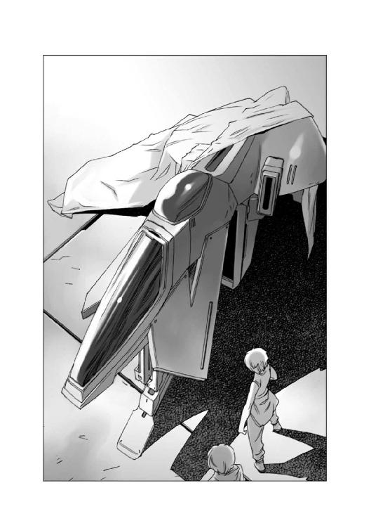
サイラスは、笑いながら首を振った。
「サルベージじゃないんです。こいつは軍からの正式な払い下げなんですよ。武装を外して、高速連絡艇にする予定なんだそうです」
ハヤトは、目を輝かせた。
「親父さんの持ち物ってことは......値段が折り合えば譲ってもらえるのか？」
「ええ、値段が折り合えば......」
ハヤトの言葉を聞いていたハインツが驚いたように言った。
「おい！ そんな金がどこにあると思ってるんだ！」
「手持ちに無いだけだろう？ 支払いを待ってもらえばいい。分割払いでもなんでも方法はあるじゃないか！ 今、押さえておかないと、もう手に入らないかもしれないぞ！」
「支払いの問題だけじゃない！ こんな物を買ってどうする？ 何に使うんだ？」
ハヤトは、胸を張って答えた。
「銀星号に搭載するに決まってるじゃないか！ こいつがあれば、海賊なんか怖くない！ 銀星号のコンテナ一個を格納庫にして、ブリッジから連絡通路をつけて、乗り込めるようにしておけば、いざというときに戦えるじゃないか！」
ハインツはやれやれ、という顔になって首を振った。
「お前は、アイス・ジョーの話を忘れたのか？ 武装は許されないんだぞ！ 機動戦闘艇を搭載するということは武装と変わらないんだ！ そんなことをやれば星間警察が喜び勇んで俺たちを逮捕しに来るに決まってる！」
ハヤトは、右手の握りこぶしを左手の手のひらに当てて悔しそうに言った。
「そうか、そうだったよな......でも、こいつがあれば、今回の仕事は絶対にうまくいくんだ！ 惑星ホルストまで無事に荷物を届けられるんだぜ？ 食い物が無くて苦しんでる人たちに、食い物を届けることができるんだ......くそ！ なんとかならないのかな......」
「どうにもならないんだ......仕方ない、あきらめるんだ」
ハインツが、そう言って静かに首を振ったとき、サイラスが叫ぶように言った。
「いい手があります！ この機動戦闘艇を積荷ってことにしたらどうでしょう？」
「積荷だって？」
驚くハインツとハヤトに向かって、サイラスは両手を広げて説明し始めた。
「そうですよ！ この機動戦闘艇は、銀星号の装備じゃないってことにすればいいんです！ これは荷物なんですよ！ エルノリク男爵領行政府から頼まれて買い付けた食料や日用品と同じように、戦闘艇を一隻買い付けるように頼まれて、買い込んだものを運んでるんだ......ってことにすればいいんじゃないんですか？」
ハヤトとハインツは顔を見合わせて同時に叫んだ。
「その手があった！」
急いでリムジン商会の事務所に戻って来たハヤトたちが、ポポイ社長に、話を持ちかけようとしたとき、ハインツの汎用端末から、クララの声がした。
『ハインツ航海長！ 通信が入っております......帝国軍情報部のアイシング大佐からです！』
ハインツは、あわてて懐から汎用端末を取り出しながらつぶやいた。
「アイス・ジョーが......俺に何の用なんだろう？」
「もしかして、星間警察が動き出したのかな？」
「わからん、とにかく話を聞こう......」
ハインツがそう言って受信キーを押すと、汎用端末の通信モニターに、見覚えのある白髪の初老の男が立ち上がった。
男は、ハインツの顔を見ると、にやっと笑って言った。
『やあ、ハインツ君、どうだね？ ジャンクスターで、出物は見つかったかね？』
ハインツは目を丸くした。
「どうしてそれを！」
『まあな、蛇の道は蛇というか、なんというか、ジャンクスターには、中古武器を求めてブラックマーケットの連中がやってきたり、廃棄された装備の横流しを企む連中がやってきたり、まあいろいろあるので、我々の監視網もしっかり張ってあるのだ......』
「我々は結局あなたの手のひらで踊っているだけに過ぎないってことですか......」
自嘲するように笑って肩をすくめたハインツを見て、アイシング大佐は、なだめるように言った。
『そんな顔をするな。情報機関というのは、本来、姿無きを見て音無きを聞くというパッシヴに徹するものでなくてはならんのだ。そしてそうやって収集した情報を、わざとリークすることによって、不穏な連中が企んでいる計画を事前に潰す......実行に移す前にあきらめさせるのが我々の仕事なのだよ......』
ハインツは、はっとしたように顔を上げた。
「もしかして......俺たちの立てた計画に......なにか問題でも？」
アイシング大佐はうなずいた。
『そのとおりだ。帝国の法律では、武器を購入し、領地の外に持ち出すとき、及び運搬するときは、税関の許可が必要なのだが、知っておったかね？』
ハインツとハヤトは、お互いの顔を見合わせた後で、青ざめた顔で首を振った。
「......それは......知りませんでした......」
『無許可で武器を搬送するのは規則違反となる。星間警察の取り締まりの対象だ。そいつを警告しておこうと思っただけだ』
「そうだったんですか......」
ハインツは唇を嚙んだ後で、はっとしたように顔を上げて、アイシング大佐に一礼した。
「わざわざご連絡をいただきましてありがとうございました！」
アイシング大佐は、無言のまま、右手をひょいと上げて挨拶を返し通信を切った。
待ち受け画面に戻った通信モニターを前にして、ハヤトとハインツは顔を見合わせてどちらともなくため息をついた。
「どうする？」
「どうするって言っても......知らずに航海に出て、星間警察に逮捕されるのだけは免れることはできたけど。問題は解決したわけじゃないからなあ......」
考え込むハインツを見て、ハヤトが言った。
「今からじゃあ間に合わないかもしれないけど、ダメでもともとだ。許可申請してみようぜ」ハインツは考え込んだ後で首を振った。
「......エルノリク星系は遠いんだ......辺境空域の入り口のゲートまで、五つのゲートをつかわなくちゃならない。そこまで行くのに五日間。そこから先はゲートがないから、Ｎフィールド航法で進まなくちゃならない。Ｎフィールド航法の巡航速度は光速の十倍だが、それでも一光年進むのに三十六日かかる計算だ。光速の約十四倍の最大速度を出して、やっと三週間......その間のゲートの待ち時間とかいろいろなタイトなスケジュールをギリギリで組み合わせて、なんとか四週間という数字を出したんだ。ここでもし、一日延ばしたらスケジュールがガタガタになる。下手をすると二ヶ月以上かかるかもしれないんだ......」
「二ヶ月か......それはキツイだろうな......」
眉をひそめたハヤトを見て、ハインツは決断したように言った。
「急ぎたいのはやまやまだが、あの機動戦闘艇が無いままエルノリク星系に行くのは、いくらなんでもリスクが大きすぎる......お前の言うとおり、ダメモトで運搬の許可を税関に出してもらうとするか......」
ハインツは、顔を上げてクララに言った。
「ベルナルト星系の税関に申請を出してくれ！ 機動戦闘艇の輸出と運搬の許可申請だ！ なるべく早く出してもらうように頼んでみてくれないか？」
うなずこうとしたクララは、一瞬怪訝な顔をした後で目を見開いた。
『変です......税関の受付窓口記録によると、銀星号からの申請は、すでに受付済みで......許可証も発行済みだそうです！ 許可データと認証キーが送られて来ました」
ハインツは目を見開いた。
「本当か？」
「すげえ！ やったぞ！ これであの機動戦闘艇を積み込めるじゃないか！」
素直に喜ぶハヤトを制してハインツが言った。
「喜ぶのは、ちょっと待て......申請者を確認してからだ......何かの罠かもしれない......」
クララの顔が輝いた。
『申請者が判明しました......帝国情報部のアイシング大佐です！ 二日前にアイシング大佐から許可申請が出されています！」
「アイシング大佐だって？」
ハヤトとハインツは再び顔を見合わせた。
「あの爺さんが......やってくれていたのか！」
「ちくしょう、粋な計らいしてくれるぜ！」
ハインツは汎用端末を胸ポケットに仕舞うと、にやっと笑った。
「さーて、ポポイ社長から、あの機動戦闘艇を買い取る交渉を始めるとするか......」
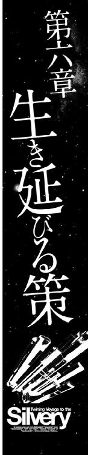
銀星号がベルナルト星系にあるジャンクスターを出発したその頃。
そこから遠く離れた銀河辺境域のエルノリク男爵領行政府の会議室では、レイラを筆頭とするエルノリク男爵領行政府の幹部たちが集まって、緊急会議が開かれていた。
この日の会議の冒頭は、いつものように総務部長のモウファスではなく、保安局の局長の報告から始まった。
保安局の局長は、五十代後半の白髪で鋭い目をした細身の男だった。
組織の長として、大勢の部下の前で話した経験を持つ者に特有の、よく通る声で、局長は話し始めた。
「皆様のお手元にある報告書のとおり、今回のプラント爆破の犯行グループは全部で十二名、主犯格の男は、ヒッサー・ゴズモグ三十八歳。この男は以前、マルス家の経営するジグラットグループの本社に勤務経験のある者でした。資材の横流しなどの不正を行なった上司に連座してジグラットグループを退社させられ、その後、このエルノリク鉱山会社に就職し、労務管理を行なっていた者です。
この者の自宅などを捜索した結果、数ヶ月前より、ジグラットグループの企業リサーチ部門の者と接触していた事が判明しました......本人は、まだ完全に自供したわけではありませんが、おそらくジグラットグループへの復職を条件に、破壊工作を持ちかけられていたものと思われます......」
レイラがため息をついた。
「獅子身中の虫がいた、というわけですね......しかし、彼の仕事は労務管理、いわばデスクワークです。どうやって、プラントの給水施設を爆破できたのですか？」
保安局の局長は、小さくうなずくと、手に持った報告書の二枚目を提示して見せた。
「このヒッサーという男は、この惑星ホルストが封鎖され、配給が始まるのと同時に行動を起こしたようです。彼は、レイラ様が、シティの住民に呼びかけた内容を逆手に取って、鉱山で働いている技術者の中で、配給制度に不満を持つ者に近づき、今回の計画を持ちかけたのです。
食用藻類の培養プラントが諸悪の根源だ。食用藻類のプラントがあるかぎり、いつまでたってもこの苦しい生活が続く。あれを破壊すれば、飢餓状態がひどくなって、体力の無い者は死んでいくだろう。だが、死者が出れば、このエルノリク男爵領は帝国に接収され、救いが訪れる。苦しみを先延ばしにするより、一気に終わらせたほうが、人々のためだ......と」
会議室に憤りのつぶやきが満ちた。
「馬鹿な！ 餓死者が出るという事の意味がわかっていないのか！」
「わかっているわけがない！ 餓死者が出るほどに追い詰められれば、もはや秩序も何も無い、無法地帯になるだろう、それがどういうことなのか、わかっていればこんな馬鹿な真似はしない！」
レイラが、静かに言った。
「そして、たとえ餓死者が出ても、この封鎖が解かれる保証はどこにもない、ということもわかっていないのでしょう......一体何人の死者が出れば、この封鎖が終わるのか、五人か、十人か、それとも百人か千人か......もしかしたら、マルス家は、シティの住民五万五千人すべてが死ぬまで封鎖を続けるかもしれません。
きっと、彼らは、自分たちだけは大丈夫だと思っていたのでしょう......餓えて死ぬのは、どこかの誰かで、自分や自分の身内ではないと考えていたに違いありません......」
レイラはそこで言葉を切って、顔を上げた。
「しかし、今回の会議は犯人を責めることが目的ではありません。私たちが、この先どうやって生き延びるのか、それを決める会議です。銀星号は、私たちを救う最後の希望です。しかし、銀星号が無事にたどり着けるかどうかそれはわかりません。私たちは、ここに座ってただ、救いが来るのを待ち続け、祈り続けているわけにはいかないのです！ 何か手立ては無いのか、それを皆さんにお聞きしたいのです！」
会議室は沈黙に包まれた。
誰もが、難しい顔をして考え込む中で、一人の男が手を挙げた。
「この氷と雪に閉ざされた冬の惑星ホルストでも、一つだけ......これは非常に危険な手段ですが、採取できる食糧があります」
驚きの声を上げた人々で一気にざわついた会議室の中に、レイラの声が飛んだ。
「採取できる食糧？ そんなものがあるのですか？」
手を挙げたのは、がっしりした体格の髭面の三十代半ばの男だった。
「私は、行政府で環境局の調査員をしているナビ・プロペットと申します。私は職務の関係で何度も厳冬期の惑星ホルストの生態系を調査したことがありますが、五年前の調査のとき、氷結した海の中を探査した際に、そこで甲殻類型の大型プランクトン......いわゆるオキアミと呼ばれるものの一種が群棲する海域を発見しました。もし、このオキアミを大量に捕獲できれば、食糧になるのではないかと思われます......」
「そんな素晴らしい食糧があるということを、なぜ、あなたは今まで黙っていたのですか！」
レイラの声には詰問するような調子が含まれていたが、それは無理も無かった。
最初からそれを知っていれば、今までのような苦労はせずに済んだからだ。
ナビ、という男は、難しい表情を崩さぬまま答えた。
「私は、確かに海の中にオキアミが棲息している、という事実は知っておりました。しかし、厳冬期に、それを大量に捕獲する事の困難さも充分に知っているからです......」
そして、ナビは自分の両手のひらを目の前で広げて見せた。
「私のこの手の指はすべてバイオノイドの義指です......私は、五年前、そのオキアミの存在を知った厳冬期探査旅行中に、凍傷ですべての指を喪ったのです。そのときの調査は、厳重な装備と最新鋭の探査地上車を使ったものでした。しかし、それだけの装備を以てしても、私のように凍傷を負った者が続出したのです......」
ナビは、静まり返った会議室の中の人々を見回した。
「それほど厳しい環境の中で、シティの人口を賄うほどの量のオキアミを捕獲するということが、どれほど大変なことなのか、おわかりですか？ 厳冬期用の地上車の数は限られています。なんとか海までたどり着いたとしても、そこでは厚く張った氷を割って、海の中に網を入れるという作業が待っています。この時季、海洋部では強力な低気圧が発生します。零下五十度以下の風速四十メートル近い風が吹き荒れる中でその作業をやらねばならないのです。そして、シティの住民を賄うだけの量ともなれば、数百トンは必要です。捕獲するだけではありません。それだけの量のオキアミを、再びシティまで持ち帰らねばならないのです......その苦労がどんなものか、私は知っています。だからこそ、私はそのことを軽々しく口に出来なかったのです」
ナビが発言を終えると、会議室は重苦しい沈黙に包まれた。
その沈黙を破ったのはレイラだった。
「想像を絶する苦難であることはわかります......いえ、私にはわからないことなのかもしれません。しかし、そこに望みがあるのなら、それに挑戦するべきではないでしょうか？
確かに、一度に数百トンもの量のオキアミを持ち帰ることは難しいでしょう、しかし、一回に大量に運ぶのではなく数トンずつ、何回かに分けて運ぶことが出来れば良いのではないでしょうか？」
ナビは難しい顔のまま答えた。
「今、ドームの外はブリザードが荒れ狂っています。ドームの外に出る。ただそれだけで生命の危険に晒されるわけです。その中を海まで何度も往復することのリスクを、どう考えるかだと思います......一回で大量のオキアミを捕獲する方がリスクが少なくて済むのか、それとも何度かに分けて捕獲する方がリスクが少なくて済むのか......それは判断がつきません」
レイラは、しばらく黙ったまま考え込んでいたが、やがて、何かを決意したように顔を上げて、きっぱりと言った。
「オキアミを捕獲するための作業に取り掛かりましょう。準備のための時間も設備もありませんが、あきらめてしまうわけにはいきません。この件は総務部長のモウファス殿に一任します。一刻も早く、プロジェクトを立ち上げて、地上車と厳冬期の野外活動が可能な電熱服などの装備を集めて下さい！」
「かしこまりました......」
そう言って一礼したモウファスを見て、レイラは気がついたように付け足した。
「......それと......この任務は志願者を募って下さい。危険性を充分説明した上で、志願者の意志を確認してください。任務として命じるにはあまりにも危険すぎます......」
その、レイラの言葉を聞いたナビがゆっくりと手を挙げた。
「では、私が志願者一号ですな......」
驚くレイラを見て、ナビは笑った。
「経験者が必要でしょう？ ならば私のほかに適任者はいません......あ、そうそう、危険性の説明は私には不要です、念のため」
レイラはそのとき、会議室の空気がふわっと溶けたような気がした。
過酷な任務と知りつつ、志願したナビを見て、レイラは思わず頭を下げた。
「ありがとうございます......皆さんのお力が無ければ、到底この領地を経営する事は出来なかったでしょう......未熟な私を支えていただいた皆さんに、私は感謝の言葉以外に報いるものを持っておりません......申し訳ありません......」
ナビは笑いながら首を振った。
「いや、レイラ様。あなたが持っているのは、感謝の言葉だけではありません。あなたにはもう一つ持っているものがあります......笑顔ですよ。あなたの笑顔があれば、我々は希望が持てます。希望を持って働く事が出来ます......ですから、あんまり自分を責めないでいただきたい」
「はい......」
レイラは笑ってみせた。
しかし、その微笑みの上にいくつもの涙がこぼれるのを、止める事ができなかった。
その日から三日が過ぎた日の夕方。
シティの中央公園と緑化帯の開墾を終えたウーフたちは、中央公園の管理棟にあるシャワールームで、汗と泥に汚れた身体をお湯で洗い流していた。
藻類の培養プラントが破壊され、生産量が落ちた分、シティの熱量が回復したのだろう、シャワーから出るお湯の温度は、しっかりと熱く、使い慣れない筋肉を使った後の身体に心地よかった。
着換えを終えてシャワールームの外にある控え室に入ったウーフが、ボトルに入った飲料水を飲んで、ほっ、とため息をついたとき、シャワールームから出て来た、一人のクラスメイトが、忌々しげにロッカーを蹴飛ばして叫んだ。
「馬鹿馬鹿しい！ やってられるか！ こんな無駄な事！ 毎日毎日、手に肉刺作って地面を耕して！ 作物植えたって、食える頃まで生きていられるかどうかも分からないってのによ！ 何もしないで、とっとと死人が出たほうが俺たちは楽になるんだ！」
その言葉を聞いていた委員長のゼットが、たしなめるように言った。
「おい、ダルー、死人が出ればいいってのは無いだろう。食い物が無くて死ぬのは、子供とかお年寄りとか、そういった弱い人たちなんだぞ」
ダルーと呼ばれたクラスメイトは、憎々しげに答えた。
「弱いヤツこそ先に死ねばいいんだよ！ そうすれば帝国がやってきて俺たちは助かるんだ！ 俺は間違っちゃいないぞ、あの貴族のお嬢様の馬鹿な意地で、これ以上ひどい目に遭うのはまっぴらごめんだ！」
クラスの世話役であるゼットは、なだめるように言った。
「でもさ、銀星号が向かっているじゃないか、あの船が入港すれば、俺たちは助かるんだ」
ダルーは、ゼットの言葉を鼻で笑った。
「ふん、馬鹿じゃないのか？ お前、そんなことを信じてるのかよ。来るもんか！ 今までの連絡船だって、全部失敗したんだぞ！」
そして、ダルーは、控え室にいたクラスメイトを見回して、勝ち誇ったように言った。
「俺の親父は、今、エルノリク男爵家を相手にして訴訟を起こす用意をしているんだ！ 裁判を起こせば絶対に勝てる！ シリリウム鉱山があるから、結構な額を取れる、って親父が言っていたぜ。今なら原告団の中に入れてやってもいいぜ。どうだ、俺と一緒にあの貴族の馬鹿女から賠償金取らないか？」
ダルーの言葉を聞いたクラスメイトの反応はまちまちだった。
顔に嫌悪の表情を浮かべる者もいれば、金が取れると聞いて、下卑た笑いを浮かべる者もいた。
控え室の空気をこれ以上吸いたくなくなったウーフが、控え室から出ようとしたとき、後ろでチャニの声がした。
「ウーフ！ あれって、本当なの？ あんたがオキアミ捕獲部隊に志願したって！」
ウーフは、振り向くと、小さくうなずいた。
「ああ、本当だ......」
チャニは目を見開いた。
「なんで？ なんでそんな危険なことに志願したのよ！ あなたはまだ十七歳じゃない！ ハイスクールの学生なのよ！ 危険な仕事はちゃんとした大人に任せておけばいいのよ！ あんたなんか志願したって足手まといになるに決まってるじゃない！」
チャニの言葉を聞いたのだろう、控え室の中が静まり返った。
その中に、ウーフの答えが響いた。
「もし、銀星号が来なかったら、食糧不足は決定的だ......餓えれば、体力の弱い人から死んでいくんだ......お前のおばあさんや弟や妹が、真っ先に犠牲になる。
俺は決めたんだ。お前が困ったり悲しんだりする顔は見たくないって......だから俺は行く。ここで行政府の悪口を言っていても、賠償金をふんだくる算段をしていても、そんなのは何にもならないからな......それに、お前が前に言ったじゃないか、できる人ができない人のために何かをするのは義務だって」
「それはそうだけど......だけど......」
チャニは、青ざめた顔のままぽろぽろと、涙をこぼした。
それを見ていたダルーが、吐き捨てるように言った。
「ふん、とんだヒーローきどりの三文芝居だぜ......なあ、ウーフ、がんばって冬の海でオキアミ捕って来てくれよな。どうせ、俺は、何もできない人間だからよ、家の中で寝転がってお前がオキアミ捕ってくるのを待ってることしか出来ないんだ......悪く思うなよ」
ウーフは、一瞬殴りかかろうかと思った。しかし、心の中でもう一人の自分がそれを抑えた。
......やめろ！ ここでこいつを殴れば俺もこいつと同じ場所に堕ちることになる！ こいつはそれを望んでいるんだ！
こいつは俺に嫉妬している。自分には出来ない事をやってのけようとする俺に嫉妬しているんだ。
だから、俺を怒らせて自分と同じ場所に引きずりおろそうとしているんだ......だから絶対に殴っちゃいけない。それをやれば、こいつの思う壺だ。
こういうときは、笑ってやるのが一番いい。それが、こいつにとっては一番の痛手だ。
ウーフは静かに笑って答えた。
「わかったよダルー。お前の分もしっかりオキアミを捕ってきてやる。何にも出来ない人間に、出来る人間がなにかをしてやるのは義務だからな。お前は家で寝転がって待っていてくれよ」
ダルーの顔色が変わった。
「なんだと？ てめえ！ 俺を馬鹿にするのか！」
ウーフは表情も変えずに答えた。
「なんで怒るんだ？ 俺は何も言ってないぞ。全部お前が自分で言ったことじゃないか、違うか？」
控え室の中にクラスメイトたちの笑い声が満ちた。それはダルーに向けた嘲笑の色が混じった笑いだった。
目に憎しみの色を浮かべたまま黙り込んだダルーを残して、ウーフは控え室から外に出た。ウーフの目の前に、芝生を剝がされて畑に姿を変えた緑地公園の光景が広がっていた。
......この緑地公園の芝生広場を全部畑に変えても、きっとこのシティに住む人全員を養う事はできないだろう。食糧は不足して......そして、間違いなく餓死者が出るだろう。
でも、だから無駄だって、誰が言えるんだ？ 生き延びるために努力する事を無駄だとか、意味が無いとか、誰が言えるんだ？
どうせ死ぬから無駄だって言うなら、生きている理由が無いのと同じだ。
そのとき、ウーフの後ろに誰かが立った。
ふわっと、安い石鹼の香りが匂った。
「チャニか？」
ウーフは、振り返らずに聞いた。
「うん......控え室で、ダルーが言っているウーフの悪口を聞きたくなかったから、出て来たの......」
ウーフは笑った。
「そうか、ダルーのヤツが、俺の悪口を言っていたか......そうだろうな。ダルーから見れば俺は、エエカッコシイの、どうにも鼻持ちならない人間にしか見えないだろう......」
チャニは、悲しそうに答えた。
「うん......そして、クラスのみんなも、半分はダルーの言う事を認めてる......だって、私だってそう思うよ？ なんで、ウーフが行かなくちゃならないの？ 私にはわかんない！ そんな危険なことは、誰か他の人に任せておけばいいのにって......」
ウーフは、チャニに背を向けたまま答えた。
「うん......俺もそう思ってた。めんどくさいことや、危険なことは、みんな誰かに任せておけばいいんだ、そんなことは俺がやることじゃない、俺には関係ない......ってね。
でも......この間から、ずっと考えていたんだ。その、他の誰かって、誰なんだろう？ そんなヤツいるのか？ って......そして、気がついたんだ。その他の誰かって。誰なのか」
ウーフは、ゆっくりと振り向いて、そして笑った。
「それは......俺なんだよ」
「ウーフ！」
泣きそうな顔になったチャニを見て、ウーフは首を振った。
「そんな顔するなよ。めんどくさくても、危険でも、誰かがそれをやらなきゃいけないんだ。それに気がついた人間が、その誰かになるんだ......そうやって、この世の中は動いていくんだ。それに俺は気がついた......だから俺がやるんだ」
チャニは泣きながら首を振った。
「あんたは馬鹿だよ、ウーフ！ そんなことやったって、誰も誉めてくれないんだよ。みんなが馬鹿にするんだよ！ 私だって誉めない！ カッコイイなんて言わない！ 見送りもしないし、帰って来たって迎えになんか行かないからね！」
ウーフは笑った。
「お前の言ってること......俺の母親みたいだ」
目を見開いて、黙り込んだチャニを見て、ウーフは静かに言った。
「俺が志願するって言ったら、母親は泣いた。親父は黙ってた。ずっと、黙ってて、最後に、そうか......って言って承諾書にサインしてくれた......俺は嬉しかった。他の誰に認められなくても......俺の親父は俺を認めてくれたんだ」
チャニは何も言わなかった。ただ、涙を一杯にためた目でウーフをじっと見つめ、そして声に出さない言葉をつぶやくと、そのままくるりと背を向けて走り去って行った。
......あのとき、チャニは俺に何を言おうとしたんだろう。
ウーフの回想は、右耳の中にある骨伝導イヤホンから流れてくる、パリパリという空電の雑音で途切れた。
ウーフは、今、オキアミを採取するために、凍結した海に向かって進む、捕獲部隊の地上車コンボイの先頭車両の中にいた。
ウーフが乗っている、この大型地上車は、全長八十メートルに及ぶ大きなもので、狭い地峡部を通り抜けやすくするために中央にジョイントを持つ、連接構造と呼ばれる構造を持っている。
惑星ホルストの凍りついた海の上を進むために、車輪ではなく幅の広いキャタピラを備えており、その踏面には、鋭いスパイクエッジが取り付けられている。
パワーユニットは強力なモーターであり、このモーターへは、後部の車体に搭載した小型の核融合エンジンと発電ユニットを組み合わせたパワーユニットから給電されている。
内燃機関特有のエンジン音こそしないものの、車内には大型地上車のキャタピラのスパイクエッジが氷を嚙むバリバリという音と、各部の動力機構のうなる音、そして、それすらも打ち消すほどに吹きすさぶ吹雪の音が入り混じった、腹の底に響いてくる低い音が充満していた。
......最初の頃は、耳栓をしていても、この振動と低周波で眠れなかったけど......三日もしないうちに、寝られるようになった。
人間は環境に慣れる生き物だっていう事なのかもしれないけど、どっちかと言うと寝ないと体が保たないからなのかもしれないな。
骨伝導イヤホンに電波が入ってくるのと同時に、ウーフの目の前の壁面に取り付けられた小型のモニターの中に、何かが映った。
それは、白い点々が無数に舞うその向こう側に、オレンジ色の物体が、いくつも動いている映像だった。
......これは......何の映像だろう？
しばらく目を凝らしていたウーフは、目を見開いた。
......あ、そうか、このオレンジ色は地上車の車体の外部塗装色だ！ これは、俺の乗っている先頭車の後部モニターに映っている、後ろに続く他の地上車の映像なんだ。
背の低い地上車が連なって、ゆっくりと進んで来る光景は、巨大な一匹のムカデが地を這っているように見えた。
そのとき、ウーフの右耳の中にある骨伝導イヤホンから、このオキアミ捕獲部隊の総指揮官である、ナビ・プロペットの声が聞こえてきた。
『車内クルーに告げる。間もなく目的地のヤマト雪原に到着する。到着したら最終点検を行い、小休止の後に、ベースキャンプを設営する。各自担当部署のチェックリストを用意しておくように......それと......目的地に着いたら、乗組員に温かい飲み物を配れるように用意しておいてくれ、以上だ』
ナビの放送を聴いていたウーフは、あわてて待機スペースの隣にあるギャレーに飛び込んだ。
人数分のカップを戸棚の中から取り出すと、手早くトレイの中に並べていく。
ギャレーの壁に貼ってある、乗務員の名前と、飲み物の好みの一覧表を見て、自動調理器の微調整キーを押しながらウーフは思った。
......俺に出来る事は、こういった雑用だけだ。この酷寒の中、作業服を着て外に出て作業するわけじゃない。だけど、俺がいなけりゃその雑用は出来ないんだ、だから俺が必要なんだ、とナビさんは言ってくれた。志願してくれた人間は、年齢も経験も関係ない、みんな仲間なんだって......。
だから、俺は、俺に出来ることをやろう、俺に出来る精一杯のことを......。
ウーフが地上車の車内にあるギャレーで、乗組員のためにコーヒーを淹れ始めた頃。
地上車の上部構造物の中にある通信指揮室に座っていた、オキアミ捕獲部隊の部隊長であるナビが、手元の外気温センサーに視線を投げた。
外気温はマイナス五十度を表示していた。
ナビは、後続車の様子を映し出している外部モニターの映像を見ながら思った。
......シティを出てから一週間か。
ここまでこのコンボイが一台も脱落せずにやって来られたのは、奇跡のようなものだ。だが、本当の仕事はこれからだ。
俺たちには、これから、足の下にある分厚い氷を割ってそこに網を入れ、オキアミを取るという仕事が待っている。
マイナス五十度の中では、宇宙服改造の耐寒作業服を着ていても、車外活動は三十分が限度だな。
ましてや、この作戦に従事しているのは、半分以上が素人だ。無理はできない。休み休み、機械と外気の寒さに習熟度を上げていくしかないだろう。
ＧＰＳ装置の数値を見たナビは、小さくうなずくと、手元にある通信装置のスイッチを入れて、インカムで後続の車両に指示を出し始めた。
「こちらナビ。各車に連絡する。この先に、少し窪地になった平らな場所がある。そこが目的地のヤマト雪原だ。到着次第現地にベースキャンプを設営する。
各車とも地上作業員用の作業服の準備と点検を怠るな。作業服のバッテリー残量及び保温装置の点検を忘れるな。大丈夫と思っても、もう一回念を押せ、マイナス四十度の低温下では金属は想像以上に脆くなっている。通信の輻輳を避けるために、各車からの音声での返信は求めない。確受信号のみを返信せよ」
ナビの前にある、各車の状態をモニター画面に、受信応答を意味するサインがいくつも点灯し始め、やがてすべてのサインが点灯して一つのグリーンのサインに戻った。
ナビは小さくうなずくと、前部監視モニターに目を凝らした。
吹きすさぶ地吹雪の向こうに、少し低くなった土地が見えた。
......あそこまでたどり着けば、とりあえず行程の半分は終わったってことだな。
ナビやウーフをはじめとする、百二十人の志願者たちを乗せた大型地上車の列は、地吹雪の舞う凍りついた海の上を、目的地目指してゆっくりと進んでいた。
ベースキャンプの設営はその日のうちに始まった。
風速三十メートル近い雪交じりの強風が吹きつける中で、地上作業服を着込んだ作業員たちが、地上車のカーゴスペースに折りたたまれて収納されていたアンカーボルトを打ち込むためのパイルアームを操作して、氷原深くアンカーボルトを打ち込んでいく。
直径六十センチはある、この太いボルトが、停車している地上車の上に広げる背の低いエアドームテントを地上にしっかりつなぎとめるのだ。
エアドームテントは普通の建造物のような支柱を持たない。変形して風を逃がすという柔軟な構造によって、強風でも耐える事ができるのだ。
作業服を着たナビが、テントの端を押さえている作業員たちの陣頭指揮を執っていた。
「アンカーボルトの風上側からテントを広げる！ 広げるのは一発勝負だ！ テントの周囲を強化セルムワイヤーでアンカーボルトに固定して一気に展帳するぞ！ 下手に近づいたり、つかんだりするな！ ワイヤーの巻き取りが終わらないうちに近づけば、強風に煽られたテントが暴れて怪我をするぞ！」
ナビの指示が飛ぶ中で、エアドームテントの一方の縁を、アンカーボルトに固定する作業が終わった。
支柱となるエアチューブに注入するガスボンベに取り付いている作業班を見て、ナビは右手を上げた。
「よし、展帳！」
ばしゅうううう！
高圧ガスボンベのコックが開けられ、ガスが放出される音と共に、折りたたまれていた青いドームテントの中を走るいくつものリブチューブの中に、一気にガスが送り込まれた。
丸まっていたドームテントが、次々に広がって、円形に停車している地上車を一台ずつ包んでいく。
だが、次の瞬間。そのうちのいくつかが、いきなりふわっと持ち上がった。
風に大きく煽られたエアドームは、地上に打ち込まれたアンカーボルトを支点にして暴れ始めた。
ナビの事前の注意を聞き流していたのだろう。地上車の脇で、不用意に立っていた二人の作業員に、風で振られ暴れたドームテントが当たった。
一人は、そのまま氷原に叩きつけられ、そして、もう一人は、自分の目の前に振られてきたテントの端を、思わずつかんで押し戻そうとした。
しかし、その男がテントの端をつかんだとたん、さらなる強風が吹きつけた。
テントが舞い上がるのと同時に、男は、まるで丸めたティッシュペーパーを空中に投げ上げたときのように、軽々と宙を舞った。
風の音が、音を消し去ったのだろう。その作業員は無声映画のワンシーンのように、無音のままを氷原に叩きつけられた。
「医療要員を呼べ！」
「担架だ！ 担架を持ってこい！」
「その前に、固定作業班は急いでウインチを回せ！ 暴れるテントを押さえ込まなきゃ近づけん！」
ウインチがうなりを上げて、ドームテントの周囲を地面に押さえ込み始めた。
地上車の中に運び込まれていく作業員を見送ったナビは、胸の中でつぶやいた。
......奇跡は続かない。大自然はお前らを歓迎なんかしないぞ、ということか......。
次の日から、本格的なオキアミ捕獲が始まった。
ベースキャンプから少し離れた場所の海面の氷を数箇所で爆破し、穴を開け、そこから海中に小型無人潜水艇が引っ張る網を入れ、氷の穴から穴まで潜水艇で網を引き、海中に群棲しているオキアミを捕獲するのである。
そのアクシデントが発生したのは、海面に穴を開けるために行なわれた爆破の後だった。
氷の上に円形に配置された指向性爆薬が爆発し、四メートル近い厚さの氷が破砕された後、二台の建設用の汎用作業車が近づいて、破砕された氷を取り除くための作業アームを伸ばしたとき。一台の作業車の下にあった厚い氷が、金属音にも似た軋み音を立て始めた。
「逃げろ！ 氷が動くぞ！」
その音を聞いたナビが叫ぶのと、作業車の下にあった厚い氷が一気に崩れ落ちるのは同時だった。
アームを伸ばしていた作業車は、バランスを崩して、そのまま破砕された氷が漂う海面に転落した。
だが、海面には、取り除かれる前の厚い氷の塊が浮かんでおり、作業車はかろうじてその上に引っかかった状態で停止した。
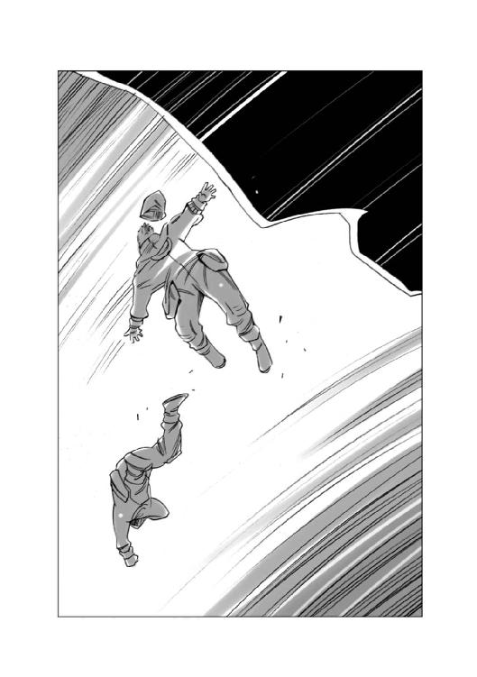
割れた氷がぶつかり合うキイキイともギシギシとも聞こえる音が響き渡る中で、もう一台の作業車が工作用のアームを伸ばして、引っかかった作業車を支えようとするのを見て、ナビが叫んだ。
「無駄だ！ 作業車はあきらめろ！ アームは操縦者の救助のために使え！」
ナビの指示を聞いた作業車のオペレーターは、アームをコックピットの脇に伸ばした。
転落した作業車の操縦者が、コックピットのドアを開け、伸ばしたアームの上に這い出したその直後。
転落した作業車の下にあった氷の塊が、ギシギシという軋み音を立てて動き出し、引っかかっていた作業車はそのままずるずると滑り降りて、氷の隙間から海面に転落していった。
救出された操縦者の下に他の作業員が駆け寄るのを見て、ナビが、大きくため息をついた。
......あのまま海面に転落すれば、まず助からなかっただろう......なんとか死人は出さずに済んだ......だが、気を抜けば、間違いなく死人が出る......いや、気を抜かなくとも、ほんの少しのミスや機械の故障でも、死人が出るだろう。
車外作業の際の作業服のチェックを確実にするように、繰り返し繰り返し指示するしかないな。
その繰り返しがマンネリ化を呼ぶ、ということはわかっている。だが、それ以外に有効な方法は無い。
ナビは、現場にいた作業責任者たちを呼んで、指示を与えた。
「作業車を一台失ったことで、作業の進捗状況に変更が生じた。作業員を長時間外で待機させるな。作業を終えたらすぐに地上車内に戻して、そこで待機させてくれ。この極低温の中では、ただ立っているだけでもストレスが蓄積するからな......」
「わかりました。作業工程をプランＢに差し替え、シフトを変えます」
「潜航艇の組み立てが終わる前に、次の穴を開けるつもりでしたが、そっちは後回しにします」
「よろしく頼む」
ナビは、そう言うと小さく頭を下げた。
作業員たちに指示を与えるために去っていく責任者の背中を見送ったナビは、手元のモニターに映し出された作業工程と、従事する人員の一覧に視線を落とした。
......予定の工程から、約半日遅れ、負傷者数は十二人......うち重傷者二名、軽度の凍傷を負ったもの十名か。
作業を開始して二日目ですでに一割の負傷者を出したということか。このまま負傷者が増えれば、本来の作業員ではない、補助要員を作業に駆り出さなければならなくなるかもしれないな。
ナビは、汎用端末を持つ自分の指を見おろした。
......あのとき、作業服の末端の保温回路が接触不良を起こしていることをチェックしておけば、俺のこの指を喪わずに済んだ。
だが、チェックの時間がもったいないと思った俺は全身のチェックが終了する前に、作業服を着込んだ......。
マイナス五十度の気温の中で、指の感覚を失ったことに気づいたときは、もう手遅れだった。
......ここでは、生きる事それだけのために最大限の努力を続けなくてはならない。
そのことを本当に理解していない人間は、生きて帰ることは出来ないかもしれない。
最初のオキアミが水揚げされたのは、それから四日過ぎた日の昼過ぎだった。
無人潜水艇の引く網が、ついに海の中を回遊しているオキアミの群れを捉えたのだ。
網の中には、その重さと抵抗のために、無人潜水艇が、ほとんど前進できなくなるほどの量のオキアミが入っていた。
潜水艇のオペレーターから報告を聞いたナビの顔が、初めてほころんだ。
「そうか......やったな！ よし、あまり潜水艇に負荷をかけないでくれ。潜水艇の予備は一隻しかない。いざとなれば網を切り離して、その先のワイヤだけを穴のところまで持って来てくれ。あとは地上車のウインチで海面まで引き揚げればいい！」
作業員が固唾を吞んで見守る中で、地上車の強力ウインチが強化セルムワイヤーを巻き取ってゆくと、やがて、穴の中に、ピンク色の塊が浮かび上がった。
それは、網の中にびっしりと詰め込まれたオキアミの群れだった。
「やった！ 大漁だ！」
「見ろよ、網の中びっしりだ！ 十トン近くあるんじゃないのか？」
「この調子で、あと五、六回取れれば、ノルマ達成だな！」
喜びの声を上げる作業員たちの前に引き揚げられたオキアミの塊は、外気に触れるのと同時に、ピシピシという小さな音を立てて凍りつき始めた。
「急いで網から出せ！ 網のまま凍りつかれたら、後が厄介だ！」
作業員は、手に手にスコップを持って、凍り始めたオキアミの山に駆け寄った。
その中に、ウーフの姿もあった。
作業員の中に負傷者が続出したために、補助要員であるウーフも、車外での作業に駆り出されたのだ。
網の中で凍り始めたオキアミの塊をスコップで突き崩し、横付けされた貨物運搬用の地上車のバケットに投げ込むのが、ウーフたちの仕事だった。
ウーフの着ている宇宙服を改造した極低温屋外作業服は、全身に細い網のような保温用のチューブが張り巡らされており、そこに暖められたお湯を循環させる事で、体温を保つようになっている。
外気呼吸が可能な地表で使用するため、生命維持装置のほとんどが取り外され、軽量化されているとはいえ、本来は無重力の状態で使うものであるため、かなりの重量がある。
ウーフは、氷の上を一歩一歩踏みしめるように歩きながら、水揚げされたオキアミが積まれている場所に近づいて、それを見上げた。
氷塊は、すべてがピンク色の小さなエビで出来ていた。小さな黒い目が点々のように見える以外はすべてピンク一色だった。
ウーフは、思わずくんくんと空気の匂いを嗅いだ。
加温フィルターで暖められた氷点下四十度の外気には、ほとんど匂いはなかったが、それでもほんのりとエビの香りがした。
......最初の漁で、十トン近い水揚げがあったって聞いたけど、これだけの量が一回で捕れるなら、水産資源としてはかなり有望じゃないのかな？
その、ウーフの考えは共通のものだったのだろう。
オキアミを見ている作業員たちの表情は明るく、周囲には希望に満ちた空気が流れていた。地上車の荷台に、オキアミを積み込む作業は、三十分で交替するというシフトで行なわれていた。
一生懸命スコップを振るっていたウーフのイヤホンから、ナビの声が聞こえた。
『第一班、作業終了だ！ 待機用の地上車に戻れ。作業服を脱いで、一時間三十分の休憩に入れ！』
その指示を聞いたウーフは、スコップにつかまるようにして、額に滲んだ汗と、背中一面に汗で濡れたインナーの感触を感じながら、大きく息を吐いた。
......やっぱりきついや。保温用の作業服ってことは、体内の熱が逃げないってことだもんな。凍死か、さもなくば熱中症か、その二つしかないようなものだもんな。
ウーフはそんなことを考えながら、スコップを抱えて、自分の居住区のある地上車に戻った。
地上車の乗降ゲートは、宇宙船のエアロックのような気密二重構造になっていた。宇宙船の場合は真空の宇宙空間に船内の空気が抜けないように、気密構造になっているのだが、この地上車の場合は、人の乗り降りの際に車内の熱が逃げないようにするためだった。
大きく開いている地上車の外扉から、乗降ゲートの中に入ったウーフたちの目の前で、外側の分厚い断熱扉が閉まると、それと同時に、床の穴から、熱く乾燥した空気が噴出して来た。この暖房用の空気に湿気が含まれていた場合、外気温と同じ温度まで冷やされていた作業服はあっという間に霜で凍りついてしまうのだ。
乗降ゲート内の気温が、マイナス二十度まで上昇したことを確認した作業員の班長が、部下を見回して言った。
「ようし、作業服を脱いでもいいぞ！ 汗をかいているから、手早く脱いで、インナーのまま内扉を開けてそのままシャワー室に走れ！ もたもたすると、汗が全部凍っちまうからな！」ウーフは、他の作業員たちと同じように作業服を脱ぎ始めた。気密ジッパーを開けると、首筋から白い湯気が立ち昇るのがわかる。
汗まみれになった肌に空気が触れると、すうっと体温が下がっていく。
他の人たちのやり方を見よう見まねで、右手で左手の指先を持って、手袋を脱ぐように作業服の左の袖の中から腕を抜く。
作業服の手袋は袖と一体化しているのだ。
そして、右手を抜こうとして身体をひねったそのとき、ウーフの左足が、乗降ゲートの内壁に立てかけてあったスコップに当たり、スコップが、がらん！ と、音を立てて乗降ゲートの床に転がった。
「あ、いけね......」
ウーフは思わず、スコップを拾おうとして、素手になった左手を出した。
それをを見た班長が叫んだ。
「やめろ！ 素手で触るな！」
しかし、その叫びを聞くより早くウーフはスコップに触れていた。
次の瞬間。ウーフは、自分の左手の手のひらが、鋭い痛みと共に動かなくなったのに気がついた。
極低温になっていたスコップの柄に、手のひらが、ぴったりと貼り付いてしまったのだ。
驚いたウーフは、思い切り手を剝がそうとした。しかし、手のひらは全く動かない。
冷たさというより、痛み。それも鋭い痛みが手のひら全体から伝わってくる。
「メディック！ メディックを呼んでくれ！」
班長の声を聞いて、待機していた医師が、ゲートの中に飛び込んできた。
医師は、手に持ったスチームをウーフの指と手のひらの接触面に吹き付けて、ゆっくりと剝がし始めた。しかし、すぐに皮膚が破れて血が噴出した。
「くそ！ 表皮が凍結して脆くなっている！ しかしこのまま放置すれば表皮の下の真皮まで壊死してしまう......このまま剝がすぞ！ 麻酔だ！」
想像を絶する痛みの中にいたウーフの口に、酸素マスクのようなものが当てられた......と思った次の瞬間。ウーフの意識はすうっと消えていった。
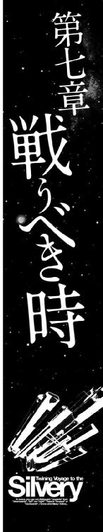
惑星ホルストの人々が、生き延びるために凍りついた海でオキアミを捕獲する、という危険な任務に挑んでいたその頃。
その、惑星ホルストに向かってジャンクスターのあるベルナルト星系から飛び立った銀星号は、最初にジャンプした中継ステーションで、星間警察の臨検を受けて停船していた。
停泊地で星間警察の大型警備艇二隻に挟まれたまま停船している銀星号のブリッジでは、制服のバッジの下に金色の星をいくつもつけた、四十歳くらいの星間警察の上級幹部とその部下が、ハインツの提出した、積荷に関するさまざまな許認可の書類を調べていた。
上級幹部が、苛立ちを隠せない様子で部下に聞いた。
「なんだと？ この船が輸送している武器は非合法品ではないのか？」
「はい、ボリス警視殿......積荷の機動戦闘艇などの武器はすべて正規の販売証明と輸出許可証を取得しております。ここにある書類には不備が全く見つかりません......」
「いや......しかし、私の得た情報では確かに......」
ボリス警視と呼ばれた男がそこまで言ったとき、ブリッジの入り口のドアが開いて、船外作業服を着て、ヘルメットを持ったハヤトと、星間警察のマークをつけた作業服を着て、同じようにヘルメットを抱えた警察官たちがブリッジの中に入って来た。
ボリス警視は、その警察官を見て、急かすように聞いた。
「おお、ホーク警部、どうだったね？ あの砲塔は......」
ホーク警部と呼ばれた警察官は、肩をすくめて首を振った。
「こちらのハヤト船長の申し立てたとおりです。あれは武器ではありません、砲塔自体は本物ですが、砲身は樹脂製で、砲塔自体も船体に接着剤で固定されているだけです」
「接着剤だと？」
目を丸くするボリス警視を見て、ホーク警部は、もう一度首を振って見せた。
「あれを武器と呼ぶなら、この銀星号の台所は、さながら大量破壊兵器倉庫でしょうな。ナイフやフォークの方がよっぽど武器として使えますよ......」
そのとき、今まで黙ったまま星間警察の指示に従っていたハインツが、にやっと笑って口を開いた。
「さて、星間警察中央本部のボリス警視殿......あなたの示した捜索差し押さえ令状にあった、『不法行為、武器密輸、無許可輸送、及びそれに関する一切の品物』という項目に該当するものが、この銀星号にございましたでしょうか？」
「う、うむ......」
ボリス警視は、憤懣やるかたない、という表情のまま、真っ赤な顔で口を結び、一言も答えなかった。
その顔を横で見ながら、ホーク警部は思った。
......やれやれ、中央本部の警視殿の面目丸つぶれだな。
所轄の部下を率いて、自信満々で銀星号に乗り込んできて、銀星号を武器密輸船呼ばわりして、ハヤト船長とハインツ航海長を密輸業者として逮捕する、とまで言っておきながら、いざ、調べてみると、法に触れる行為は一切無く、書類の不備すら無かったとなれば、振り上げた拳の行き先に困るのも無理は無い。
......願わくはその拳をこっちに向けないで欲しいものだな。
ホーク警部の冷ややかな目に気が付いたのだろう。ボリス警視は、じろりと、居並ぶ部下を見回した。
......くそ、予感的中か。
ボリス警視は、貨物コンテナの検査を担当した警察官を見据えて言った。
「積荷の機動戦闘艇や、他の部品はどんな状態だったのだ？ 使用可能な状態ならば......」
そこまで言ったとき、間髪をいれずに部下が答えた。
「完全に梱包された状態でありました！」
ボリス警視は、一瞬言葉に詰まったように、首を後ろに引いたあとで、小さく咳払いした。「ああ、はん。梱包はしっかりされていたとしてもだ、そんなものは後からどうにでもなる。つまりだ、積荷を武器として使用した後で、梱包しなおせば......」
「封印が施されておりました！ 武器輸出を承認したジグラット星系政府の関税局の封印であります！」
ボリス警視は目を見開いた。
「封印だと？ 輸出規則ではそのようなものをする義務は無いはずだが......」
「ええ、義務はありません。でも、疑いをかけられるわけにはいきませんので、こちらから依頼して封印を施していただいたのです。封印をすることが、何かの法に触れるということは無いはずですが、いかがでしょうか？」
表情も変えずにしれっと答えたハインツを見て、ボリス警視は堪忍袋の緒が切れたのだろう、声を荒げて怒鳴った。
「ふざけるな！ あんな梱包や封印など、何の意味も無い！ 戦うためにあの機動戦闘艇を積んでいるに違いない！ 貴様らが、辺境空域に入ったら、あれを使うつもりだという事はわかっているんだ！ あれは明らかに武装であり、この船が不法に武装した船である事のれっきとした証拠物だ！」
ボリス警視の言葉を聞いたハインツは、にやっと笑って答えた。
「わかりました、我々の行動がそんなに信用できないなら、我々を監視していただいて結構です。二十四時間、この銀星号に張り付いて、常時監視してください......」
「なんだと？ ああ、いいだろう、ぴったり張り付いて監視してやる、常時だ！」
ハヤトが何かを言おうとしたのを、視線で抑えてハインツは、笑ってみせた。
「ずっと監視していただけるのですね？ ぴったりくっついて......辺境空域に入って、惑星ホルストに到着するまでずっと......」
「......なんだと？」
怪訝な顔になったボリス警視をそのままにして、ハインツはハヤトを振り返って笑った。
「ハヤト船長、良かったですね、惑星ホルストまで星間警察の警備艇が同行してくれるそうですよ、これで安心ですね。警備艇がいる前で海賊が襲って来る訳がありませんから！」
ボリス警視は、青ざめた。
「あ、いや、その......我々にも管轄というものがあってだな......」
「おや、ダメなんですか？ 残念だなあ、ずっと監視してもらえると思ってたのに......」
わざとらしく残念がってみせるハインツを、憎々しげに睨み付けてボリス警視は言った。
「我々の管轄を抜けても、次の空域を管轄する星間警察がお前らを監視しているからな、よく覚えておけ！」
その言葉を脇で聞いていたホーク警部は、心の中でボリス警視に唾を吐きかけていた。
......まったく、ならず者の捨て台詞じゃあるまいし。これが警察官の言葉か！
門閥貴族の傍系だかなんだか知らないが、世襲制ってのは、諸悪の根源だな。
中には一族の名を汚さないように、と努力する立派な貴族もいるが、ほとんどは、自分の地位が責任とか誇りとか、そういったものを意味するということを理解してない連中ばかりだ。
そして、ホーク警部は、ハインツの顔を見て思った。
......この若僧は、なかなかたいしたもんだ。例のバレリアへの爆発物輸送をやってのけただけのことはある。
どうせなら、こいつらの応援をしたいものだな。
そして、ホーク警部は、心の中でにやっと笑った。
......さっきのやり取りを聞いて、一つ思いついた。
上からの命令に反することなく、こいつらの応援をする方法があるじゃないか！
よし、部内のプライベート通信を使って、現場の連中に伝えるとするか！
思わず顔がほころんでしまったのだろう、ホーク警部の顔を見たボリス警視が忌々しげに怒鳴った。
「何をニヤニヤしておるか！ さあ、臨検は終わった！ さっさと帰って本部に報告だ！」
そう言って、足音荒くブリッジを出て行くボリス警視の後に続いて歩き出したホーク警部は、ブリッジの出口で足を止めると、くるりと回れ右をして、ブリッジに立つ、ハヤトとハインツに向かって、きっちりと敬礼した。
「では、失礼します！ 航海の無事を、心よりお祈りいたします！」
その場にいた十数名の部下が、それに続いて敬礼した。
「ありがとうございます！」
ハヤトとハインツは、その場で背筋を伸ばし、答礼をした。
ブリッジを出て行く星間警察の警察官たちを見送って、ハヤトがつぶやいた。
「あの上役の警視は、いけ好かないヤツだったけど、部下の人たちはそうでもなかったな......」
「星間警察の中でも、マルス家の息が掛かった連中と、そうでない連中との間には、思ってたより温度差がありそうだな......警察官だって人の子だということだな......さて、思わぬところで時間を食った。先は長い。急ぐぞ！」
「了解！」
ハヤトは、そう言って操縦士席に飛び込んだ。
辺境空域......そこは、法律の及ばぬ無法地帯だった。
いや、正確にいうならば、この空域にも法律は存在していた。
恒星系と恒星系の間にある、広大な何も無い空間に惑星開発局が設置したタンホイザーゲートの周囲のわずかな空間だけが、帝国の法律が作用する場所だった。
本来ならば、人類が居住可能な惑星を持つ一つの星系に一つのゲートを置く、というのが惑星開発法の定めた原則だった。
しかし、重力波によって高次元空間に穴を開けるタンホイザーゲートは、膨大なエネルギーを必要とするため、維持管理に莫大な費用が掛かる金食い虫だった。
そのため、利用する船の数が少ない辺境空域では、人間が居住する惑星を持つ二つの星系の中間部分にタンホイザーゲートを設置し、そこから先の空域は、光速の約八倍から十倍の速度まで加速できるＮフィールド航法で航行させるという方法を取っていた。
Ｎフィールド航法は、タンホイザーゲートが開く高次元亜空間ではなく、それよりもはるかに低次の亜空間へ転移することしかできないため、一光年の距離を約一ヶ月かけて航行しなくてはならない。
星系間の距離によっては、タンホイザーゲートを出た後、目的地まで三ヶ月から六ヶ月を要する場合もあるのである。
惑星ホルストのあるエルノリク星系は、稀少鉱物であるシリリウムを輸送する利便性を考えて、星系から比較的近くにタンホイザーゲートが置かれていた。
とはいえ、その場所は恒星系の一番外側の惑星軌道の、さらにその先の約一光年近く離れた地点だった。
そのタンホイザーゲートを出たところにある、小さな宇宙ステーションが、このタンホイザーゲートの管理事務所だった。
この管理事務所には、この空域を警備する星間警察の派出所も併設されており、そこには旧式の警備艇が一隻だけ配備されていた。
派出所の所長であるハルク警部補は、通信端末が吐き出した一通の命令書を読んで顔をしかめた。
「なんだこりゃ......」
汎用事務机の前で報告書を打ち込んでいた部下が、顔を上げた。
「どうしたんですか？」
「どうしたもこうしたもあるか、星間警察方面本部長直々の命令だ......このタンホイザーゲートから、エルノリク男爵領行政府に向かうすべての船舶を臨検し、積荷の封印を確認し、監視を厳にせよ......封印の破棄、積荷の使用等の不正行為があれば直ちに検挙せよ......だそうだ」
部下は顔をしかめた。
「なんですかそりゃ、エルノリク男爵領に向かう船といえば、物資輸送の連絡船以外に無いじゃないですか！ あそこは今、食糧不足でひどい状態になっていて、一刻も早く連絡船に来て欲しいと願っているのに......それを監視しろって......監視する相手を間違えてませんか？」
ハルク警部補は、その命令書を忌々しげに書類挿しの中に投げ込むと、怒ったように答えた。
「ああ、お前の言うとおりだ！ この空域では宇宙海賊が我が物顔で動き回っているっていうのに、本部の連中は一切応援をよこさない！ 挙げ句の果てに単艦出撃は危険であるから禁止する......ときたもんだ。いつから星間警察は海賊どもの顔色を窺って動くようになったんだ？」
部下は、半分あきらめ顔でうなずいた。
「上のほうで何やら動いているってウワサは聞きますけどね......所詮は宮仕えの立場ですから、下っ端は上の言うことを聞かなくちゃならないわけですな......こないだ、本署で文句を言ったら、何もしないで給料貰えるんだから黙っていろ、って署長に言われましたよ」
「馬鹿にしやがって。俺たちは警官だ！ 泥棒じゃねえんだぞ！ 給料分の仕事しないで、給料貰うのは給料泥棒って名前のれっきとした犯罪だ！」
部下の言葉を聞いたハルク警部補がそう言って顔をしかめたとき、警部補の前の汎用端末が、ぽーん！ というメール受信音を発した。
「おや？ 勤務中に誰からだ？」
ハルク警部補は、そうつぶやくと、汎用端末のモニターを覗き込んだ。
それは警察学校の同期生だった、ホーク警部からの、プライベートメールだった。
「ご家族からですか？」
笑って尋ねた部下に、ハルク警部補は首を振ってみせた。
「いや、俺の同期からのメールだよ、出世頭でね、中央本部の直轄部隊で、中型艦の艦長をやっているヤツだよ......」
「へえ、すごいじゃないですか中央本部直轄艦隊ですか、エリートですね」
「まあな、軍と警察は貴族と平民の区別無く、能力で昇任する、というのがタテマエだからな......」
そこまで言ったとき、メールの文面を見ていたハルク警部補の目が見開かれた。
「......そうか！ そうだ、この手があった！」
いきなり大声を上げたハルク警部補を見て、部下はびっくりしたように聞いた。
「どうしたんですか？ いきなり......」
「メールにイイコトが書いてあったのさ......指揮系統の輻輳混乱により、二つの重複、もしくは相反する命令が下された場合は、周囲の状況から合理的に判断し、より上職、もしくは先任の下した命令を優先すべし......ってわけだ」
ハルク警部補はそこで言葉を切ると、にやっと笑って部下に言った。
「ようし、デスクワークは終わりだ！ 出撃準備！ 乗組員に召集をかけろ！ 海賊襲来！ これは訓練にあらず......だ！」
星間警察の派出所の勤務員たちが二ヶ月ぶりに動き出したその頃。
銀星号は、高次亜空間の中を跳空間航法で航行中だった。
「さてと......いよいよ次のゲートを出れば、そこは辺境空域の真っ只中ってわけだが、さっき、跳空間通信でエルノリク星系へ繫がるタンホイザーゲートを警備する星間警察から、最新の航路安全情報が送られてきた」
ハインツはそう言うと、ブリッジのメインモニターに、エルノリク星系の星系図を表示させた。
「星間警察の送ってきた情報を疑うのもなんだけど......信用できるのかな？」
そう言って眉をひそめたハヤトを見て、ハインツは苦笑いしながら答えた。
「警察を信じられないってのは、法治国家として末期的状況にあるってことだけど......今回信用できないのは、警察全体じゃない。こういった航路安全情報とかは、警察全体が公式の情報として発表しているものだから、虚偽の情報を流すことはまず無いだろう。それに、マルス家の息が掛かった連中は、こんな末端にはいないと思う。信用して大丈夫だろう」
ハインツは、振り向くと、クララに向かって言った。
「航路安全情報のデータを、この星系図に投映してくれ」
『かしこまりました』
クララの声と同時に、恒星系と、タンホイザーゲートの位置が記されたその星系図の上に、いくつもの赤い光点が瞬いた。
「ここが今まで、この空域を航行中の船舶が海賊船に襲われた地点だ。この状況を分析すると、エルノリク星系に向かう船の情報が漏れているのは間違いないと思われる......敵の数は、はっきりしないが、どうやら二隻以上の海賊船がこの空域にいるらしい。データベースによると、いずれも帝国軍の旧型の標準フリゲート艦を改造したものらしい」
「標準フリゲート艦が二隻か......」
ハインツの言葉を聞いたハヤトがつぶやいた。
「二隻が相手となると......機動戦闘艇一隻じゃあ、カバーしきれないかもしれないな......なんとかして、戦い方を考えないと......」
ハヤトは、腕を組んだままじっと考え込んだ。
「......とは言っても、戦うための道具が、どっかにあるわけじゃない。使えるのは、貨物として積み込んだ機動戦闘艇一隻だけだしな......」
ハインツが笑いながら言った。
「武装船は武装で戦って、貨物船は、貨物で戦うってわけだな」
その言葉を聞いたとき、ハヤトの脳裏に何かがひらめいた。
「そうだ！ 銀星号が積んでいる貨物の中に、他にも戦いに使えるものがあるかもしれないぞ！」
ハヤトの言葉を聞いたハインツが目を丸くした。
「おいおい、せっかくここまで運んできたのに、それを使ってしまったら、意味が無いじゃないか！」
「全部を使うって言っているわけじゃない！ この荷物の一部を使って、海賊との戦いを切り抜けることができれば、残りの荷物を届ける事ができるじゃないか！」
ハヤトは、身を起こすと、目の前にあるコンソールを叩いて、モニターに銀星号が運んでいる貨物品目の一覧を表示させた。
「えーと、圧縮乾燥野菜に凍結圧縮精肉にティッシュペーパー......うわ、百三十五品目もあるのかよ！」
ハインツがうなずいた。
「ああ、人間が生活するために必要な物資だからな、なんでもあるぞ、洗剤、歯磨き、生理用品、トイレの脱臭剤......いつでもコンビニが開店できるくらいだ」
「でも......これだけ種類があれば、中には使いようによっては、戦闘に使えるものがあるかもしれないってことだよな！」
ハヤトは大きくうなずくと、モニターとにらめっこを始めた。
ブリッジにあるメインモニターの中のタイムテーブルを表示するサブウィンドウの中の数字は、跳空間航法が終了するまで、あと三時間を切ったことを知らせていた。
エルノリク星系の近くにあるタンホイザーゲートが、通常空間にワープホールを開け、転移してくる銀星号を受け入れるために反応炉の出力を上げ始めたその頃。
そこから少し離れた、エルノリク星系の外周部に浮かぶ小惑星の陰に、長い亜空間センサーを伸ばした武装船が二隻浮かんでいた。
どちらも、帝国軍の旧式フリゲート艦を改造したものらしく、同じくらいのサイズで、同じように真っ黒に塗装されており、ぱっと見ると、見分けがつかない。
しかし、よく見ると、この二隻の武装船から受ける印象は、微妙に違っていた。
片方は、すべての砲塔を常に動かし、油断無く周囲の空間を警戒しているのに対し、もう一隻は、砲塔を動かすこともなく、ただ、艦首にある各種のセンサーアンテナだけを、のんびりと回転させていた。
その、センサーだけを回転させている方の武装船のブリッジでは、階級章を外した帝国軍の制服をだらしなく着込んだ三十代半ばの男が、ぼりぼりと頭を搔きながら、隣の武装船を見てつぶやいた。
「フォード船長は、やる気満々だねえ、さすがは海賊だな......」
そのつぶやきを聞いた、副官らしい四十代の太った男が、あきれたように答えた。
「何を寝ぼけたような事を言ってるんすか。ウィリス船長だって、立派な海賊でしょうが！」
ウィリス船長と言われた男は、部下に向かって顔の前で人差し指を振ってみせた。
「いいか、バンタム。世の中には二種類の海賊がいるんだ。
たとえば、何で海賊になったのか、その動機だ。
Ａ・人を殺してでも金が欲しい。俺の名前を恐怖と共に歴史に刻んでやる。
Ｂ・とりあえず朝寝ていても誰にも怒られないから。
この二人は、どっちも無法者である事に変わりは無いが、片方はアクティヴな無法者で、もう片方はパッシヴな無法者なんだ。そして俺は後者ってわけさ」
バンタムと呼ばれた部下は、ため息をついて肩をすくめた。
「帝国海軍を脱走して海賊になった連中は山ほど見てきましたが......その理由が、犯罪とかじゃなくて、怠惰のため、ってのはあんたくらいのものですな......」
「誉めるなよ、照れるじゃないか......」
「誉めてません」
きっぱりと答えたバンタムを見て、ウィリスは小さく肩をすくめると、斜め前の通信士席に座っている部下に声をかけた。
「依頼人から、連絡は来たか？」
通信士席に座った部下は、うなずいた。
「いくつか極秘通信が来ています。一応解読を終えて、船長席のモニターに送っておきました」
「え？ あ、ああ、これね、さんきゅ！ いやあ、持つべきものは仕事が速くて的確な部下だねえ」
そう言いながらいそいそと通信文を開くウィリスを見て、バンタムは思った。
......上が頼りない分、下ががんばるしかありませんからねえ......頭の回転は速くて、決断も速い。これでやる気がもう少しあれば、言う事ないんだが......。
通信文を読んでいたウィリスの目が、すっと細くなった。
「ほう......こいつは面白い。今度の獲物は、あの銀星号だとよ......この前の戦争のときに、セルクランス星系で、俺の乗っていた艦が大破したときに、病院船代わりに俺を運んでくれた船だが、このメールに添付されている映像を見るとずいぶん改造されちまっているようだな......」
ウィリス船長はそう言うと、ブリッジのメインモニターにメールに添付されてきた映像を投映した。
ピンク色の船体に、灰色のビーム砲塔を載せた銀星号の姿を見た海賊船の乗組員たちは驚きの声を上げた。
「なんだあの武装は！」
「俺たちの海賊船より強力なビーム砲を積んでるのか！」
ウィリス船長は、苦笑いしながら言った。
「あの砲塔は、全部張りぼてだそうだ」
「張りぼて？ だって、あれ、本物の軽巡航艦の主砲ですよ？」
目を丸くする部下を見て、ウィリス船長は笑った。
「ああ、砲塔は本物だが、あの砲身は樹脂パイプだそうだ。ついでに、あれは接着剤でくっつけてあるだけだそうだ......いわゆるデコイってヤツだな。何も知らずにあれを見た連中は、さぞかし驚くだろう。警戒して近づかないかもしれん......あの銀星号の連中は、実に面白いことを考える連中だなあ......俺と気が合いそうだ......」
そこまで言ってから、ウィリス船長は、考え込んだ。
そして、二呼吸ほどの時間考え込んだあとで、にやっと笑ってうなずいた。
「よし、決めた！ この船は沈めないぞ！」
ウィリスの言葉を聞いたバンタムが、うなずいた。
「わかりやした......軍にいた頃の恩人を沈めなきゃならないってのは、因果ですからね......いつものように積荷を置いていかせりゃいいんすね？」
ウィリスは首を振った。
「いや、この銀星号を乗っ取って俺たちの船にするのさ。俺たちの『フライング・ゴースト号』も、いいかげんガタがきているしな。ここらでリニューアルもいいんじゃないか？」
バンタムは、また、妙なことを言い出しやがった......という顔になって首を振った。
「この『フライング・ゴースト号』は、確かに旧式のフリゲート艦っすけど、曲がりなりにも戦闘用の船なんすよ？ 銀星号は貨物船じゃないすか、それも、オンボロさ加減では、こっちと、どっこいどっこいのレベルっすよ。海賊船には向いてねえと思いやすけどねえ」
「いや、たとえオンボロ貨物船でも居住性は、はるかに銀星号のほうがいいはずだ。フリゲート艦ってのは戦う船であって暮らす船じゃねえからな」
「海賊船ってのも、本来は戦う船のはずなんですけどね......」
バンタムの言葉を聞き流して、ウィリスは言葉を続けた。
「いやあ、それなら、この外見があれば充分だろう？ どうせビーム砲なんかめったにつかわないんだ、ダミーで充分さ......まあそれじゃあ心細いって言うなら、一門か二門、本物を載せてもいいけどな......とりあえず、銀星号を無傷で手に入れるってのを当面の目標にするぞ！」
ウィリスがそう言い切ったとき、通信士が報告した。
「フォード船長から通信！......本艦は、これより、タンホイザーゲート先のＣエリアにて待機する。後続せよ......とのことです」
通信士の言葉を聞いたウィリスは顔をしかめた。
「もう行くのかよ......あいつは、どうにも、せっかちでいけねえな。戦闘するときもガチで殴り合いばかりやりたがるし、船と見れば沈めたがる......あんな風に乱獲してたら資源が枯渇するぞ......海賊稼業の基本は、キャッチ＆リリースじゃないと......」
ぶつぶつ文句を言うウィリスを見て、バンタムが聞いた。
「で？ どうしやす？」
「どうしやす？ って聞かれてもなあ、乗組員全員を起こして、船が動けるようになるまで、どうしようもなかろう？ 通信士、フォードに通信だ。出撃準備終了次第追従す、先行せよ......とな」
「了解しました！」
通信士の答えを聞いたウィリスは、小さくうなずくと、バンタムに向き直った。
「じゃあ、乗組員を起こして......」
「先ほど起床命令を出しました。そろそろ持ち場に着いた頃です」
「あ、そう、そりゃあ手際のいいことで......いやあ優秀な部下がいるというのは嬉しいねえ」屈託のない笑いを浮かべるウィリスを見て、バンタムは、この日数回目のため息をついた。きっと、この後も同じようにため息をつくことになるであろうことは、容易に想像がついた。
エルノリク星系に近いタンホイザーゲートの管制室には、緊張した声でさまざまな指示が飛び交っていた。
『亜空間ゲートオープンまであと十分！』
『待機空域内のデブリ除去作業班は、退避せよ』
『亜空間座標固定！ 繰り返す！ 座標は固定された！ 銀星号は十分以内に到着する！ 気を抜くな』
ゲートの先にある停泊地に浮かんでいた警備艇のブリッジで、ゲートの管制官のやり取りを聞いていた星間警察の若い警察官が、タンホイザーゲートを見てつぶやいた。
「本当に来たんですね銀星号が......」
「ああ、奇跡の輸送船の二つ名は伊達じゃない。さあ、気合いを入れろよ！ ゲートを出てからが俺たちの出番だ。惑星ホルストの住民に渡す食料を、遠路はるばるここまで運んできてくれた銀星号を、海賊から守るのが俺たちの仕事なんだからな！」
「はい！」
ハルク警部補の言葉に、若い警官がうなずいたとき、航路管理用の電子人格の声がブリッジに響いた。
『ゲートコード五九六三に、エルノリク男爵領行政府のチャーター臨時便、船籍番号ＳＧ七八三六ＴＲＣ四五五、銀星運輸所属の銀星号が到着しました。転換質量カウンターマス投射します......中立フィールド指数変動は許容範囲内、維持継続中......』
タンホイザーゲートの周囲に、転移を告げる警報が鳴り響く中で、薄紫の力場の真ん中に変色域が浮かび上がった。
やがて、その変色域はピンク色に変わり、そのピンクは銀星号の船首へと姿を変えて通常空間に姿を現した。
外部モニターに映る銀星号を見ていたハルク警部補が、ブリッジにいる部下たちを見回して言った。
「転移を終えた銀星号が管制局からこの先の空域の航路情報をダウンロードし終えたら、俺たちの出番だ、準備はいいな？」
「準備完了です！」
部下の報告を受けたハルク警部補は、小さくうなずくと、きっぱりと命令を下した。
「星間警察サン・ジョルディ州中央警察署に報告！ 警備艇スージーリベッターは、これより銀星号の不法行為の監視業務のため、銀星号と行動を共にする！ 両舷推進機、微速前進！」
統括課長からこの報告を受けた、中央警察署の署長は驚いた。
「なんだと？ 警備艇が出撃しただと？ わしはそんな命令を出しておらんぞ！」
「その件についてですが、警備艇スージーリベッターの艇長、ハルク警部補より、次のような報告が参っております......」
課長は、そう言うと報告書を読み上げた。
「『本署長よりの、出撃停止命令を遂行中に、組織内上職に当たる方面本部長より、我が派出所の管轄内において、銀星号の積荷に対する臨検と、監視を厳にするように、との別命を受けたため、星間警察組織規範の規定に従い、状況を合理的に判断し、上職の命令を遂行したものである。積荷の監視を厳に行なうに当たっては、銀星号を常時監視下に置かねば、職務上の責任を果たせぬものと判断し、銀星号と行動を共にすることとした......』以上であります！」
署長はわめいた。
「呼び戻せ！ 誰もそんなことを命じておらん！ 勝手な事をするなと伝えろ！」
「それが......この報告の直後、警備艇スージーリベッターより、通信機器不調、との報告がありまして......現在連絡が取れない状態にあります......」
「おのれ！ 勝手な真似をしおって！ 帰ってきたら懲戒処分だ！ ただでは済まさんぞ！ 免職にしてやる！」
課長は、手に持っていた報告書を挟んだクリップボードを下ろすと、署長を見据えて、ゆっくりと言った。
「署長......あなたは、警備艇の連中が、帰って来ると、本気で思っているのですか？」
「なんだと？」
課長は、署長の目を見据えたまま言葉を続けた。
「星間警察の警備艇は防御重視の設計で、強力な防御シールド発生装置を備えております。しかし、所詮は警備艇に過ぎません。軍の払い下げのフリゲート艦二隻に戦いを挑まれて勝てるわけがありません......彼らは負け、警備艇は沈められるでしょう......それでも、彼らは出撃して行ったのです！ 銀星号を守るために！ 銀星号の積んでいる荷物を守るために！ その、彼らの気持ちがわからないのなら、あなたは警察官としての資質を持たない人です。職を辞するべきはあなたであって、決して彼らではありません！」
署長は、統括課長をにらみつけた。
「貴様！ このわしに向かってそのような事を言って、ただで済むと思うな！ 後悔させてやるからな！」
「どうぞ、ご自由に......ここで、あなたの言う事を黙って聞いていれば、私はもっと後悔したでしょう......では、失礼します！」
統括課長はそう言い残すと、くるりと背を向けて署長室から出て行った。
入って来たときと違い、課長は頭すら下げなかった。
タンホイザーゲートを出て、数時間後。
銀星号と、警備艇がＮフィールド航法に入るためにもっとも適した重力波の平衡した空域に達したとき、警備艇の遠距離光学センサーが、警報を発した。
「やっぱり、ここで待ち伏せしてやがったな！ データを表示して銀星号にもリンクしろ！」
ハルク警部補の見ているメインモニターの中に、光学センサーが解析したシルエットパターンによって、二隻の旧型フリゲート艦が浮かび上がった。
ハルク警部補は、通信スイッチを入れて、銀星号のブリッジにいるハヤトに向かって叫んだ。
『海賊船と思われるシルエットを発見！ 敵は同型艦二隻と思料される！ 我々はこれより防御シールドを強化展開して、前に出る！ 銀星号は、直ちに当該空域から離脱し、エルノリク星系へのＮフィールド航法に移行せよ！』
ハヤトは、ハインツと顔を見あわせて、にやっと笑った後で、ハルク警部補に答えた。
「銀星号はここより加速し離脱しますが......私はここに残り、戦闘に加わります！」
その答えを聞いた通信画面のハルク警部補は、にやっと笑った。
『例の......機動戦闘艇の出番というわけだな......』
「ええ、そうです。我々はこれより法律違反を行なうわけですが......いいんですか？」
ハヤトの言葉を聞いたハルク警部補は、笑って首を振った。
『我々に下された命令は、銀星号の積荷の監視と、不法行為を見逃すな、というものです。積荷の監視についてはこれから銀星勲章の腕前をしっかり見せていただけるものと思います。また、不法行為ですが、正当防衛と自衛行動はなんら法に触れるものではありません。従って我々は何一つ命令に反しているわけではありません。我々と共に海賊と戦っていただけるなら、正直言ってありがたい！ この警備艇一隻で、海賊船二隻を相手にすることを考えれば逆に感謝状を出したいくらいです！』
「わかりました！ 星間警察のやり方にはいささか疑問を抱いていたんですが......そういうことなら、喜んで機動戦闘艇で戦わせていただきます！ 共に戦いましょう！」
『うむ、よろしく頼む！』
ハルク警部補は、力強くうなずくと、ぴしり、と音が出るような敬礼をした。
ハヤトは答礼をして通信を切ると、後ろに立っているクララと、青ざめた顔で、荷物取り扱い責任者のシートに座っているリアンを見て言った。
「俺は、これから後部のコンテナに行って、そこから機動戦闘艇で出る！ 近距離戦闘でナビゲーターは必要ないから、俺だけで充分だ。ハインツがそのままこの銀星号に残るから安心してくれ！ じゃあ、行ってくる！」
そう言ってハヤトがハーネスを外して立ち上がったとき、リアンがハヤトのもとに駆け寄って何かを差し出した。
それは手作りの小さなマスコット人形だった。
「ハヤト船長！ これ......お守りなんです！ バレリアに伝わる、お守りのメリーさん人形！ これ、持って行って下さい！」
ハヤトはリアンが差し出した人形を受け取ると、思いつめたような顔をするリアンを安心させるように笑ってみせた。
「ありがとう！ 無事に帰って来るから心配するな！ じゃあ、行ってくる！」
ブリッジを出て行くハヤトを、泣きそうな目で見送ったリアンに、不安そうな顔でハインツが聞いた。
「人形のメリーさんってのは、お守りなのか？」
リアンはハインツを見て驚いたように聞いた。
「知らないんですか？ バレリアでは、メリーさん人形を持ってると、何があっても、どんなに遠くに行っても、何度でも何度でも帰って来られるって言われているんですよ？ 有名な言い伝えだと思ってたのに......」
「いや、まあ、宇宙は広いから、いろんな風習があったり、伝えられていくうちに変わっちゃったりすることもあるんだろうな、まあ、あいつが無事に帰って来られるなら、なんでもいいや」
ハインツが、ちょっと引きつったように笑ったとき、銀星号のブリッジに、後部のコンテナに搭載された機動戦闘艇に乗り込んだハヤトの声が響いた。
『こちらカラヤ・アイン、各部チェック終了！ コンテナの扉を開けてくれ！』
ハインツは、にやっと笑って答えた。
「カラヤ中隊のコールサインを使うときが来るとは思ってもみなかったな......どうだ？ 古巣に戻った気分は？」
機動戦闘艇のコックピットの中にいるハヤトは、ヘルメット越しに笑った。
『早く飛んでみたい、ってのが本音だな......銀星号を操縦するのもいいけど、俺はやっぱりこっち向きなのかもしれないな......今のところこれといって問題はないが......』
ちょっと言いよどんだハヤトの表情を見て、ハインツが怪訝な顔になった。
「どうした？ なにか気になるところでもあるのか？」
『まあ、気になるというかなんというか......これって、二人乗りだろ？ 後ろに人がいないと、なんとなく背中がさみしいようで落ち着かないや......』
ハインツは、笑いながら首を振った。
「お前と乗りたいのは山々だけど。俺には銀星号を守るという仕事があるからな。まあ勘弁してくれ......その代わり、ちゃんとリアンとクララと銀星号はしっかり守ってみせる！ だから安心して戦って来い！」
『わかった！』
ハヤトはそう言うと、右手の親指を立ててみせた。
そのサインを見たハインツは、大きくうなずくと、真剣な口調で通信モニターに向かって話しかけた。
「こちらカラヤ・リーダー。これよりコンテナの扉を開ける！ いいか、俺がいないからって、無茶するんじゃないぞ！」
『わかってるって！』
銀星号の船体のすぐ後ろに搭載されていたコンテナの側面パネルがゆっくりと開き、中からホールドアームに保持された機動戦闘艇がせりあがってきた。
『推進機起動！ 推力上昇中......発進する！』
ハヤトの言葉が終わるのと同時に、銀星号のブリッジを追い越すように、推進機をきらめかせた銀色の矢が飛んで行った。
『こちら、カラヤ・アイン、機体、及び航法装置に異常なし！ これより戦闘空域に向かう！』
通信画面に映ったハヤトは、機動戦闘艇を手足のように操ることのできる嬉しさを隠せないような口調で報告すると、一気に機動戦闘艇の速度を上げた。
両手を置いたピクトレバーにレスポンスがフィードバックされてくる感触を楽しむように軽く動かしたハヤトは、もう一度機動戦闘艇のコックピットの内部を見回した。
......俺はハイスクールの途中からそのまま志願して練習生として帝国軍に入隊した。
志願と言っても奨学金をもらっていたから義務みたいなものだった......十六歳で軍隊に入って、十八歳の時には、もう実戦部隊で、これと同じ型の機動戦闘艇に乗っていた。
その後は、ただひたすらに戦ってきた。戦って戦って戦い抜く......俺とハインツにとって生き延びる道は、それしかなかった。それしか許されなかった。
でも、俺は、戦争に明け暮れたあの三年間を、無駄だとか、虚しいとか、そんな風には思わない。
俺とハインツは、あの戦争の中で、仲間たちと泣き、怒り、そして笑ってきた。
仲間たちと過ごしたあの時間は、無駄じゃなかった。だから虚しくはない。
そのとき、ハヤトは自分の心の中に、なにか、ワクワクするような感触が沸きあがってきているのに気がついた。
それは、自分が生き延びるために戦ってきた戦争の三年の間、ただの一度も感じたことのない喜びだった。
......なぜ、俺はこんなに楽しいんだろう？ 海賊船と戦いに行くだけなのに。
俺は血に餓えているんだろうか？
いや、違うな、そうじゃない......俺が楽しいのは、守るものがあるからだ！
銀星号を、ハインツをクララを......そしてリアンを守るために戦うからだ！
......ならば。
俺は負けない。
......負けるわけがない！
ハヤトは、自分に喝を入れるように大きく息を吸って、下腹に力を入れると、しっかりと前を見据えて、一気に加速を開始した。
その頃、銀星号を先行させて、戦闘空域に残った警備艇スージーリベッターは、追撃してきた海賊船と、遠距離ビームを撃ち合う遠距離砲撃戦を展開していた。
二隻の海賊船は二手に分かれていた。
一隻は発見された位置に停まったまま、様子をうかがっているかのように発砲せず、もう一隻は前方に出てきて激しく発砲を繰り返していた。
警備艇の主武装は小口径の速射型ビーム砲であり、傍から見ると、その撃ち合いは、ほとんど一方的に見えた。
しかし、集束の甘い海賊船のビームは、警備艇が展開している多重シールドを貫くことができず、逆に警備艇の集束率の高い小口径ビームは、海賊船のシールドを三発に一発の割合で貫通していた。
とはいえ、もともと小口径ビームにはそれほどの破壊力は無いために、海賊船の戦闘能力を奪うほどには至らない。
警察の警備艇は、武装こそしているものの、その設計思想は戦争をするための軍艦とは根本的に異なる。
警備艇が対象としているのは、本来密輸業者などの、武装した犯罪者のレベルであり、本格的な艦船同士での戦闘を考慮して造られてはいないのだ。
しかし、海賊船を取り締まりの対象にしている以上、大口径ビームにも耐えられるだけの防御は必要である。
そのため、星間警察の警備艇はそのサイズに似合わぬ重厚な防御シールドを備えることとなった。
彼らの任務は商船護衛であり、海賊船の襲撃を受けた際は商船を守る盾として、海賊船の前に立ちはだかって商船が逃げる時間を稼ぎ、海賊船を撃退することであり、海賊船を撃沈することではなかったのである。
遠距離光学モニターで、その様子を見ていたハヤトは思った。
......海賊船の連中は、銀星号は後からどうにでもなるから、とりあえず警備艇を先に片づけよう、と思っているに違いない。
それにしても、攻撃してきたのが一隻だけで良かったな。もし、二隻から同時にビームを浴びたら、いくら重厚な警備艇の多重スクリーンでも保たなかっただろう。
加速したまま、戦闘空域に飛び込んだハヤトは、通信チャンネルを警備艇に合わせて叫んだ。
「こちら、機動戦闘艇カラヤ・アイン！ 戦闘空域に入った！ これより、サイ・スラスターバーニアを使って立体機動をかけ、海賊船に一気に肉薄する！ 発砲をしばらく控えられたし！」
『スージーリベッター、了解！』
警備艇の返答を聞くのと同時に、ハヤトは、複数のバーニアを推力を変えて同時に短時間に噴射する、サイ・スラスターと呼ばれる回避行動を取りながら、海賊船に向かって突っ込んで行った。
海賊船は、ハヤトの機動戦闘艇を認識するのと同時に、多砲身小口径ビーム砲を発射して防御弾幕を展開した。しかし、ハヤトの操縦する機動戦闘艇は、全く法則性の無い動きを取るため、自動追尾プログラムは常に一瞬遅れてハヤトの機動戦闘艇の後を追う形になった。
弾幕の前を飛んでいくハヤトの機動戦闘艇の姿を見た警備艇の警察官は、思わずつぶやいた。
「すげえ......ビームより速く動いている！」
実際にはビームの方が遅れているのだが、その違いを肉眼で認識できる人間はいない。
もし、このとき、海賊船が最新式の照準プログラムを搭載していれば、ハヤトの機動戦闘艇は危険だったかもしれない。
しかし、辺境空域を根城にして、旧型の廃艦になったフリゲート艦を再生して使っているようなレベルの海賊船に、そんなプログラムなど搭載されているわけがなかった。
ハヤトの操縦する機動戦闘艇は、小口径のビームの弾幕の中をひらひらと舞うように飛んで海賊船に接近した。
対空防御弾幕が効を奏さない事に、驚いたのだろう。海賊船は、いきなり推進機の推力を上げて、方向変換をしようとした。しかし、その船体の方向変換のために、防御弾幕が一瞬途切れる事となった。
......今だ！
ハヤトは、その瞬間を狙い澄ましたかのように、機動戦闘艇の胴体に内蔵されている対艦魚雷を発射して、一気に加速した。
モニタースクリーンの中に浮かぶ海賊船の船体中央に向かって白い線が走って行くのが見えた......と思った次の瞬間、海賊船の側面に閃光が走った。
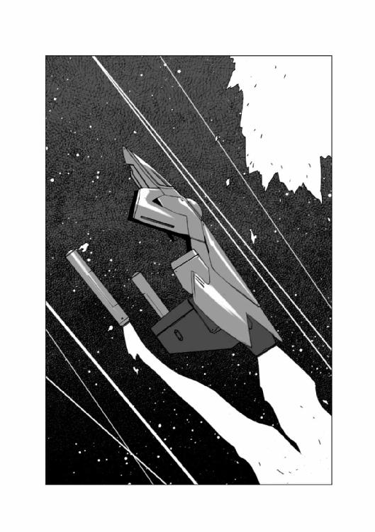
......よし！ 一隻撃破！
ハヤトが、遠くにいるもう一隻の海賊船に照準を合わせたとき、ハヤトのヘルメットのインカムに、警備艇から、焦ったような声が飛び込んできた。
『こちら、スージーリベッター！ カラヤ・アインに告げる！ 後方の海賊船にあっては、光学識別センサー用のデコイと判明した！ 繰り返す！ そっちの海賊船は、ニセモノだ！ 我々は、君が撃破した海賊船の制圧を行なう！ 大至急銀星号へと向かってくれ！ 現在銀星号との連絡がつかない状態にある！』
......なんだって？ じゃあ、もう一隻の海賊船は......。
ハヤトは思わず叫んだ。
「くそ！ やられた！」
思い切りフットバーを蹴飛ばして、機動戦闘艇の向きを変えると、ハヤトは左手のピクトレバーを思い切り押し込んだ。
機動戦闘艇は、背中を蹴飛ばされたように、一気に加速を開始した。
......ヤツラは、最初から二手に分かれていたんだ！ こっちにデコイを置いて、二隻で待ち伏せしているように見せて、本当はもう一隻が、銀星号が逃げていくであろうその先で待ち構えていたに違いない！
......銀星号は大丈夫だろうか？ まさか、沈められちまったのか？
ハヤトは脳裏に浮かんだ嫌な想像を吹き飛ばすように首を振った。
大丈夫だ！ ハインツがそんなドジを踏むもんか！ きっと逃げおおせているに決まっている！
「......くそ、帰りたくとも帰る場所がなくなっちまったら、意味がないじゃねえか！ こうなりゃ、このメリーさんとやらのご加護を信じるしかねえか！」
最大戦速で合流地点に向かって飛んでいる機動戦闘艇のコックピットにぶら下がっている、リアンの作ってくれたお守りの人形を見て、ハヤトがつぶやいた......その頃。
「いやあ......ドジ踏んじゃったなあ......」
ハインツは、参ったな、という顔でつぶやいた。
そこは、ハヤトたちが戦っていた空域から少し離れた、指定転移ポイントの近くの空域だった。
銀星号は完全に停船していた。
そして、停船している銀星号のすぐ横には、真っ黒に塗装された旧型のフリゲート艦を改造した武装艦......つまり、海賊船が浮かんでいた。
ブリッジの窓から海賊船を見ていたリアンが、青ざめた顔でハインツに聞いた。
「停船命令と、通信封鎖命令を出したあと、何も言ってこんだども......どうするつもりなんかな？......」
「撃沈するつもりなら、きっと問答無用でやっているはずだ......ということは、つまり、あいつらは、この銀星号が欲しいんだな......」
ハインツはそう答えると、クララに聞いた。
「通信波妨害はそのままか？」
クララは眉をひそめてうなずいた。
『最大出力で、妨害波が出ています......ハヤト船長からの通信と思われる通信波が断片的に入ってきていますが、解読はできませんし、返信もできない状態です」
「そうか......とりあえず、ハヤトには、俺たちの状況がわかっていると判断していいと思う......通信途絶という状況から、俺たちのこの状況を推察することぐらいはやってのけるだろう。ハヤトが乗った機動戦闘艇が来れば、あんなオンボロフリゲートなんざ、簡単にけりがつく......問題は、それまでどうやって時間を稼ぐか、だな......」
ハインツがそうつぶやいたとき、クララの表情が変わった。
『敵艦に動きがあります！ 後方のエアロック脇のアーム状の構造物が動き始めました！』
「なんだと？ 映像は出せるか？」
『外部モニターのセンサーをそちらに向けます！』
クララの言葉と共に、モニターに海賊船の右舷後部が映し出された。
海賊船の右舷の外殻の一部が外れ、そこがアーム状になって大きくせり出しつつあった。
その映像を見たハインツの顔が青ざめた。
「くそ。あれは、移乗攻撃用の突撃通路だ......あいつら、銀星号に乗り込んでくるつもりだ。武装した兵士に乗り込まれたら、もうどうしようもない......」
そのとき、通信モニターから、通信妨害波の雑音が交じった男の声が聞こえてきた。
『銀星号の諸君に告げる。我々は今まで積荷にしか興味はなかった。積荷のコンテナを置いて行ってもらう代わりに、貨物船本体は解放してきたのだが......諸君の銀星号を見て、少々興味が湧いた。というわけで、今回、その銀星号を置いて行っていただくこととなった。
これより回航要員を銀星号に送り込む。
念のために言っておくが、無駄な抵抗はやめていただきたい。
こちらの調査によると、銀星号に乗っているのはわずかに三名。そのうちのお一人は、コンテナの中にあった機動戦闘艇で出撃されているから、残り二名となるわけだ。
ましてや、そのうちの一名はアテンダント要員の女性......となれば、どう考えても抵抗は無意味だということだ。
一次的な感情の爆発といった、非理性的な行動は、お互いを不幸にする。
そのことを肝に銘じていただきたい。
我々の指示に従っていただければ、諸君の生命身体の安全は保障する。
諸君にはＮフィールド発生装置つきの救命艇を一隻進呈する用意がある。タンホイザーゲートまでは充分たどり着けるだろう......』
「くそ......こういう悪党が一番始末に負えない......犯罪行為を納得させられちまう！」
海賊船からのメッセージをさえぎるように顔をしかめてハインツが吐き捨てるように言ったとき、クララの顔が、ぱっと輝いた。
「海賊船がメッセージを送るために、妨害波の出力を若干落としています！......今、ハヤト船長からの通信を傍受しました！ あと十二分で合流ポイントに到着するとのことです！」
ハインツの目は、銀星号の外部モニターの画面に釘づけになっていた。
海賊船の脇に格納されていた乗り込み用の通路は、すでにまっすぐ伸びていた。
「十二分か！ 短いようで長いな......あの通路がエアロックに固定されて、海賊どもがなだれ込んで来たら、銀星号は奴らの手に落ちる！」
そのとき、リアンがすっと立ち上がった。そして、ゆっくりと長いみつあみを解き始めた。「......おい、リアン！ 何をするつもりだ！」
リアンは、顔を上げてハインツの顔を正面から見て、きっぱりと言った。
「この銀星号は、ハヤト船長とハインツ航海長の夢の城だわさ！ ハヤト船長がいない間、その城を守るのは、留守番のあたいの役目だわさ！......この銀星号を守ってみせるだわさ！」
「守るって......武器も無いのに......どうやって？」
「武器なら......あるだわさ！ あの......空間警察が捜索に来た時に言っていただわさ！ 台所に大量破壊兵器があるって！」
ハインツは一瞬、え？ という顔をした後で叫んだ。
「馬鹿！ あれはジョークだ！ フォークやナイフが大量破壊兵器なわけないだろう！」
リアンは胸を張って答えた。
「普通の人が持てば、ただのフォークとナイフだわさ......でも、みつあみを解いた私が持てば、それは大量破壊兵器になるんだわさ！」
ハインツは真剣な顔で首を振った。
「馬鹿なことを言うんじゃない！ 船内で戦うからって格闘戦とは限らないんだ！ 隔壁や移乗通路を破壊しないレベルの強度のショックガンや、制圧用の非殺傷用の弾丸を撃つサブマシンガンを持っているに決まっているじゃないか！ 遠距離から撃たれたら、いくら君が怪力の持ち主でも意味がない！ 怪我をするだけだ！」
ハインツは、そこで言葉を切ると、リアンを正面から見据えて言った。
「......もし、ここにハヤトがいたら、きっと君を止める！ 君が怪我をするくらいなら、銀星号をやつらにくれてやったほうがいい......ハヤトなら、絶対にそう言うはずだ！」
リアンは、泣きそうな顔で首を振った。
「でも......でも......あたいは嫌です！ 銀星号を海賊の手に渡すぐらいなら！ 怪我したっていい！ 死んだっていい！ だって......だって......銀星号は......」
「そうだ、銀星号は、俺たちの財産だ！ 俺たちの家だ！ 俺たちの夢だ！ でも、その夢は、仲間の命と引き換えにしていいものじゃないんだ！」
リアンは叫んだ。
「じゃあ、どうすればいいだか！ ここで、なにもせんと、銀星号が海賊に乗っ取られるのを指くわえて見ていろって言うだか！ そんなことはできねえ！ あたいは戦う！ 怪我するかもしんね、死ぬかもしんね、でも、もしかしたら死なないで戦う方法があるかもしんねえでねえか！ それを考える事もしないで、あきらめたら、ハヤト船長に、合わす顔がねえだよ！ あたいは嫌だ！ ハヤト船長ががっかりしている顔なんざ見たくね！ みんなで笑っているほうがいいだ！ さあ、考えるだよ！ 撃たれても大丈夫な方法を！」
そして、リアンは、なにかに気がついたように目を見開いた。
「盾はどうだ？ あたい、ネットニュースで見たことがあるだよ！ こう、狭い廊下みたいなところで警官隊が、盾持って、強盗と撃ち合っている画面！ 盾があれば、ショックガンで撃たれても平気でねえのか？」
ハインツは目を丸くした。
「盾？ そりゃあ確かに盾があれば、最低限直撃は食らわないで済むから、骨折とかはしないだろうけど、そんな装備この船には積んでないぞ......代用できるものといえば、食堂のテーブルとか、机とか......でも、あんな軽量樹脂材で作られたヤツなんか、一撃でバラバラになっちまうだろうし......」
そのとき、リアンが素っ頓狂な声を上げた。
「ある！ あるだわさ！ 盾に使えるものが！ ジャンクスターで銀星号に積み込んだだわさ！」
銀星号の船内で、リアンが乗り移ってくる海賊たちを撃退する準備を調えていたその頃。
海賊船の横腹から伸びた移乗用アームパイプがゆっくりと方向を変え、その先端を銀星号のエアロックに定めていた。
海賊船の船体から伸びる移乗用アームの中には、船内戦闘用の装甲機動服二台を先頭に、六人の海賊からなる移乗戦闘班が待機していた。
この船内戦闘用の装甲機動服は、地上で使われる重装甲の装甲機動服と違い、小型軽量で胴体正面と腕にしか装甲板が張られていない。
そもそも宇宙船の船内での戦闘では、隔壁に穴を開けないように、ショックガンや小口径の弾丸を使うことが多く、それに耐える程度の強度しか持たせなくても良いのだ。
背中のパワーパックを介して人間の体の動きをトレースして動く手足は、人間の手足の数十倍の力を出せるため、廊下などの見通しの良い場所で盾の代わりになったり、立て籠もった部屋のドアを破壊したりバリケードを排除したり、宇宙船の中や建物の中、という狭い場所での戦闘には必要不可欠の装備である。
戦闘班の一番後方にいた、副官のバンタムが、機動服の前面ハッチを開けて顔を覗かせている先頭の二人の若い男に声をかけた。
「おい、マイティとマット！ あの銀星号は、もしかすると、二代目フライング・ゴースト号になるかもしれねえ大事な船だ。調子こいて暴れてぶっ壊すんじゃねえぞ！」
マイティと呼ばれた若者は、笑いながら答えた。
「大丈夫っすよ、バンタムさん！ 聞いた話じゃあの船には二人しか乗ってなくて、おまけにそのうちの一人はアテンダントの女の子だって話じゃないですか。暴れるも何もありませんよ！」
マイティの言葉を聞いたバンタムは、何かに気がついたような顔になって、目の前にいる戦闘班の連中を見回した。
「ああ、そうだ、それを忘れていた。銀星号には女の子が乗ってるそうだ。生身の女なんざ、めったに会えねえが......俺たちは海賊で、ならず者かもしれねえが、下衆野郎じゃねえ......妙な振る舞いに及んだら、たとえ仲間でも、頭をショックガンで叩き潰せって、船長命令だ！ それだけは心得てろよ！」
戦闘班の海賊たちは互いに顔を見合わせると、不満そうに答えた。
「言われなくたって......女の子は丁重に扱いますって......」
「俺たちってそんなに信用ねえんですかい？」
バンタムは、部下たちを見回してうなずいた。
「念には念を入れただけだ！」
「わかってやすよ！」
「俺も、船長の言いつけは守るっス！」
口々にそう言ってうなずく部下たちを見て、バンタムは思った。
......なんだかんだ言ったところで、あのウィリス船長は、部下の人望だけは厚いよなあ。
時々ぶつぶつ言うヤツもいることはいるけど、不平屋ってのはどこにでもいるからな。
少なくとも、うちは、あのフォードの船よりは儲かってるし、怪我人も死人も出したことはねえからな。そのせいもあるんだろう。
バンタムの考えは、移乗準備を告げるブザーの音で断ち切られた。
「ようし、野郎ども！ 簡易マスクをつけろ！ エアロックの隙間から空気が漏れて、一時的に気圧が下がる可能性があるからな！ 酸欠で倒れちまったんじゃ話にならねえぞ！」
二体の機動服は、開けていた前面ハッチを閉め、後ろに続いていた海賊たちは、あわてて顔面だけを覆う、透明な面体を取り出してそれを装着した。
やがて、移乗通路に、ごごん！ という低い音と振動が伝わってきた。
それは移乗通路の先端部分が銀星号のエアロック部分に接触した音だった。
銀星号の外殻に接触している通路の先端部分から灰色のジェル状の物質がにじみ出てきて、見る見るうちに発泡し、そして固まっていった。
移乗通路の中ほどにある待機ポイントに、通路内が完全に気密状態になったことを知らせるグリーンランプが点灯して信号音が響いた。
「ようし！ 野郎ども、乗り込むぞ！」
バンタムの号令を受けて、戦闘班が前進を開始した。
通路の突き当たりには、銀星号のエアロックの外扉があった。
機動服が進み出て、外扉の脇にあるレスキュー用の強制開錠孔に、汎用開錠ロッドを突っ込んだ。
一呼吸ほどの時間が過ぎた後で、ばん！ という爆発音に似た音がして、耳がつん！ となった。
バンタムはにやっと笑って言った。
「ガスを送り込まれることを警戒して銀星号の船内の気圧を上げていたらしいな。どうやら、おとなしく明け渡す気は無いと見た......行くぞ、野郎ども！ 気を抜くな！」
「おう！」
海賊たちは、短く答えると、先端部に向かって一気に走り出した。
がじょん！ がじょん！ という装甲機動服の動力関節の音を立てながら、真っ先に銀星号のエアロックの外扉に取り付いたマイティは、ロックが解けて数センチほど開いている外扉に機動服の指を差し入れ、一気に左右に開いた。
次の瞬間。
ばごぉおおおおん！
轟音と共にマイティの機動服の正面装甲に閃光が走り、白く光る溶けた金属の飛沫が散った。
機動服は真後ろにいるもう一台のマットの機動服と他の海賊たちを巻き込んで、そのまま後方に五メートルほど吹っ飛んだ。
「うぎゃあ！」
「ひえええ！」
二台の機動服、つまり合計して約八百キロはある機械の下敷きになった海賊たちの悲鳴が、移乗通路の中に響いた。
ぎゅいいいいん！
サーボモーターのうなり音と共に、やっとのことで後ろにいたマットが乗った機動服が起き上がった。
ひっくりかえったマイティの装甲機動服の正面装甲には、なにか丸くて取っ手のついたものがめり込んで、白い細い煙を上げていた。
中にいたマイティは失神しているらしく、装甲機動服は、ぴくりとも動かない。
「なんだ？ 何があった？」
「わかりやせん！ エアロックを開けたとたん、マイティの戦闘服の正面になにかが当たったみたいです！」
「いったん退却だ！ マイティを連れて下がれ！」
バンタムの指示を受けたマットは、動かなくなった装甲機動服を引きずって後ろに下がった。
そして、バンタムの前まで来て、バカン！ と顔面ハッチを開けた。
「よく見てなかったんすけど、もしかしたら対戦車砲で撃たれたのかもしれやせん！」
「馬鹿言え！ 船の中で、そんなモンぶっ放す馬鹿がどこにいる！ 見ろ！ マイティの機動服の装甲にめり込んでいるのは、弾丸じゃねえ......こいつは、何か別のモンだ！」
「これ......なんですかね？ 丸くて、黒い取っ手がついているもの......団扇じゃねえし」
そのとき、マットがつぶやくように言った。
「わかった......これ、フライパンだ......」
「フライパンだとぉ？」
その場に居合わせた海賊たちは、改めて、マイティの装甲機動服の前面に食い込んでいる物体を見おろした。
マットの言ったとおり、それはフライパンだった。
よほどの高速で叩きつけられたのだろう、湾曲しているはずのフライパンの底面がひまわりの花弁のように放射状に裂け、板状に装甲に食い込んでいる。
マットが悲鳴のような声を上げた。
「このフライパン......がっちり食い込んで......縁が溶けているんすけど......どうやったらこんな風になるんすか？ 音速を超えた速度でぶち当たったとしか考えようがないっすよ！」
バンタムはわめいた。
「わからん！ 俺に聞くな！ とにかく、あのエアロックの中には、俺たちの想像を超えた何かがあるってことだ......作戦変更だ！ ショックガンを用意しろ！ そいつで衝撃波を叩き込んでから突撃をかける！」
「わかりやした！」
海賊たちは、ショックガンを構えると再び銀星号のエアロックに向かって進んだ。
エアロックの外扉は、マイティが開けたときのまま、八十センチくらい開いている。
先頭に立っていたマットは、その奥に一枚のドアがあるのに気がついた。
......あれ？ この船は、あんなところにドアがついているのか？
しかし、さらに一歩近づいたとき、マットは、そのドアが、船内隔壁のドアではないことに気がついた。
......あれはドアじゃねえな、船体外殻のハッチだ。あんなものが、どうして......。
次の瞬間、ハッチの後ろからひょい、と赤い髪の毛の女の子が顔を覗かせてすぐに引っ込んだ。
「女の子だ！ 女の子がハッチの後ろにいるぞ！」
マットの叫びを聞いたバンタムが、目を見開いた。
「女の子だと？」
「ええ、エアロックの中にハッチを立てて盾代わりにして、その後ろに女の子がいます！」
マットの機動服についているカメラが映し出した映像を見たバンタムは顔をしかめた。
「......女の子を盾にするたあ、最低の連中だな......仕方ねえ、手荒なことはしたくねえが気を失わせるしかねえな。マット！ パラライズレベルでショックガンを撃て！」
「女を撃つってのは、あんまり気が進みやせんが、仕方ねえですね......撃ちます」
マットはショックガンを構えてエアロックの中に向けて衝撃波を撃ちこんだ。
『バン！』とも『バカン！』ともつかない打撃音が、通路の中に響き渡った。
しかし、エアロックの中に立っているハッチはびくともしなかった。
「ダメですね......もっと強力なヤツで無いと......」
バンタムはうなずいた。
「仕方ねえ、こっちは抵抗するなって警告していたんだ、責任は向こうにある！ 怪我させてもいい、衝撃波の強度を上げろ」
「わかりやした......」
マットは、ショックガンの目盛りを上げて構えるとそのまま盾になっているハッチの中央に照準を合わせた。
......椅子や机程度のバリケードならバラバラになって吹っ飛ぶほどの衝撃だ。あの盾代わりのハッチは、きっと床に固定されているんだろうが、ちゃちな金具ならまず保たない。怪我するかもしれんが悪く思うなよ。
マットはそのままショックガンの引き金を引いた。
どごぉおおん！
前回の音とは段違いの、重くそして鋭い音が通路の中に響いた。
照準モニターを見ていたマットは目を見開いた。
盾は一瞬揺らいだだけで、その衝撃波を受け止めてしまったのだ。
「バンタムさん！ ダメです！ ショックガンでも倒れません！ これ以上強力にすると、反射波で通路の接続部にクラックが生じる可能性があります！」
バンタムはうめいた。
「よっぽどがっちりハッチを固定してやがるんだな......仕方ねえ、マット、お前が近づいて盾を排除しろ！」
「......俺が行くんすか！」
装甲機動服は、びっくりしたように自分を指差した。
「お前以外に誰がいる！」
「だって、あの子、フライパンを音速超えた速度で撃ち出すような、得体の知れない武器を持ってるんですよ！ 近づいたら俺もマイティの二の舞です！」
「安心しろ、お前は生身じゃない、大丈夫だ！」
「生身でなくたって、音速でフライパン撃ち込まれれば大丈夫じゃないっすよ！」
バンタムはうなずいた。
「言い換えよう、お前なら、俺たちと違って死なない......これでいいか？」
マットは、しばらく考えていたが、やがて半分やけくそのような口調で答えた。
「わかりましたよ！ やりゃあいいんでしょやりゃあ！」
そして涙目になってバンタムをにらんだ。
「死んだら、化けて出てやるからな......」
「ああ、化けて出てきたら歓迎会を開いてやる！ さっさと行け！」
マットは半分ふてくされたような顔で、前面ハッチをばたん！ と閉じると、くるりと振り向いて、ぎゅいん、ぎゅいん、という動力関節の音を立てながらハッチの後ろに潜んでいるリアンのところに近づいて行った。
機動服が近づいてくるのを見たリアンは、右足を半歩引いて身体を沈め、ハッチを持つ左の肘をまげて体の前に突き出し、右手を後ろに引いた。
リアンの右手にあるのは、見るからに凶悪なシルエットを持った無骨な金属の塊だった。
四角い金槌のような形をして、ギザギザが突き出したそれは......肉叩き。つまり、硬い筋肉を叩いて柔らかくする台所用品である。
間合いを取って停止したマットは、目の前にあるハッチを観察した。
そのとき、マットは、そのハッチが細かく揺れている事に気がついた。
......あれ？ 変だぞ。床に金具で固定されているなら、なんであんな風にゆらゆら動いているんだ？
あれじゃあ、まるで、人間が支えているみたいじゃないか。
そして、マットは目を見開いた。
......そうか！ きっと、さっきの衝撃波で固定した金具が破損したんだ！ あれは、あの後ろにいる女の子が必死に支えているんだ。そうだ、そうに違いない！
マットは、にやっと笑った。
どんな道具であのフライパンを撃ったのかわからないけど、きっと、レールガンか何かに違いない。あの盾の後ろにはそいつが置いてあるんだ。
でも、盾を支えていた金具は壊れ、もはや人の力で支えるしかない......ってわけだ。
そのとき、マットの頭にアイディアが浮かんだ。
......そうか！ 質量だ！ この機動服全体で体当たりを食らわせればいい！ あのハッチごと押し倒してしまえば、あの後ろにあるレールガンは撃てない。
マットは、機動服の右足を引いて、ゆっくりと身体を沈めた。
陸上競技のクラウチングスタートの姿勢のつもりだったが、ずんぐりむっくりの機動服がその格好を取ると、相撲の立ち合いにしか見えなかった。
ヘッドディスプレイの表示を見て、機動服の脚部マッスルシリンダーの瞬発力ゲージが、イエローラインを越えたことを確認したマットは、一気に脚部のエネルギーを開放した。
機動服は、肩からぶちかましを食らわすような形で、ハッチめがけて突進した。
マットの目に、盾の角度が浅くなったのがはっきりわかった。
......無駄だ！ いくら盾の角度を浅くしてエネルギーを逃がそうとも、この機動服の質量を加えたエネルギー総量は、数トンを超える！ 女の子の腕でこの機動服を止められると思うか！
マットの機動服は、盾代わりのハッチに頭から突っ込んだ。
がこん！
鈍い衝撃音がエアロックに響いた、次の瞬間。
マットは自分の目を疑った。
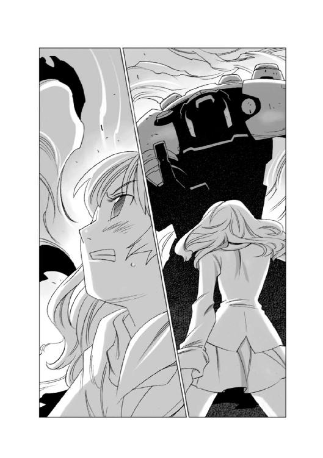
......止まってるじゃん、俺！
「うわぁああ！ そんなバカな！」
マットの悲鳴じみた叫びが上がるのと、その脳天に肉叩きが振り下ろされるのは同時だった。
それは。
......音速を超えていた。
がっっごおおおん！
金属音とも爆発音ともつかぬ轟音が、移乗通路の中に響き渡った。
海賊船のブリッジでは、船長のウィリスが、心配そうに、銀星号を映し出しているモニタースクリーンを見てつぶやいた。
「遅いなあ、バンタムのヤツ、とっくに銀星号を制圧してるはずなのに、何をやってるんだ？」
そのつぶやきを聞きつけたかのように、通信画面にバンタムの顔が映った。
「ああ、遅いぞ、なにやってたんだ？ さっさと銀星号のシステムのロックを解除して、こっちとシンクロさせてくれよ......」
バンタムは困惑したように首を振った。
『いや、その......何をやってたんだ？ と過去形で聞かれると、何かをやっているんです、と現在進行形で答えなくちゃなりませんでして......実はまだ銀星号に乗り込んでないんです』
「なんだって？」
バンタムは、肩をすくめると、通信端末の画像センサーをぐるりと回した。
ウィリス船長のモニターに映ったのは、ハッチの後ろに仁王立ちして、こっちをにらみつける長い赤い髪の毛を振り乱した一人の少女だった。
その映像に、バンタムの声が被った。
『......なんというか、恐ろしいぐらいの怪力の持ち主の娘っ子でして......虎の子の装甲機動服二台が、あの娘っ子にぶっ壊されました......それも素手です。部下どもはウワサに聞いた、サイバーメトロ社の作った戦乙女じゃねえか？ って言ってます』
「バカなこと言ってんじゃねえ！ 美少女型戦闘アンドロイドなんてシロモノが、現実にあるわけねえだろう！ コストパフォーマンス考えろ！ そもそも外見を少女にする理由がねえ！」
『いや、わかりやせんぜ、ウィリス艦長......趣味ってのは奥が深いモンです』
「お前と、ここでそういった趣味について会話している暇は無い！ さっさとやらないと、例の機動戦闘艇が来るぞ！」
ウィリス艦長がそう叫んだのと、海賊船のセンサーオペレーターが叫ぶのは同時だった。
「高熱源体急速接近！ 最大戦速です！」
「くそ！ 間に合わなかった！ 移乗用アームを格納する！ バンタム！ 急いで戻れ！」
『わかりやした！......で、どうします？』
ウィリス艦長は、忌々しそうに銀星号を見て答えた。
「なあに、乗っ取れなかったが、この距離だ。実質的に銀星号は俺たちの支配下にある......交渉の主導権は、人質を取っている方にあるんだからな！」
ハヤトの乗っている機動戦闘艇が接近しつつある事は、銀星号の方でも確認していた。
『ハヤト船長の操縦するカラヤ・アインは、三分後に到着します！』
クララの報告を聞いたハインツは、忌々しそうに目の前の海賊船をにらみつけた。
「くそ！ ハヤトが来ても、こっちはビーム砲を突きつけらている以上手も足も出ない！ おそらく向こうはこの銀星号を人質にしてハヤトに交渉を持ちかけるだろう......何か、こう、敵のビームを無効化できるシールドのようなものでもあれば......」
そのハインツのつぶやきを聞いたクララが、はっとしたように目を見開いた。
『あります！ ハヤト船長が作った、積荷を応用した武器です！』
「ハヤトが作った？ ああ、あれか！ 積荷の一部を使って切り抜けるとかなんとか......」
クララは目を輝かせてうなずいた。
『ハヤト船長が作ったものの中にビームを無効化させるものがあります！......というか、あれには完全に無力化させるビーム攪乱幕ほどの減衰効果はありませんが、少なくとも視覚的効果はあります！』
クララが表示したハヤトが作った武器のデータを、ハインツは食い入るように見て、そしてにやっと笑って、海賊どもを撃退してブリッジに戻ってきたリアンを振り向いた。
「なんとかなるかもしれない！ リアンの親父さんたちに感謝しなくちゃな！」
「え？」
いきなり話を振られて、目を丸くするリアンに、小さくうなずいてみせた後で、ハインツはクララに矢継ぎ早に指示を出し始めた。
「貨物コンテナラインの最後尾にあるコンテナを切り離せ！ ＡラインとＢラインの両方だ！爆破ボルトじゃなくて電磁ボルトだから、切り離しは楽だ。切り離したら、支持架の脇にある作業用アームで、コンテナの方向を変えるんだ。推進ロケットが海賊どもから見えないようにそっとやれ！」
『了解しました！』
クララが、そう答えるのと同時に、銀星号の船体の後方から、何かが動く、ゴツゴツという音が伝わってきた。
「何をするつもりなんですか？」
不安そうに聞くリアンを見たハインツは、目の前にある、貨物管理者のシートを指差して言った。
「いちかばちかの大勝負をかけるのさ。どうなるかわかんないし、きっと急発進することになると思うから、そこに座って、しっかりハーネスを締めておいてくれ！」
「わかりました！」
リアンは不安そうに、それでもはっきりとした口調でそう答えると、シートに座った。
ハインツは、メインモニターにサブウィンドウを開いて、そこに海賊船の映像の、ビーム砲塔の部分だけを拡大して表示した。
海賊船の船腹にある三つの単装ビーム砲の砲塔は、三つとも銀星号に向いていた。
手元にあるパーソナルモニターで、クララに指示したコンテナの切り離しと、方向変換が終わったことを確認したハインツは、願うようにつぶやいた。
「......これで、ハヤトがやってきたとき、あのビーム砲がどっちを向くか......そいつにすべてが、かかっているってわけだな」
クララの声がブリッジに響いた。
『カラヤ・アイン、接触まで一分を切りました！』
そのとき、海賊船の出していた通信妨害波の出力が落ち、それと同時に海賊船の船長がハヤトに呼びかけるメッセージが通信モニターから聞こえてきた。
『接近中の機動戦闘艇のパイロットに告げる！ 銀星号は、現在我々の実効支配下にある！ そちらが攻撃すれば、我々は銀星号を撃沈する！ 繰り返す！ 攻撃するな！ 銀星号は我々の隣にいる！ いつでも撃沈できる状況にある！ これは噓でもハッタリでもない！ 光学センサーによって状況を確認せよ！ 確認できたら、減速し、我々の指示に従え！』
海賊船の船長のメッセージが終わろうとしたそのとき。
今まで銀星号を向いていた三基のビーム砲塔のうち二つが、ハヤトのやってくる方向に向きを変えた。
「今だ！」
ハインツは、そう叫ぶと、プログラムの実行キーを押して、ハヤトとリンクしている通信モニターに向かって叫んだ。
「撃て！ ハヤト！」
実行キーにプログラムされていた、三つのことが同時に起こった。
一・密かに切り離されていた、最後尾の二つのコンテナの外側に取り付けられていた、固形燃料が点火された。
二・銀星号の推進機に送られるエネルギーリミッターが解除された。
三・反応炉から、ジェネレーターに流れる動力回路の直結回路の弁が開かれた。
固形燃料の爆発の閃光と共に海賊船に向かって飛び出した二個の貨物コンテナは、銀星号と貨物船の中間で、中に仕掛けられていた時限式爆発物によって、いきなり爆発した。
次の瞬間、銀星号の周囲に白い雲のようなものがぶわっと湧き上がった。
その白い雲は、微粒子と、そして無数の銀色のリボンとの混合物だった。
そして、その爆発とタイミングを合わせるかのように、銀星号の推進機が閃光を発し、蹴飛ばされるように飛び出した。
銀星号の周囲に白い雲が湧き上がるのを見て、ハインツの『撃て！』と言う声を聞いたハヤトは、ハインツが何をやったのか、瞬時に理解した。
機動戦闘艇は、海賊船に向かって突っ込むと、対艦ミサイルと、小口径速射ビーム砲を同時に発射した。
海賊船の反応は一瞬遅れた。
宇宙空間に白い雲が湧くという、信じられない現象と、銀星号の急発進、そして機動戦闘艇の攻撃という、三つの事が同時に起こったため、判断が遅れたのだ。
銀星号に向けられていたビーム砲が発射されたが、そのビームは白い雲のような物の中に混じった銀色のリボンの中で放電し拡散しながら銀星号のすぐ脇をかすめて、むなしく宇宙空間のかなたへと飛んで行った。
海賊船のブリッジは、半分パニック状態に陥っていた。
「この雲の正体はなんだ！ 解析にかけろ！ 第二第三砲塔は、ビーム集束率を下げ、拡散ビームで弾幕を張れ！」
ウィリス船長が、いつものぐうたらな態度をかなぐり捨てて、矢継ぎ早に指示を下す中で、部下も素早くレスポンスを返した。
「解析の結果が出ました！ あの雲の正体は......小麦粉です！ 銀色のリボンはキッチン用品のアルミフォイルです！」
「小麦粉とアルミフォイルだとぉ！」
ウィリス船長が目を見開いたとき、別のセンサーオペレーターが悲鳴にも似た声を上げた。
「超高速物体接近！ 対艦ミサイルです！」
「退避だ！ 両舷全速！ 方向を換えろ！」
「間に合いません！」
次の瞬間。海賊船の推進機が、閃光と共に爆発した。
通信妨害波の雑音と画像の乱れが、かき消すように消えた銀星号の通信画面に、ハヤトの顔が大写しになった。
『海賊船を撃破した！ 推進機を狙ったから、追いかけてくることはないぞ！ 大丈夫か、ハインツ！ リアン！』
「ああ、俺もリアンも大丈夫だ......この先のＮフィールド展開ポイントのところで回収しよう......ごくろうさん！」
『そうか、良かった......心配したぞ。遠距離光学センサーで見ていたら、海賊船が移乗通路を伸ばしていたから、てっきり乗っ取られちまったんじゃないかと......』
ハインツは、リアンをちらっと見てから笑った。
「ああ、危機一髪だったけどな、銀星号には守り神......それも女神が乗っているらしくて、まあ、なんとかなったんだ。詳しい話はお前が帰ってきてからするよ」
通信モニターに映ったハヤトは、笑った。
『そうか、楽しみだな......楽しみで思い出したけど......一仕事したら腹が減っちゃった。銀星号についたら、なんか食わせてくれないか？』
ハインツは苦笑いしながら答えた。
「そういえば部隊にいた頃、お前は出撃前には、いつも戦闘配食抱えて乗り込んでいたからなあ......身体がそのリズムに戻っちまったのかもしれないな。わかった、リアンに頼んでおくよ」
『悪いけど、頼む......じゃあな、着艦準備に入る......チェックリストの読み上げを一人でやんなきゃならないから時間食うんだ』
「了解！ 気をつけて帰って来い！」
ハインツとハヤトの会話を横で聞いていたリアンが、ハーネスを外して立ち上がった。
「私、キッチンでハヤト船長のために何か作ってきます！」
「悪いね」
「いえ！」
リアンは、にっこり笑って首を振ると、ブリッジから出て、キッチンに向かった。
......何をつくろうかな？ サンドイッチみたいなものでいいかな？ あ、そういえば以前夜食でオムレツサンドを出したら、すっごく喜んでくれたよね。
よし、オムレツサンド作ろう！
リアンは、小さくうなずくと、キッチンに向かって走り出したが、二、三歩走ったところで、ぴたりと足を止めた。
......あ......そういえば......フライパン......どうしよう？
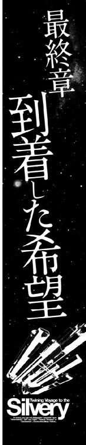
銀星号の下に、水・酸素型の惑星の特徴である薄青い大気圏をまとった惑星が浮かんでいた。
地表を覆う雲と、その下に見えるのは、海と陸の区別もつかぬほどに、凍りついた白い地表だった。
銀星号が停泊している衛星軌道上の小さな貨物ステーションの周囲では、何隻もの作業船がロボットアームを伸ばして、銀星号から取り外された貨物コンテナをエレベーターケーブルに連結されている鉱石運搬用のバケットカーゴと取り替える作業をやっていた。
ブリッジの窓から、その作業を見ていたハヤトが、ゆっくりと言った。
「鉱山惑星だから、ちゃんと軌道エレベーターがあるんですね......シャトルで地上まで荷物を運ぶのに比べたら、コストも時間もずいぶん少なくて済みますね」
「ええ、先代のエルノリク男爵......つまり私の父ですが......鉱石精錬プラントと、それを輸出するための積み出しプラントについては、ちゃんと用意しておいてくれました......地表にある鉱山労働者の居住施設などの福利厚生施設も実に充実しています......でも、それを維持し、守るための組織や施設に関しては一切考えていなかったのです」
ハヤトの横に立った、ショートカットの金髪の若い女性は、目を伏せて、言葉を続けた。
「私は、帝国の中央星域で生まれ育った苦労知らずの貴族でした......治安とか物流とか補給とか、そういった、人間の生活の根底を支えている、目に見えないさまざまなもの......私にはそれが見えていなかったのです。
それは、空気のようにあって当然であり、感謝する必要もないし、それを作り出す必要も無い......そんな風に考えていたのです......その結果が、多くの人を苦しめたのです......」
ハヤトは、首を振った。
「そんな風に自分を責めることはありませんよ、レイラ様。理由がわかったなら、解決策だってあるってことですよ。マルス家の企んだ惑星封鎖の壁は俺たちが蹴り破って大穴を開けてきました......動かないはずの星間警察だって動いてくれました......物事はいい方向に転がってる。そう考えましょう」
レイラは、顔を上げた。
その目に光る物があった。
「ありがとうございます......ハヤト船長......もう、何度も何度も、あなたのお顔を見るたびに頭を下げ、ありがとうと言い続けていますね......私。でも私にはそれしか言うべき言葉が見つからないんです......お許し下さい......」
ハヤトは照れたような困ったような赤い顔になって、頭を搔いた。
「あ、いや、その、貴族の......男爵令嬢様にそんな風に言われちゃうと、困ってしまいます......」
そのとき、今まで黙って話を聞いてたハインツが、小さく咳払いして、小声で言った。
「レイラ様は......男爵令嬢じゃない。男爵なんだ。お名前の中にある、バロネス、というのは、男爵の爵位を持つ女性の事なんだ」
ハヤトは目を丸くした。
「へえ、そうなんだ......でもよ、ハインツ。そういう時、なんて呼べばいいんだ？ 女性男爵......女男爵......そのどれもしっくりこないぞ。男爵婦人と呼ぶと、なんか既婚者みたいに聞こえて変だろう？ レイラ様は、まだ十九歳だそうだし、男爵令嬢でいいんじゃないの？」
「そりゃあそうだけど......」
ハヤトとハインツのやり取りを聞いていたレイラが、悪戯っぽい目でハヤトを見て言った。
「では、こうしたらいかがでしょう？ 私のことを令嬢とか、婦人とかそう言った肩書きをつけずに、ただ、レイラと呼び捨てにするというのは？」
ハヤトとハインツは目を見開いた後であわてて首を振った。
「そんな！ 貴族の女性を呼び捨てになんかできません！ もし、身分制度をガチガチに運用している厳格な領主に見つかったら、投獄されちゃいますよ！」
レイラは笑いながら首を振った。
「ここの領主は私です。でも、私は身分制度なんてものに、これっぽっちも魅力を感じておりません。私は貴族らしく振る舞おうとか、貴族としてあるべき姿、とか、そんなものに意味は無いと思っています。
人の敬意というものは、その人の身分ではなくその人の過去の実績と、能力と責任に向けられるべきものだと思います......違いますか？」
ハヤトは、小さくうなずいたあとで、微笑みながら答えた。
「ええ、まあ......確かにレイラ様は貴族っぽくないですね......このステーションに入港したとき、レイラ様が出迎えたので、驚きました......」
ハインツがハヤトの言葉の後を継いだ。
「まさか領主の方が直々にこんな衛星軌道までお迎えに出てこられるとは......でも、今のお話を聞いて、納得しました......」
レイラは、ハヤトの方を向くと、一歩近づいた。
レイラの背の高さは、ハヤトとほとんど変わらない。ほとんど顔を突き合せるようにして、レイラは言った。
「レイラさま......ではありません。レイラ、と呼んで下さい！ ハヤト船長には、私を呼び捨てにする権利があります！ なぜなら、この領地は、あなたの手で救われました......あなたはこの星の救世主なのです！」
「あ、いや。その......そんなこと言われましても......」
赤くなって、どぎまぎしたように答えるハヤトを見たレイラは、悪戯っぽく微笑んで、一歩下がった。そして、少し真面目な顔になって、ハヤトとハインツを見て、ゆっくりと言った。
「今、地表は大騒ぎです......救いの手が差し伸べられたのですから、無理もありませんが......この混乱が落ち着いたら、お二人と、それからアテンダントの方を地表にお招きして、公式のレセプションを開きたいと思っております......どうか、よろしくお願いいたします」
レイラはそう言うと、さりげなく、しかし、どこか優雅に一礼した。
その優雅な仕草を、食堂の片隅にあるモニターで見ていたリアンが、大きくため息をついて机に突っ伏した。
艦内モニターを使って、ブリッジのやりとりをリアンに見せていたクララが、怪訝そうな顔でリアンを見た。
『リアン様......どうしました？』
机に突っ伏したままの姿勢でリアンは答えた。
「貴族のお嬢様はステキだわさ......立ち居振る舞い会話微笑み......そのすべてが上品で華麗だわさ......あたいみたいな田舎者の娘には到底勝ち目はないだわさ......」
クララは、慰めるように言った。
『そんなことはありません、リアン様......リアン様だってレイラ様が持っていない能力や魅力を一杯お持ちです』
机に突っ伏していたリアンが、顔だけ上げて、クララを横目でにらんだ。
「装甲機動服とガチで殴り合いをして勝つのも魅力だって、言いたいだか？」
『あ、いえ......』
クララは、そう言って首を振ろうとして、途中で止めた。そして、首を盾に振ると言い聞かせるような口調でリアンに言った。
『......リアン様。それは魅力だと思いますよ。そりゃあ、怪力とか、破壊力とか、そんなものが果たして女の子にとって魅力なのか？ って聞かれたら返答に困りますけど......でも、女の子は、ひ弱で、か細くて、男の子に頼りっきりじゃないと魅力が無いって言われたら、私は思いっきり否定します。なぜならそんな女の子は、人間としての魅力に欠けています。
いいじゃないですか、怪力だって破壊力抜群だって......だって、リアン様はリアン様なんですから！ ハヤト船長は、その怪力も破壊力も全部一緒になったリアン様が好きなんだと思いますよ......』
リアンは、がばっと顔を上げた。そして、あわてて顔の前で手を振った。
「そんなことはないだよ！ ハヤト船長があたいの事が好きだなんて、そんなことがあるわけないだよ！」
そして、真っ赤になった頰を押さえて、つぶやくように付け足した。
「......あたいは、ハヤト船長のことが好きだけんど......きっとハヤト船長は、あたいのことを、仕事仲間としてしか見てねえだよ。たしかに、あたいは信頼されているかもしれねえ......だども、その信頼を恋愛感情と思い込んじゃいけねえだよ......それは思い上がりってモンだ！」
自分に言い聞かせるようにつぶやくリアンを、クララが姉のような微笑みを浮かべたまま、黙って見つめていた......その頃。
ドームシティの中は大騒ぎだった。
誰もが笑い、飛びはね、そして抱き合って泣いた。
ネットニュースでは、軌道エレベーターで衛星軌道から降ろされてくる貨物コンテナが生中継されていた。
『シティの皆様、ご覧下さい！ 今、銀星号が運んできた最初の貨物コンテナが降りてきます！ 最初のあのコンテナには、高次圧縮されたバーレナン小麦の精製小麦粉が詰まっている、とのことであります！ 銀星号が運んできたバーレナン小麦の総量は、なんと一万二千トンであります！ 念のために申し添えますと、私が読み上げているトン数の数字は、重さの単位ではありません！ 貨物船が品物を運ぶとき適用されるトン数はいわゆる体積トン、と申しまして、大きさを意味します。
宇宙船の場合、推進剤の主原料である水素が元になっておりまして、一トンは、約十四立方メートルとなります......そして。ご存知のように重力テクノロジーによって体積圧縮が可能な現在は、圧縮前の体積を計算の基準にいたします。
つまり、あのコンテナの中身は、解凍された場合、なんと四十倍に膨れ上がることになります！ 物によってはそこまで高次な圧縮ができないものもありますが、単純に考えれば、銀星号一隻が運び込んだ荷物は、銀星号四十隻分に等しいのであります。
皆さん！ 惑星ホルストは、文字通り救われたのです！ あの銀星号によって！
ご覧下さい！ 最初のコンテナが、見えて参りました！ 白い点でしかなかったその姿が、いまや肉眼でもしっかりと四角く見えてきました！』
アナウンサーの言葉のとおり、空に向かって伸びる軌道エレベーターのケーブルに沿って近づいて来る白い点は、やがて、視界の中で小さな四角形になった。
シティの住民のほとんど全員が、感激の涙を流しながら、天空を見上げていた......その頃。
シティドームの最下層にある、大きな作業ガレージの中では、自動化されたクレーンが動きながら、雪と氷にまみれた十二台の大型地上車の後部荷台から、凍結したピンク色のオキアミの塊を降ろしていた。
無機質な青白い発光ダイオードの照明に照らされた広い作業ガレージの中には、オキアミを計量し検査する係員と、作業する作業員の他に出迎える人の姿も無く、がらん、としていた。
地上車から降り立ったウーフは、左手に巻いた包帯を見ながらここから出発した日のことを思い出していた。
......あの時は、ここを人々が埋め尽くしていた。
餓死寸前にまで追い込まれたシティの人たちは、俺たちをヒーローと呼び、俺たちがオキアミを持って帰ることを、心の底から望んでいた。
ウーフは自虐的な微笑みを浮かべて肩をすくめた。
......盛大な出迎えを望んでいたわけじゃない......と言ったら噓だよな。
なんだかんだ言ったところで、俺の心の中には、ヒーロとしてもてはやされたいって願望があったのは事実だもんな。
そのとき、誰かがウーフの背中を、どん！ と叩いた。
あわてて振り向くと、そこに髭面の男が笑っていた。
「ナビさん！」
「よう、どうした、ウーフ、元気が無いな......出迎えが無くて寂しいか？」
「あ、いえ、そんな......」
あわてて首を振るウーフを見てナビは笑った。
「うそつけ、顔に書いてあるぞ。彼女に会いたいって」
「え？ まさか、そんな！ まだ仕事があるのに、そんな顔しませんよ......」
ナビは笑いながら首を振った。
「仕事は無い。後は俺たちに任せて、お前は帰れ......」
「いいんですか？」
思わず声が弾んだウーフを見て、ナビはにやっと笑った。
「声が笑ってやがる......この正直者め！」
そして、ナビは微笑みを消してウーフを正面から見つめて言った。
「いいか、良く聞け。銀星号が到着した今、俺たちのやってきたことは、誰からも評価されないだろう。世間の人は俺たちを道化だと言って笑うだろう。お前らが命を懸けてやってきたことに、何の意味があったんだ？ と笑うだろう......でもいいか、怒るな。絶対に食って掛かるな、説明しようとするな！ 俺たちがやってきたことが、どんなことなのか、その意味がわからないヤツには、何を言っても無駄だ！
......だけど、いいか、卑屈になるな！ 胸を張れ！ 俺たちは間違っちゃいない！ 俺たちがやってきたことは正しい！ 俺たちは必要な事をやったんだ！
それを忘れるな！ 俺たちは、なんとかしようと思った。そしてやってのけた！ これ以外に言うべきことは無い......わかったな？」
「はい！」
ウーフは胸を張った。
泣きたかった。
声を上げて泣きたかった。悔しくて悔しくて仕方なかった。
でも、目の前にいるナビに涙を見せたくなかった。
ナビは、そんなウーフの顔を見て、ぽん、と肩に手を置いた。
「世の中が落ち着いたら、一度遊びに来い！ 世の中は広いぞ。お前の学校の教室と家だけが世界じゃないんだ。それを教えてやる......」
「はい......」
ナビは泣きそうな顔のウーフの肩をつかんで揺すった。
「ほら、そんな顔するんじゃない！ 車に戻って私物を持って、事務室に上がれ、そこで正式に解散するそうだ......わかったな」
「はい！」
ウーフはもう一度胸を張って答えると、車の中に戻った。
私物を詰め込んだダッフルバッグを肩に担いだウーフが、作業ガレージを出て、短い廊下を進み、突き当たりにある階段を上ろうとしたとき、誰かが廊下を走ってくる、ぱたぱたという足音がした。
そして、その足音はウーフの真後ろに近づくと、いきなり立ちすくむように止まった。
ふわっと、甘くシャンプーが匂った。
「ウーフ！ 怪我したの？ 大丈夫？」
ウーフは振り向かずに、包帯を巻いた左手を振ってみせると、自嘲するように言った。
「ああ、左手の皮一枚なくなっただけで、無事さ......ついでに無駄だったけどな......」
チャニはウーフの背中に抱きついて叫んだ。
「無駄じゃない！ 無駄なんかじゃない！ 世界中の全部が無駄だって言ったって、私はそんなこと言わない！ だって......私は知ってる！ ウーフのことを！」
そして、チャニは泣いた。
今までせき止めていた何かが外れたかのように、子供のように声を上げて、わんわんと泣いた。
ウーフは、泣きじゃくるチャニに抱きつかれたまま、黙って立ち尽くしていた。
......無駄じゃない。
無駄じゃなかったんだ。
きっと、クラスの連中は俺のことを馬鹿にするだろう。
俺がこの任務に志願したときに、俺のことを笑ったヤツは、その十倍の嘲笑を俺に浴びせるだろう。
それ見たことか、ヒーローになんかなれっこないんだ、お前は馬鹿だと、そう言って笑うだろう。
でも、俺は耐えられる。
なぜなら......チャニがいる。
俺のために泣いてくれるチャニがいる。
それで......充分だ。
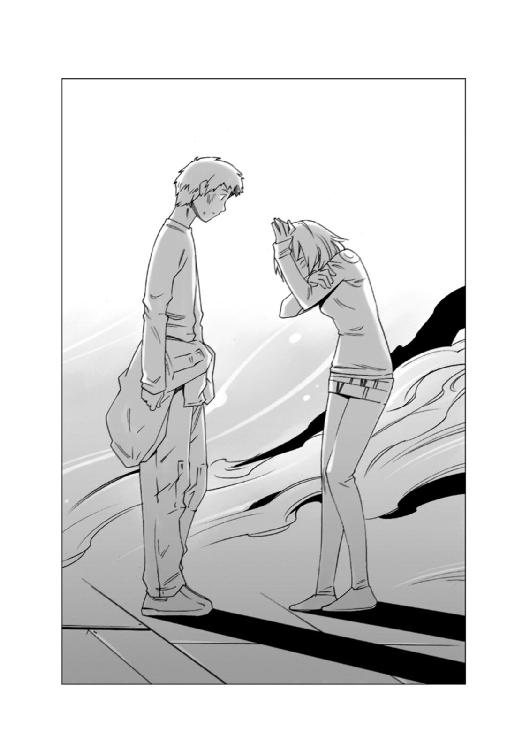
銀星号が積んできた荷物は次々に地表に降ろされ、そのたびにシティの人々に、品物が配られた。
二日後にショッピングセンターが開店し、次の日にはコンビニも開店した。
普通の生活を取り戻したシティの中には活気が戻っていた。
畑にされた緑地公園の中にある、数少ない芝生広場の中を子供が走り回る姿を、市庁舎の最上階にある、執務室の控え室の窓から見下ろしながら、礼服に着替えたハヤトがつぶやいた。
「公園が、みんな畑になっている......きっと少しでも自給しようとしてがんばったんだろうな......」
ハヤトの脇に立って、同じ光景を見下ろしながらハインツが言った。
「レイラは、この惑星の食糧自給率を上げて、市民の中から、従軍経験のある人間を探し出して組織化し、最低限の自衛が可能な戦闘部隊を作るつもりらしいな......俺たちが持ってきたあの機動戦闘艇は、思いもよらぬプレゼントになったらしい......でも、代理購入依頼した物品ではないって理由で、仕入れ価格のままの引き渡しを要求されている......」
ハインツは、ひょいと肩をすくめてから、言葉を続けた。
「美人で才媛で金持ちで、いいところのお嬢様だけど......計算高い女って感じだな......まあ、計算で動くってことは、その計算さえ読めれば扱いやすいって意味だと思うけどな」
ハヤトは、苦笑いを浮かべながら小さく首を振った。
「悪いけど、俺は、女の子とそんなことを考えながら付き合う気はしないな......女の子は、ちょっとくらいドジっ子で、でも、一生懸命で、気分があったかくなる子のほうがいい」
ハインツはにやっと笑って聞いた。
「ついでに力持ちか？」
「誰の事だよ」
にらむハヤトを見て、ハインツは小さく声を上げて笑った。
「ははは、まあいいや、深く追及はしないでおこう......」
ハヤトは、頭の後ろで腕を組むとぼやくように言った。
「歓迎式典の前に、男爵令嬢と話をするって言っていたけど......何の話をするつもりなんだ？ 機動戦闘艇の値段交渉か？」
ハインツは首を振った。
「まあ、それもあるが、この男爵領を存続させるための秘策を伝授しようと思ってね。貴族に恩を売る機会なんてめったにないから、思う存分恩を売っておこうかと考えてるのさ......」
「......お前の売る恩は、あとが怖そうだな。小さな投資で大きな利益って書いてあるような気がするぜ？」
ハインツは何も言わずに肩をすくめてみせた。
レイラの執務室は、一歩間違えば質素と呼ばれそうなくらい装飾の無い簡素な部屋だった。
応接コーナーのソファに座ったハヤトとハインツに、自分で淹れた香茶を振る舞ったレイラは、微笑みながらハインツに聞いた。
「折り入って私にお話がある......とお聞きしましたが、どんなお話でしょう？」
ハインツは、小さくうなずくと、小声で話し始めた。
「安全保障上の秘策をお教えしましょう......簡単なことです......有名人になればいいのです」ハインツの言葉は、予想していたものの中に無かったのだろう。レイラは目を丸くした。
「有名人ですか？」
「ええ、そうです。見たところあなたは美人で若くて才媛で、男爵の称号をお持ちだ。そのすべてを売り込むのです、社交界に興味はおありですか？」
レイラは、微苦笑を浮かべて首を振った。
「いいえ、どうにも肌が合いませんので、一度も......」
ハインツは、レイラに言い聞かせるように言った。
「それがいけません。もっと世に出るべきです。確かに帝国の貴族連中の世界は魑魅魍魎がうようよしています。しかし、その化け物どもの海を泳ぎきれば、これは大きな力になります。敵対するのではなく、力を利用するのです。
人と人のネットワーク。これに優るものはありません。孤高の立場を貫くのは、確かに美しいでしょう。しかし、それは責任ある立場の人間が目指す生き方ではありません。それが許されるのは、責任を投げ捨てた人間だけです。責任を果たすおつもりがあるのなら、その価値観を捨てるべきでしょう」
「お話はわかります......でも、私には頼りになるような人もおらず......」
困ったような顔で首を振ったレイラを見て、ハインツはにやっと笑ってみせた。
「なんなら、一人......ご紹介しましょうか？ 帝国上層部で数少ない、信用が置ける人物です......いささか偏屈なジジイですが」
「ジジイ？」
レイラは目を丸くした後で笑った。
「ハインツさんは、いろんなお知り合いがいらっしゃるのですね......羨ましいですわ」
「ええ、そうですよ、我々がこのホルストに来ることが出来たのも、その、知り合いのおかげです。人と縁を結ぶ事を恐れていけません。より多くの、さまざまな職業や価値観の人と縁を結ぶ事で、人間はより高みへと登ることが出来るのだと私は信じています」
ハインツは、そういうと、少し悪戯っぽく笑って、言葉を続けた。
「......もうひとり、これはちょっと扱いづらい人物かもしれませんが、上手に対処すれば、強い味方になってくれそうな人物をご紹介します」
「強い味方......帝国軍の方ですか？」
「いえ......海賊です」
レイラとハヤトは目を見開いた。
「海賊ですって？」
「おい、それって！」
話を聞いていなかったハヤトが驚くのをそのままにして、ハインツはこともなげに言葉を続けた。
「ええ、そうです。エルノリク男爵領星系と、タンホイザーゲートの間にあるＮフィールドポイント付近に、漂流している海賊がいるはずです。そいつは交渉できる相手です。救助する交換条件として、エルノリク男爵領星系については敵対しないように交渉してみてはいかがですか？」
「海賊と交渉しろというのですか？」
信じられない、という風に小さく首を振ったレイラを見て、ハインツは笑ってみせた。
「ええ、マルス家はやっていますよ。こっちも同じことをするだけのことです。上手くエルノリク男爵領星系の一員として取り込むことができれば、かなりの戦力になりますよ」
レイラは眉をひそめた。
「しかし......海賊どもは、無法者です。信頼できるとは思えません。彼らは法律で取り締まるべき存在で、無警告で撃沈及び射殺が許されているのですよ？ そんな相手をどうやって取り込めるというのですか？」
ハインツは、わが意を得たり、という顔でうなずいた。
「確かに、海賊どもは無法者です。信頼することはできません。しかし、この辺境空域は、その、レイラ様のおっしゃるところの法律とやらが通用しない場所なのです。ここを支配しているのは法律ではなく、あくまでも力関係です。
確かに海賊どもの多くは、無法者の犯罪者です。しかし、世の中から乖離しているわけじゃないんです。かっぱらった物は売りさばかなくちゃなりませんし、食糧や水などの補給も受けなくちゃなりません。そこに、奴らを手なずける鍵があります......」
ハインツは、そこで言葉を切ると、悪戯っぽい目でレイラを見ると、何か布告をするような口調で言葉を続けた。
「慈悲と寛容を国是とする、我がエルノリク男爵領星系では、人道的な支援としていかなる者でも平等に補給を与える！ という風に声明を出すのです......このエルノリク男爵領の領地の法律を決めるのはレイラ様です。帝国の法では問答無用で即射殺！ と、決まっている海賊どもでも、このエルノリク男爵領星系に来れば、最低限の補給を受けられる、という条件を海賊どもに示して、海賊を仲間につけるのです。そうすれば、このエルノリク男爵領星系は、やつらにとって、数少ない中立の場所になります。それがどれほど貴重な場所なのか、奴らは骨の髄まで知っています。封鎖して、この惑星と敵対するような真似はおそらくやりません。それどころか中立化された補給場所を守るために戦うでしょう......おそらく封鎖は解かれます。それどころか、ここにやってくる商船の護衛すら申し出るかもしれません。特に先ほど申しましたＮフィールドポイントの近くに漂流している連中は無法者でありながら、こっち側の価値観が通用する、数少ない海賊だと思います。一度お試しになる価値はあると思いますね」
レイラは何かに気がついたように顔を上げた
「......わかりました、あなたがおっしゃっているのは、要するにあれですわね、野生動物の餌付け......オオカミを手なずけて番犬にする......みたいな」
「まあ、そういうところですね......」
ハインツが、そう言って笑ったとき、執務室に、品の良い老人が入って来て一礼して言った。
「レイラお嬢様、ハヤト船長閣下、そしてハインツ航海長閣下。銀星号の歓迎式典の準備が整いました。皆様がお待ちです、こちらへどうぞ」
「わかりました」
レイラは、そう言って立ち上がると、にっこり笑ってハインツに言った。
「あなたのお話は、実に参考になりますわ......これを機会にお近づきになりたいですわね......」
「こちらこそ」
そう言って笑いを返したハインツは、レイラの表情を見て思った。
......顔は笑っていても、目が笑っていない。
世間知らずのお嬢様ってわけじゃない。この人なら、この先、ちゃんと領地経営もやっていけるだろう。
積んできたすべての荷物を降ろした銀星号は、惑星ホルストで、一次精錬の終わったシリリウムを詰め込んだコンテナを定数一杯に積み込んだ。
銀星号のブリッジにある外部モニターで、そのコンテナの列を見ていたハヤトが、ハインツに聞いた。
「搭載貨物の総質量は定数の何パーセントだ？」
「百パーセントさ。定数の上限まで積み込んである......シリリウム一万七千トンだ。ここ最近市場に出てなかったから、相場が天井知らずだ。時価の換算総額は、ちょっと見当がつかないな」
「じゃあ、もし、このシリリウムが全部俺たちのものだったら、あっという間に億万長者ってわけだな」
ハヤトの言葉を聞いたハインツは苦笑しながら肩をすくめた。
「シリリウムは、このエルノリク男爵領を支える命綱なんだ。タダでもらえるわけが無いだろう。俺たちの取り分は、市場で売りさばいた総額の十パーセントだけだ......とはいっても結構な額になると思うな。経済状況も、なんとか一息つけるだろう」
ハインツの言葉を聞いたハヤトは目を輝かせた。
「じゃあ、お金が入ったらすぐにジャンクスターに行こうぜ！ 機動戦闘艇の出物があれば買おう！ 銀星号に搭載しておけば、たとえこの先辺境空域の仕事を請け負っても、海賊に怯えないで済むじゃないか！」
「おいおい、忘れたのかよ。銀星号に機動戦闘艇を積むとしたら、積荷として扱うしかないんだぞ。どっかに運ぶって理由も無しに積んだら、それは武装と同じだ。海賊予備罪で逮捕されちまうぞ」
いつもなら、ハインツに説明されれば引っ込むはずのハヤトは引かなかった。
「だったら、買ってジャンクスターのリムジン商会に預けておこう！ んでもって必要なときに運搬契約を結んで荷物として積み込めばいい。どうせ辺境空域でしか使えないんだからそれで充分だ！」
ハインツは、半目でハヤトをにらんだ。
「......今回の仕事で味を占めやがったな」
「え？ あ、いや、まあ......そんなところかな？」
「まったく......わかりやすいヤツだな」
図星を指されたハヤトが、照れ隠しのように笑って頭を搔くのを見たハインツが肩をすくめたとき、ブリッジにコーヒーの匂いと共にリアンが現れた。
「ハヤト船長、ハインツ航海長、コーヒーをお持ちしました！」
「お！ さんきゅ！」
にこにこ笑いながらリアンの差し出すマグカップを受け取ったハヤトは、一口すすった後で、にっこり笑って言った。
「リアンの淹れてくれたコーヒーは美味いな」
ハインツが、にやっと笑って聞いた。
「レイラお嬢様、みずから淹れていただいた香茶と、どっちが美味い？」
「そりゃあ、リアンのコーヒーの方が美味いに決まってるさ。なんというか、こう、飲んでほっとするんだよな......何の変哲も無い、いつものコーヒーなのに」
ハヤトの言葉を聞いたリアンの顔が、ぱっと輝いたのを見たハインツは、にやにや笑いを浮かべたまま言った。
「それは、あれだな......愛情の違いだな。レイラお嬢様の香茶には愛が無いが、リアンのコーヒーには愛があるんだ」
「!!」
耳の先まで真っ赤になったリアンは、トレイを顔に当てて、黙ったままブリッジから逃げ出した。
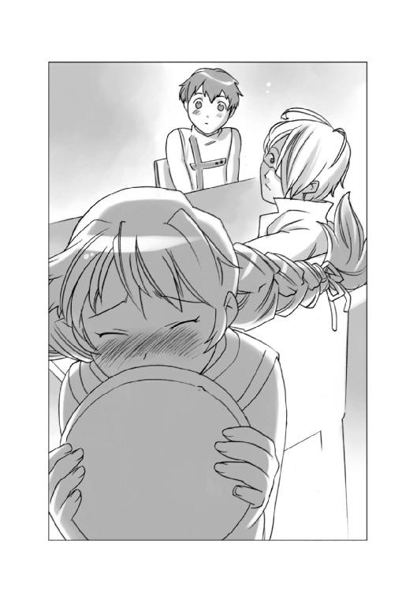
「あ、おい、リアン！」
リアンの後を追おうとしたハヤトをハインツは止めた。
「まあいいじゃないか、話なら後でゆっくりすればいい、そろそろ航路情報が送られてくる頃だぞ」
「あ、ああ、そうだな......」
リアンの消えたドアを見ていたハヤトは、小さくうなずくと、シートのハーネスを締めなおして、正面を向いた。
「まったくリアンもお前も、わかりやすいったらありゃしないな......」
ハインツが、やれやれ、という口調で言ったそのとき。メインモニターに、軌道ステーションの航路管制官が映った。
『エルノリク星系軌道ステーションから銀星号へ。こちらの準備は整った。航路情報の転送を開始する。ダウンロードが終わり次第いつでも出航可能だ......』
ハヤトは、メインモニターに向き直って答えた。
「銀星号了解！ 推進機、及び推進剤のチェックが終了次第出発します......いろいろお世話になりました！」
メインモニターに映った管制官は、にっこり笑って首を振った。
『いいえ、お世話になったのは我々です。惑星ホルストの全住民を代表してお礼を言わせていただきたい......銀星号は幸運の船として、永くこの星に語り継がれることになるでしょう。この惑星の住民は決してあなた方と、銀星号の名前を忘れません！』
管制官の言葉を聞いていたハインツは小さくうなずいた。
......幸運の船か。
銀星号がそう呼ばれるようになる日も近いのかもしれないな。
クララが誇らしげな澄んだ声で言った。
『すべての準備が整いました、銀星号はいつでも発進可能です！』
ハヤトとハインツは顔を見合わせて互いにうなずいた。
「よし、銀星号発進！」
「航路クリア！ 全座標異常なし！」
「了解！」
ハインツの報告を聞いたハヤトは、そう答えると、推進機のピクトレバーを、ぐい、と押し込んだ。
銀星号が、次の航海を始めたその頃。
惑星ホルストの地表にある、シティの街角では、ビルの壁面に設置された大きなモニタースクリーンに、軌道ステーションを発進する銀星号の映像が大写しになっていた。
集まった人々と一緒にその映像を見上げていたウーフが隣にいるチャニに話しかけた。
「あの銀星号の船長とか、乗組員の人たちって、俺たちと大して変わらないくらい若いんだよな......なのに、こんなすごいことをやってのけちまうなんて......本当にすごい人たちだな......」
チャニは、ウーフの腕をぎゅっと握って、静かに言った
「うん......そうだね......でも、ウーフだってすごい人なんだよ」
腕に伝わってくるチャニの体温を感じながら、ウーフは思った。
......あの銀星号の人たちは、なぜ、あんなに苦労して、俺たちのところに来てくれたんだろう？
それを、仕事だから、の一言で片づけてしまう人もいるだろう。
金のためさ、と冷笑する人もいるだろう。
仕事だから、金で動いているんだから、当たり前のことなんだから感謝する必要はないと、言い切る人もいるだろう。
......でも、本当は違うんだ。
仕事とか、役目とか、義務とか、いろんな言葉で言われていることは、確かに当たり前のことなんだ。
でも、それは、感謝しなくていいってことじゃないんだ。
制度や、法律や組織に感謝する必要は無いだろう。
でも、それを当たり前にやっている人に感謝するのは、当たり前のことなんだ。
店に品物がある。
店で何でも買える。
......その当たり前を支えてくれるのは、あの銀星号のように、当たり前に荷物を運んでくれる船と、それに当たり前に乗りこんで、当たり前に働いている人たちなんだ。
......俺は、今まで、道を走っているトラックに感謝したことなんかなかった。
ウーフはもう一度モニターを見上げた。
惑星ホルストの軌道ステーションに設置されたカメラは、銀星号が光の点になっても、まだ追い続けていた。
ＥＮＤ
あとがき
どうも、鷹見一幸です。「銀星みつあみ航海記ＬＯＧ 02」いかがでしたでしょうか？
02」いかがでしたでしょうか？
この「銀星みつあみ航海記」のような、遥かなる未来の宇宙を舞台にした物語は、俗に「スペースオペラ」略称「スペオペ」と呼ばれています。
なぜ、そう呼ばれるようになったのか。ちょっと、スペースオペラと、その起源について、お話ししましょう。
スペースオペラの起源は、今から百年ほど古いアメリカに求めることができます。一九二○年代、アメリカでは、パルプマガジンと呼ばれる雑誌が売られていました。この雑誌には、西部開拓時代を舞台にしたいわゆる西部劇の小説や読み物が数多く掲載されていました。この西部劇のことを、アメリカでは「ホース（馬）オペラ（活劇）」と呼んでいたのです。
そして、一九三○年に、天文学者のローウェルの予言どおり、太陽系九番目の惑星「冥王星」が発見されると、アメリカでは、宇宙ブームが巻き起こりました。
この、ローウェルという天文学者は、生前「火星には運河があり、文明を持った火星人が住んでいる」という説を唱えていました。世間の人々は、この説を荒唐無稽なホラ話だと決め付けていましたが、冥王星が発見されたことで、この「火星人説」は、一気に信憑性を帯びて語られることになったのです。
もっとも、今ではこんな説を信じる人はいませんし、ローウェルの説に信憑性を与えた冥王星も、二○○六年に国際会議で、惑星ではなく「準惑星」だ、ということになって、太陽系第九番目の惑星という称号を失ってしまいましたが、この当時の人々の多くは、本気で火星人の存在を信じていました。
こうやって巻き起こった宇宙ブームを、エンタテイメントの業界が放っておくはずがありません。冒険活劇の舞台を宇宙に移した物語が次々に書かれることになりました。
とはいえ、宇宙がどんな場所なのか、誰も見たことはありません。この時代、宇宙探査衛星どころか、大気圏外にすら人類は到達していないのですから。
そこで、この当時全盛期だった西部劇の設定をそのまま宇宙に持ち込んだスタイルの物語が次々に書かれることになりました。
ガンマンの持つコルト・ピースメーカーは、光線銃に、またがる馬は宇宙船に、西部の荒野は太陽系に......そうやって生まれたのが、いわゆる「スペース（宇宙）オペラ（活劇）」だったのです。
そして、この、西部劇もどきのスペースオペラに彩りを与えたのは、なんと言っても「宇宙人」の存在です。
ローウェルが唱えた「火星には火星人がいる」という説には、想像で描かれた奇妙な火星人の姿が常にセットになっておりました。特に、ＳＦの元祖であるＨ・Ｇ・ウェルズの唱えた「タコ型火星人」のデザインも、この「奇妙な異星人」という存在に影響を与えました。
奇妙で、グロテスクな宇宙人や、宇宙怪物たちが次々に登場し「ベム」＝ＢＥＭ（Bug-Eyed Monsterの頭文字）と呼ばれ、美女を襲う悪役として登場したのです。
ＳＦ界の大御所である野田昌宏氏のお書きになった『ＳＦ英雄群像』という本に、当時の雑誌の表紙の写真が掲載されていますが、なんというか、肌をあらわにした......と言っても今のレベルから見れば可愛いものですが、女の子を、触手やらなにやらをぬらぬらさせて襲っている絵が、描かれています。
とにかく、スペオペとは、低俗で、エロい、娯楽読み物として、この世に誕生し、そして、その敷居の低さゆえに読者に支持され、読者を集め、そして作家と作品を集めたのです。
しかし、この当時、なぜ人々は、物語の舞台を宇宙に求め、その物語が大きく支持を受けたのでしょう？ 確かにローウェルの唱えた冥王星の発見、という大きなエポックメイキングな事件があったのは事実です。しかし、それだけなら、一過性のブームとして終わってしまったでしょう。
一九三○年代。地球上には、南米やアフリカという文明が足を踏み入れていない秘境が、いくらでもありました。冒険活劇の舞台にするには、うってつけの場所がどこにでもある時代だったのです。
しかし、人々は宇宙を舞台に選んだスペオペに、心惹かれました。
それはなぜか。
私は、宇宙こそが未知の場所であるのと同時に、誰もが知っている場所だったからではないかと思うのです。
宇宙は、遠い山の向こうや、海のかなたにあるわけではありません。
宇宙は、夜空を見上げればそこにあるのです。
これほど身近な、そして遠い場所があるでしょうか？ いつでも見ることができて、そしてそれがゆえに最も遠い場所。それが宇宙です。
そこは、誰も行ったことが無い、それがゆえに自分たちが自由に想像し、そして創造できる世界だったのです。
そして、現在。宇宙は、もはや未知の空間ではありません。惑星探査衛星が太陽系の中を飛び、土星の輪をくぐり、火星の地表の映像を送ってくる時代になりました。民間の宇宙開発プロジェクトが進み、お金さえ出せば、誰でも宇宙旅行に行ける時代になりました。
しかし、人類はいまだに他の惑星に立ったことはありません。ましてや夜空に光る無数の恒星系は永遠にも等しい距離のかなたにあります。
今、この二十一世紀に生きている人々が、夜空を見上げ、そこに輝く星を見上げたとき、そのとき心に浮かぶものは、きっと一九三○年代の人々と同じものです。
かつて、スペオペに胸を躍らせた少年たちがそこに見たのと同じ、目に見えるけど手が届かない未知なる世界。
それは変わらずにそこにあるのです。
地球上に存在する暴力と恐怖と飢餓。人類はいまだに、それから逃れることができません。
「今」は常に苦しみと共にあります。そして将来はいつも不安と共にあります。
でも、未来に希望を持たなければ、人は前に進めません。
人間はどんなにがんばっても、過去に行くことはできません。人間は未来に向かって進むように作られているのです。
未来を。まだ見ぬ未来を、想像し描くことは、荒唐無稽なことかもしれません。でも、だからこそ、私は未来を舞台にした、夢を持ち続けるヒーローたちを描きたいと思うのです。
「銀星みつあみ航海記」は、そんな世界に生きる若者たちのリアルな物語です。
スペオペは、決して荒唐無稽な世界を舞台にした、ありえない世界の物語ではありません。
なぜなら。
宇宙は、いつでも見上げればそこにある「リアル」なのですから。
（サラリーマン作家どころか零細自営業でしかない）鷹見 一幸
カバー・口絵・本文イラスト／緒方剛志
デザイン／アフターグロウ
銀星みつあみ航海記
LOG.02 俺らが運ぶべき希望
鷹見一幸
平成27年1月1日 発行
(C) Kazuyuki TAKAMI 2007
本電子書籍は下記にもとづいて制作しました
角川スニーカー文庫『銀星みつあみ航海記 LOG.02 俺らが運ぶべき希望』
平成19年11月1日初版発行
発行者 堀内大示
発行所 株式会社ＫＡＤＯＫＡＷＡ
〒102-8177 東京都千代田区富士見2-13-3
03-3238-8745（営業）
編集 角川書店
〒102-8078 東京都千代田区富士見1-8-19
03-3238-8694（編集部）
http://www.kadokawa.co.jp/